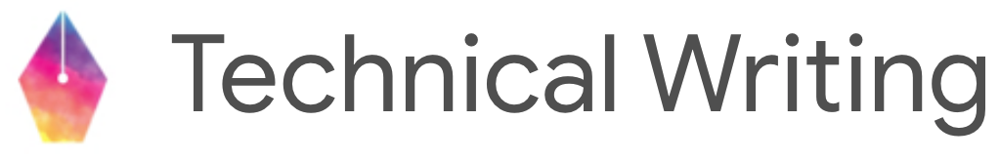
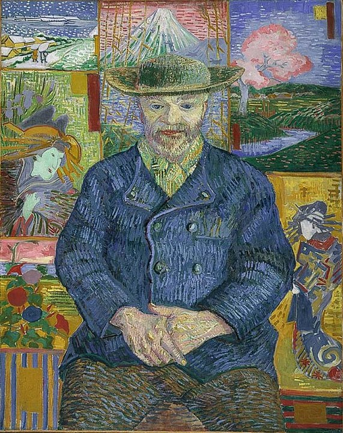
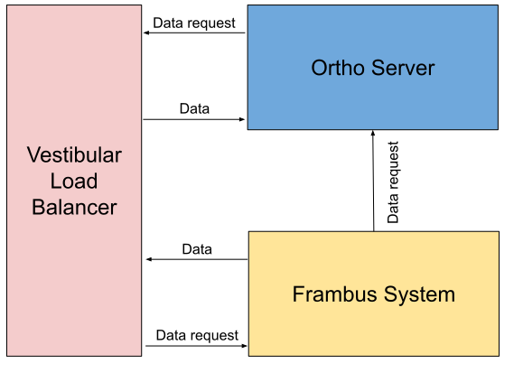

<!DOCTYPE HTML>
<html lang="en" class="light sidebar-visible" dir="ltr">
    <head>
        <!-- Book generated using mdBook -->
        <meta charset="UTF-8">
        <title>English Study Notes</title>
        <meta name="robots" content="noindex">


        <!-- Custom HTML head -->

        <meta name="description" content="Lambert 的英语学习笔记：Technical Writing / Word Power Made Easy。">
        <meta name="viewport" content="width=device-width, initial-scale=1">
        <meta name="theme-color" content="#ffffff">

        <link rel="icon" href="favicon.svg">
        <link rel="shortcut icon" href="favicon.png">
        <link rel="stylesheet" href="css/variables.css">
        <link rel="stylesheet" href="css/general.css">
        <link rel="stylesheet" href="css/chrome.css">
        <link rel="stylesheet" href="css/print.css" media="print">

        <!-- Fonts -->
        <link rel="stylesheet" href="FontAwesome/css/font-awesome.css">
        <link rel="stylesheet" href="fonts/fonts.css">

        <!-- Highlight.js Stylesheets -->
        <link rel="stylesheet" id="highlight-css" href="highlight.css">
        <link rel="stylesheet" id="tomorrow-night-css" href="tomorrow-night.css">
        <link rel="stylesheet" id="ayu-highlight-css" href="ayu-highlight.css">

        <!-- Custom theme stylesheets -->


        <!-- Provide site root and default themes to javascript -->
        <script>
            const path_to_root = "";
            const default_light_theme = "light";
            const default_dark_theme = "navy";
            window.path_to_searchindex_js = "searchindex.js";
        </script>
        <!-- Start loading toc.js asap -->
        <script src="toc.js"></script>
    </head>
    <body>
    <div id="mdbook-help-container">
        <div id="mdbook-help-popup">
            <h2 class="mdbook-help-title">Keyboard shortcuts</h2>
            <div>
                <p>Press <kbd>←</kbd> or <kbd>→</kbd> to navigate between chapters</p>
                <p>Press <kbd>S</kbd> or <kbd>/</kbd> to search in the book</p>
                <p>Press <kbd>?</kbd> to show this help</p>
                <p>Press <kbd>Esc</kbd> to hide this help</p>
            </div>
        </div>
    </div>
    <div id="body-container">
        <!-- Work around some values being stored in localStorage wrapped in quotes -->
        <script>
            try {
                let theme = localStorage.getItem('mdbook-theme');
                let sidebar = localStorage.getItem('mdbook-sidebar');

                if (theme.startsWith('"') && theme.endsWith('"')) {
                    localStorage.setItem('mdbook-theme', theme.slice(1, theme.length - 1));
                }

                if (sidebar.startsWith('"') && sidebar.endsWith('"')) {
                    localStorage.setItem('mdbook-sidebar', sidebar.slice(1, sidebar.length - 1));
                }
            } catch (e) { }
        </script>

        <!-- Set the theme before any content is loaded, prevents flash -->
        <script>
            const default_theme = window.matchMedia("(prefers-color-scheme: dark)").matches ? default_dark_theme : default_light_theme;
            let theme;
            try { theme = localStorage.getItem('mdbook-theme'); } catch(e) { }
            if (theme === null || theme === undefined) { theme = default_theme; }
            const html = document.documentElement;
            html.classList.remove('light')
            html.classList.add(theme);
            html.classList.add("js");
        </script>

        <input type="checkbox" id="sidebar-toggle-anchor" class="hidden">

        <!-- Hide / unhide sidebar before it is displayed -->
        <script>
            let sidebar = null;
            const sidebar_toggle = document.getElementById("sidebar-toggle-anchor");
            if (document.body.clientWidth >= 1080) {
                try { sidebar = localStorage.getItem('mdbook-sidebar'); } catch(e) { }
                sidebar = sidebar || 'visible';
            } else {
                sidebar = 'hidden';
                sidebar_toggle.checked = false;
            }
            if (sidebar === 'visible') {
                sidebar_toggle.checked = true;
            } else {
                html.classList.remove('sidebar-visible');
            }
        </script>

        <nav id="sidebar" class="sidebar" aria-label="Table of contents">
            <!-- populated by js -->
            <mdbook-sidebar-scrollbox class="sidebar-scrollbox"></mdbook-sidebar-scrollbox>
            <noscript>
                <iframe class="sidebar-iframe-outer" src="toc.html"></iframe>
            </noscript>
            <div id="sidebar-resize-handle" class="sidebar-resize-handle">
                <div class="sidebar-resize-indicator"></div>
            </div>
        </nav>

        <div id="page-wrapper" class="page-wrapper">

            <div class="page">
                <div id="menu-bar-hover-placeholder"></div>
                <div id="menu-bar" class="menu-bar sticky">
                    <div class="left-buttons">
                        <label id="sidebar-toggle" class="icon-button" for="sidebar-toggle-anchor" title="Toggle Table of Contents" aria-label="Toggle Table of Contents" aria-controls="sidebar">
                            <i class="fa fa-bars"></i>
                        </label>
                        <button id="theme-toggle" class="icon-button" type="button" title="Change theme" aria-label="Change theme" aria-haspopup="true" aria-expanded="false" aria-controls="theme-list">
                            <i class="fa fa-paint-brush"></i>
                        </button>
                        <ul id="theme-list" class="theme-popup" aria-label="Themes" role="menu">
                            <li role="none"><button role="menuitem" class="theme" id="default_theme">Auto</button></li>
                            <li role="none"><button role="menuitem" class="theme" id="light">Light</button></li>
                            <li role="none"><button role="menuitem" class="theme" id="rust">Rust</button></li>
                            <li role="none"><button role="menuitem" class="theme" id="coal">Coal</button></li>
                            <li role="none"><button role="menuitem" class="theme" id="navy">Navy</button></li>
                            <li role="none"><button role="menuitem" class="theme" id="ayu">Ayu</button></li>
                        </ul>
                        <button id="search-toggle" class="icon-button" type="button" title="Search (`/`)" aria-label="Toggle Searchbar" aria-expanded="false" aria-keyshortcuts="/ s" aria-controls="searchbar">
                            <i class="fa fa-search"></i>
                        </button>
                    </div>

                    <h1 class="menu-title">English Study Notes</h1>

                    <div class="right-buttons">
                        <a href="print.html" title="Print this book" aria-label="Print this book">
                            <i id="print-button" class="fa fa-print"></i>
                        </a>
                        <a href="https://english.lambert.wang" title="Git repository" aria-label="Git repository">
                            <i id="git-repository-button" class="fa fa-github"></i>
                        </a>

                    </div>
                </div>

                <div id="search-wrapper" class="hidden">
                    <form id="searchbar-outer" class="searchbar-outer">
                        <div class="search-wrapper">
                            <input type="search" id="searchbar" name="searchbar" placeholder="Search this book ..." aria-controls="searchresults-outer" aria-describedby="searchresults-header">
                            <div class="spinner-wrapper">
                                <i class="fa fa-spinner fa-spin"></i>
                            </div>
                        </div>
                    </form>
                    <div id="searchresults-outer" class="searchresults-outer hidden">
                        <div id="searchresults-header" class="searchresults-header"></div>
                        <ul id="searchresults">
                        </ul>
                    </div>
                </div>

                <!-- Apply ARIA attributes after the sidebar and the sidebar toggle button are added to the DOM -->
                <script>
                    document.getElementById('sidebar-toggle').setAttribute('aria-expanded', sidebar === 'visible');
                    document.getElementById('sidebar').setAttribute('aria-hidden', sidebar !== 'visible');
                    Array.from(document.querySelectorAll('#sidebar a')).forEach(function(link) {
                        link.setAttribute('tabIndex', sidebar === 'visible' ? 0 : -1);
                    });
                </script>

                <div id="content" class="content">
                    <main>
                        <hr />
<h2>title: "README"
status: public
date: 2025-07-20</h2>
<p></p>
<div style="break-before: page; page-break-before: always;"></div><hr />
<h2>title: "Chapter 3. How to talk about personality types"
status: public
date: 2025-07-20</h2>
<h2 id="chapter-3-how-to-talk-about-personality-types"><a class="header" href="#chapter-3-how-to-talk-about-personality-types">Chapter 3. How to talk about personality types</a></h2>
<h3 id="words"><a class="header" href="#words">Words</a></h3>
<div class="table-wrapper"><table><thead><tr><th>Word</th><th>Meaning</th></tr></thead><tbody>
<tr><td>1. <strong>egoist</strong></td><td>believes in self-advancement</td></tr>
<tr><td>{% em type="green" %}<strong>Latin</strong> <strong>Root</strong> [<strong>ego</strong>]{% endem %}</td><td>I</td></tr>
<tr><td>egocentric</td><td>Self centric</td></tr>
<tr><td>egomaniac</td><td>someone who displays egomania, a tendency to refer to oneself excessively and boastfully</td></tr>
<tr><td>{% em type="green" %} [<strong>-al</strong>]{% endem %}</td><td>Subject suffix</td></tr>
<tr><td>egomaniacal</td><td>someone who displays egomania, a tendency to refer to oneself excessively and boastfully</td></tr>
<tr><td>2. <strong>egotist</strong></td><td>talks about accomplishments</td></tr>
<tr><td>3. altruist</td><td>is interested in the welfare of others</td></tr>
<tr><td>{% em type="green" %}Latin [<strong>alter</strong>]{% endem %}</td><td>Other</td></tr>
<tr><td>altruist/altruism/altruistic</td><td><strong>Person/Quality/Adjective</strong>:unselfishly concerned for or devoted to the welfare of others.</td></tr>
<tr><td>alternate/alternative/alternation</td><td>to interchange repeatedly and regularly with one another in time or place; rotate</td></tr>
<tr><td>altercation</td><td>a heated or angry dispute</td></tr>
<tr><td>alter ego</td><td>a second self; a perfect substitute or deputy</td></tr>
<tr><td>4. <strong>introvert</strong></td><td>turns thoughts inward</td></tr>
<tr><td>{% em type="green" %}[<strong>intro-</strong>]{% endem %}</td><td>inward</td></tr>
<tr><td>{% em type="green" %}Latin [<strong>verto</strong>]{% endem %}</td><td>to turn</td></tr>
<tr><td>5. <strong>extrovert</strong></td><td>turns thoughts outward</td></tr>
<tr><td>{% em type="green" %}[<strong>extro-</strong>]{% endem %}</td><td>outward</td></tr>
<tr><td>6. <strong>ambivert</strong></td><td>turns thoughts both inward and outward</td></tr>
<tr><td>{% em type="green" %}[<strong>ambi-</strong>]{% endem %}</td><td>both</td></tr>
<tr><td>{% em type="green" %}Latin [<strong>dexter</strong>]{% endem %}</td><td>right hand</td></tr>
<tr><td>dexterous/dextrerity</td><td>skillful or adroit in the use of the hands or body</td></tr>
<tr><td>ambidexterous</td><td></td></tr>
<tr><td>{% em type="green" %}[<strong>-ity</strong>]{% endem %}</td><td>noun prefix</td></tr>
<tr><td>{% em type="green" %}Latin [<strong>sinister</strong>]{% endem %}</td><td>left hand</td></tr>
<tr><td>{% em type="green" %}Frenche [<strong>gauche</strong>]{% endem %}</td><td>笨拙的</td></tr>
<tr><td>gaucherie</td><td>awkward, clumsy,tactless</td></tr>
<tr><td>{% em type="green" %}Frenche[<strong>droit</strong>]{% endem %}</td><td>right hand</td></tr>
<tr><td>adroit/adroitness</td><td>figuratively skillful, especially in the exercise of the mental facilities</td></tr>
<tr><td>7. <strong>misanthrope</strong></td><td>hates people</td></tr>
<tr><td>{% em type="green" %}Greek[<strong>misein</strong>]{% endem %}</td><td>to hate</td></tr>
<tr><td>{% em type="green" %}Greek[<strong>anthropos</strong>]{% endem %}</td><td>mankind</td></tr>
<tr><td>8. <strong>misogynist</strong></td><td>hates women</td></tr>
<tr><td>{% em type="green" %}Greek[<strong>gyne</strong>]{% endem %}</td><td>woman</td></tr>
<tr><td>9. misogamist</td><td>hates marriage</td></tr>
<tr><td>philanthropist</td><td>one who loves mankind</td></tr>
<tr><td>anthropology</td><td>the study of the development of the human race</td></tr>
<tr><td>gynecologist</td><td>the medical speciallist who treats female disorders</td></tr>
<tr><td>{% em type="green" %}Greek[<strong>gamos</strong>]{% endem %}</td><td>marriage</td></tr>
<tr><td>{% em type="green" %}[<strong>monos</strong>]{% endem %}</td><td>one</td></tr>
<tr><td>{% em type="green" %}[<strong>bi-</strong>]{% endem %}</td><td>two</td></tr>
<tr><td>polygyny</td><td>many wives</td></tr>
<tr><td>polygamy</td><td>many marriage</td></tr>
<tr><td>monogamy</td><td>single marriage</td></tr>
<tr><td>bigamy</td><td>double marriage</td></tr>
<tr><td>{% em type="green" %}Greek[<strong>polys</strong>]{% endem %}</td><td>many</td></tr>
<tr><td>{% em type="green" %}Greek[<strong>andros</strong>]{% endem %}</td><td>male</td></tr>
<tr><td>{% em type="green" %}[<strong>-ist</strong>]{% endem %}</td><td>person suffix</td></tr>
<tr><td>{% em type="green" %}[<strong>-ic</strong>] [<strong>-ous</strong>]{% endem %}</td><td>adjective suffix</td></tr>
<tr><td>{% em type="green" %}[<strong>-y</strong>]{% endem %}</td><td>suffi for a practice</td></tr>
<tr><td>10. <strong>ascetic</strong></td><td>does not pursue pleasures of the flesh</td></tr>
<tr><td>{% em type="green" %}Greek[<strong>asketes</strong>]{% endem %}</td><td>monk or hermit</td></tr>
</tbody></table>
</div><div style="break-before: page; page-break-before: always;"></div><hr />
<h2>title: "Chapter 4. How to talk about doctors"
status: public
date: 2025-07-20</h2>
<h2 id="chapter-4-how-to-talk-about-doctors"><a class="header" href="#chapter-4-how-to-talk-about-doctors">Chapter 4. How to talk about doctors</a></h2>
<h3 id="words-1"><a class="header" href="#words-1">Words</a></h3>
<div class="table-wrapper"><table><thead><tr><th>Root/Word</th><th>Meaning</th></tr></thead><tbody>
<tr><td>1. <strong>internist</strong></td><td>a physician specializing in the diagnosis and nonsurgical treatment of diseases, especially of adults.</td></tr>
<tr><td>{% em type="green" %} Latin[<strong>internus</strong>]{% endem %}</td><td>inside (Internist)</td></tr>
<tr><td>internal</td><td>situated or existing in the interior of something; interior</td></tr>
<tr><td>2. <strong>gynecologist</strong></td><td>a physician specializing in gynecology</td></tr>
<tr><td>{% em type="green" %}Greek[<strong>gyne</strong>]{% endem %}</td><td>woman (gynecology)</td></tr>
<tr><td>gynecology/gynecological</td><td>the branch of medical science that deals with the health maintenance and diseases of women, especially of the reproductive organs.</td></tr>
<tr><td>3. <strong>obstetrician</strong></td><td>a physician who specializes in <a href="https://www.dictionary.com/browse/obstetrics">obstetrics</a></td></tr>
<tr><td>{% em type="green" %}Latin [<strong>obstetrix</strong>]{% endem %}</td><td>midwife</td></tr>
<tr><td>{% em type="green" %}Suffix [<strong>-ician</strong>]{% endem %}</td><td>expert</td></tr>
<tr><td>obstetric/obstetrical</td><td></td></tr>
<tr><td>4. pediatrician</td><td>a physician who specializes in <a href="https://www.dictionary.com/browse/pediatrics">pediatrics</a></td></tr>
<tr><td>{% em type="green" %}Greek[<strong>paidos</strong>]{% endem %}</td><td>child</td></tr>
<tr><td>pediatric</td><td></td></tr>
<tr><td>{% em type="green" %}[<strong>agogos</strong>]{% endem %}</td><td>leading, leader（pedagogue, demagogue）</td></tr>
<tr><td>pedagogue</td><td>Versed pedagogy, but with an uunhappy history</td></tr>
<tr><td>pedagogy</td><td>The leading of children</td></tr>
<tr><td>{% em type="green" %}[<strong>pedis</strong>]{% endem %}</td><td>foot</td></tr>
<tr><td>5. <strong>dermatologist</strong></td><td>a specialist in <a href="https://www.dictionary.com/browse/dermatology">dermatology</a>, especially a doctor who specializes in the treatment of diseases of the skin</td></tr>
<tr><td>{% em type="green" %}[<strong>demos</strong>]{% endem %}</td><td>people</td></tr>
<tr><td>demagogue</td><td>a person, especially an orator or political leader, who gains power and popularity by arousing the emotions, passions, and prejudices of the people.</td></tr>
<tr><td>{% em type="green" %}Greek [<strong>derma</strong>]{% endem %}</td><td>skin</td></tr>
<tr><td>{% em type="green" %}Greek[<strong>hypos</strong>]{% endem %}</td><td>under</td></tr>
<tr><td>hypodemic</td><td>皮下注射</td></tr>
<tr><td>6. <strong>ophthalmologist</strong></td><td>a doctor of medicine specializing in <a href="https://www.dictionary.com/browse/ophthalmology">ophthalmology</a></td></tr>
<tr><td>{% em type="green" %}Greek [<strong>ophthalmos</strong>]{% endem %}</td><td>eye</td></tr>
<tr><td>{% em type="green" %}[<strong>oculus</strong>]{% endem %}</td><td>eye</td></tr>
<tr><td>ocular</td><td>adjective refers to the eye</td></tr>
<tr><td>{% em type="green" %}[<strong>monos</strong>]{% endem %}</td><td>one</td></tr>
<tr><td>monocle</td><td>a lens for one eye</td></tr>
<tr><td>{% em type="green" %}[<strong>bi-</strong>]{% endem %}</td><td>two</td></tr>
<tr><td><strong><strong>binoculars</strong></strong></td><td>双筒望远镜</td></tr>
<tr><td>inoculate</td><td>an "eye" is made in your skin when you are affected</td></tr>
<tr><td>{% em type="green" %}[-<strong>ician</strong>]{% endem %}</td><td>expert</td></tr>
<tr><td>{% em type="green" %} Greek [<strong>opsis</strong>, <strong>optikos</strong>]{% endem %}</td><td>vision, sight</td></tr>
<tr><td>{% em type="green" %}Greek [<strong>metron</strong>]{% endem %}</td><td>measurement</td></tr>
<tr><td>optometrists</td><td></td></tr>
<tr><td>7. <strong>orthopedist</strong></td><td>A specialist in orthopedics.</td></tr>
<tr><td>{% em type="green" %}Greek [<strong>orthos</strong>]{% endem %}</td><td>straight, correct. .</td></tr>
<tr><td><strong>orthopedist</strong>、 <strong>orthopedic</strong></td><td>coined in 1741 by tht author of a textbook ont the prevention of childhod diseases -- at that time the correction of spinal curavture in children was a main concern</td></tr>
<tr><td>{% em type="green" %}[<strong>odontos</strong>]{% endem %}</td><td>tooth</td></tr>
<tr><td>orthodontia</td><td></td></tr>
<tr><td>orthodontic</td><td></td></tr>
<tr><td>8. <strong>cardiologist</strong></td><td>the study of the heart and its functions in health and disease</td></tr>
<tr><td>{% em type="green" %}Greek[<strong>kardia</strong>]{% endem %}</td><td>heart.</td></tr>
<tr><td>cardiagram</td><td></td></tr>
<tr><td>cardiagraph</td><td></td></tr>
<tr><td>{% em type="green" %}[<strong>logos</strong>]{% endem %}</td><td>science; study</td></tr>
<tr><td>9. <strong>neurologist</strong></td><td>a physician specializing in <a href="https://www.dictionary.com/browse/neurology">neurology</a></td></tr>
<tr><td>{% em type="green" %}Greek[<strong>neuron</strong>]{% endem %}</td><td>nerve.</td></tr>
<tr><td>neurology</td><td></td></tr>
<tr><td>neurological</td><td></td></tr>
<tr><td>{% em type="green" %}[<strong>algos</strong>]{% endem %}</td><td>pain.</td></tr>
<tr><td>neuralgia</td><td>pain along the nerves and their branches</td></tr>
<tr><td>{% em type="green" %}suffix [-<strong>osis</strong>]{% endem %}</td><td>abnormal or diseased condition.</td></tr>
<tr><td>neurosis/neurotic</td><td>神经衰弱</td></tr>
<tr><td>{% em type="green" %}[-<strong>itis</strong>]{% endem %}</td><td>inflammation</td></tr>
<tr><td>neuritis</td><td>inflammation of the nerves</td></tr>
<tr><td>10. <strong>psychiatrist</strong></td><td>a physician who practices <a href="https://www.dictionary.com/browse/psychiatry">psychiatry</a></td></tr>
<tr><td>{% em type="green" %}Greek[<strong>psyche</strong>]{% endem %}</td><td>spirit, soul, mind</td></tr>
<tr><td>psychotic</td><td>one who lost contact with reality</td></tr>
<tr><td>{% em type="green" %}[<strong>iatreia</strong>]{% endem %}</td><td>medical healing.</td></tr>
<tr><td>psychiatrics</td><td>mind healer</td></tr>
<tr><td>{% em type="green" %}Greek[<strong>geras</strong>]{% endem %}</td><td>old.</td></tr>
<tr><td>pediatrics</td><td>the specialty dealing with the particular medical needs of the elderly</td></tr>
</tbody></table>
</div><div style="break-before: page; page-break-before: always;"></div><hr />
<h2>title: "Chapter 5. How to talk about various practitioners"
status: public
date: 2025-07-20</h2>
<h2 id="chapter-5-how-to-talk-about-various-practitioners"><a class="header" href="#chapter-5-how-to-talk-about-various-practitioners">Chapter 5. How to talk about various practitioners</a></h2>
<div class="table-wrapper"><table><thead><tr><th>Root/Word</th><th>Pronunciation</th><th>Meaning</th></tr></thead><tbody>
<tr><td>1. <strong>psychologist</strong></td><td>sī-KOL′-Ə-jist</td><td>心理学家</td></tr>
<tr><td>{% em type="green" %} Greek [<strong>psyche</strong>]{% endem %}</td><td></td><td>spirit, soul, mind</td></tr>
<tr><td>psyche</td><td></td><td>灵魂，心灵，精神</td></tr>
<tr><td>psychic</td><td></td><td>精神的，超自然的，灵魂的</td></tr>
<tr><td>{% em type="green" %} Greek [<strong>iatreia</strong>]{% endem %}</td><td></td><td>medical healing</td></tr>
<tr><td>psychiatrist</td><td></td><td>精神病医生</td></tr>
<tr><td>{% em type="green" %} [<strong>-ic</strong>]{% endem %}</td><td></td><td>adjective suffix</td></tr>
<tr><td>{% em type="green" %}Greek  [<strong>soma</strong>]{% endem %}</td><td></td><td>body</td></tr>
<tr><td>psychosomatic</td><td></td><td>受心理影响的</td></tr>
<tr><td>{% em type="green" %}Greek [<strong>pathos</strong>]{% endem %}</td><td></td><td>suffering, disease</td></tr>
<tr><td>psychopathic</td><td></td><td>精神变态的</td></tr>
<tr><td>2. <strong>psychoanalyst</strong></td><td>sī-kō-AN′-Ə-list</td><td>精神分析学家</td></tr>
<tr><td>psychoanalysis</td><td></td><td>精神分析</td></tr>
<tr><td>{% em type="green" %}Greek [<strong>genesis</strong>]{% endem %}</td><td></td><td>birth, origin</td></tr>
<tr><td>psychogenic</td><td></td><td>心理性的</td></tr>
<tr><td>psychotherapy</td><td></td><td>精神疗法</td></tr>
<tr><td>psychotherapist</td><td></td><td>精神疗法医生</td></tr>
<tr><td>3. <strong>orthodontist</strong></td><td>awr-thƏ-DON′-tist</td><td>正齿医生</td></tr>
<tr><td>{% em type="green" %} Greek [<strong>othos</strong>]{% endem %}</td><td></td><td>straight</td></tr>
<tr><td>{% em type="green" %} Greek [<strong>odontos</strong>]{% endem %}</td><td></td><td>tooth</td></tr>
<tr><td>{% em type="green" %} [<strong>paidos</strong>]{% endem %}</td><td></td><td>child</td></tr>
<tr><td>pedodontic/pedodontist/pedodontia</td><td></td><td>儿童牙医/儿童牙科的/儿童牙科</td></tr>
<tr><td>{% em type="green" %}Greek [<strong>endon</strong>]{% endem %}</td><td></td><td>inner</td></tr>
<tr><td>endodontist</td><td></td><td>牙髓病学</td></tr>
<tr><td>{% em type="green" %} [<strong>ex-</strong>]{% endem %}</td><td></td><td>out</td></tr>
<tr><td>exodontist</td><td></td><td>拔牙专家</td></tr>
<tr><td>{% em type="green" %} [<strong>peri-</strong>]{% endem %}</td><td></td><td>around</td></tr>
<tr><td>periodontist</td><td></td><td>牙周病学家</td></tr>
<tr><td>4. <strong>optometrist</strong></td><td>op-TOM′-Ə-trist</td><td>验光师</td></tr>
<tr><td>{% em type="green" %} [<strong>opsis,optikos</strong>]{% endem %}</td><td></td><td>view</td></tr>
<tr><td>{% em type="green" %} [<strong>metron</strong>]{% endem %}</td><td></td><td>measurement</td></tr>
<tr><td>{% em type="green" %} Greek [<strong>therme</strong>]{% endem %}</td><td></td><td>heat</td></tr>
<tr><td>thermonmeter</td><td></td><td>温度计</td></tr>
<tr><td>{% em type="green" %} Greek [<strong>baros</strong>]{% endem %}</td><td></td><td>weight</td></tr>
<tr><td>barometer</td><td></td><td>气压计</td></tr>
<tr><td>{% em type="green" %}Greek [<strong>sphygmos</strong>]{% endem %}</td><td></td><td>pulse</td></tr>
<tr><td>sphygmomanometer</td><td></td><td>血压计</td></tr>
<tr><td>5. <strong>optician</strong></td><td>op-TISH′-Ən</td><td>眼镜商，配制👓技师</td></tr>
<tr><td>6. <strong>osteopath</strong></td><td>OS′-tee-Ə-path</td><td>整骨疗法专家</td></tr>
<tr><td>{% em type="green" %} Greek [<strong>osteon</strong>]{% endem %}</td><td></td><td>bone</td></tr>
<tr><td>osteopathy, osteopathic</td><td></td><td>整骨疗法，整骨疗法的</td></tr>
<tr><td>{% em type="green" %} Greek[pathos]{% endem %}</td><td></td><td>suffering, disease</td></tr>
<tr><td>7. <strong>chiropractor</strong></td><td>KĪ′-rƏ-prƏk′-tƏr</td><td>脊骨神经科医生，手疗法医师</td></tr>
<tr><td>chiropratic</td><td></td><td>手治疗法</td></tr>
<tr><td>{% em type="green" %}Greek [cheir], rewritten to Englisth chiro-{% endem %}</td><td></td><td>hand</td></tr>
<tr><td>{% em type="green" %}Greek[-mancy]{% endem %}</td><td></td><td>foretelling</td></tr>
<tr><td>chiromancy/chiromancer</td><td></td><td>手相术/手相师</td></tr>
<tr><td>chiromantic</td><td></td><td>手相的</td></tr>
<tr><td>chirography/chirographer</td><td></td><td>书法/书法家</td></tr>
<tr><td>8. <strong>podiatrist</strong></td><td>pƏ-DĪ′-Ə-trist</td><td>足病医生</td></tr>
<tr><td>{% em type="green" %}Greek [<strong>pous, podos</strong>]{% endem %}</td><td></td><td>foot</td></tr>
<tr><td>{% em type="green" %}Greek [<strong>iatreia</strong>]{% endem %}</td><td></td><td>medical healing</td></tr>
<tr><td>podiatry/podiatric</td><td></td><td>足部医疗/足部医学的</td></tr>
<tr><td>{% em type="green" %}Greek [<strong>okto</strong>]{% endem %}</td><td></td><td>eight</td></tr>
<tr><td>octopus</td><td></td><td>章鱼</td></tr>
<tr><td>{% em type="green" %}Greek [platys]{% endem %}</td><td></td><td>broad,flat</td></tr>
<tr><td>platypus</td><td></td><td>鸭嘴兽</td></tr>
<tr><td>{% em type="green" %}[-ium]{% endem %}</td><td></td><td>place where</td></tr>
<tr><td>podium</td><td></td><td>讲台，表演台</td></tr>
<tr><td>{% em type="green" %}[tri-]{% endem %}</td><td></td><td>three</td></tr>
<tr><td>tripod</td><td></td><td>三足的东西（三脚架，三足鼎，等）</td></tr>
<tr><td>chiropodist</td><td>kƏ-ROP’-Ə-dist</td><td>手足病医生</td></tr>
<tr><td>9. <strong>graphologist</strong></td><td></td><td>笔相家</td></tr>
<tr><td>{% em type="green" %}Greek [graphein]{% endem %}</td><td></td><td>to write</td></tr>
<tr><td>{% em type="green" %}Greek [kallos]{% endem %}</td><td></td><td>beauty</td></tr>
<tr><td>calligraphy</td><td></td><td>美术字</td></tr>
<tr><td>cardiography</td><td></td><td>心电图</td></tr>
<tr><td>{% em type="green" %}Greek [kakos]{% endem %}</td><td></td><td>bad,harsh</td></tr>
<tr><td>cacography</td><td></td><td>书法不佳</td></tr>
<tr><td>photograph</td><td></td><td>照片</td></tr>
<tr><td>{% em type="green" %}Greek [phone]{% endem %}</td><td></td><td>sound</td></tr>
<tr><td>phonograph</td><td></td><td>留声机</td></tr>
<tr><td>{% em type="green" %}Greek [tele-]{% endem %}</td><td></td><td>distance</td></tr>
<tr><td>telegraph</td><td></td><td>电报</td></tr>
<tr><td>{% em type="green" %}Greek [bio-]{% endem %}</td><td></td><td>life</td></tr>
<tr><td>biography</td><td></td><td>传记</td></tr>
<tr><td>10. <strong>gerontologist</strong></td><td>jair′-Ən-TOL′-Ə-jist</td><td>老年病专家</td></tr>
<tr><td>{% em type="green" %}Greek [geras]{% endem %}</td><td></td><td>old age</td></tr>
<tr><td>gerontological</td><td></td><td>老年学的</td></tr>
<tr><td>{% em type="green" %}Latin [senex]{% endem %}</td><td></td><td>old</td></tr>
<tr><td>senile</td><td></td><td>衰老的</td></tr>
<tr><td>senescent</td><td></td><td>变老的,growing old</td></tr>
<tr><td>senior/senirority</td><td></td><td>资深的, older</td></tr>
<tr><td>senate</td><td></td><td>参议院，上院. A council  older</td></tr>
</tbody></table>
</div><div style="break-before: page; page-break-before: always;"></div><hr />
<h2>title: "Chapter 6. How to talk about science and scientists"
status: public
date: 2025-07-20</h2>
<h2 id="chapter-6-how-to-talk-about-science-and-scientists"><a class="header" href="#chapter-6-how-to-talk-about-science-and-scientists">Chapter 6. How to talk about science and scientists</a></h2>
<div class="table-wrapper"><table><thead><tr><th>Word/Root</th><th>Pronunciation</th><th>Meaning</th></tr></thead><tbody>
<tr><td>1. <strong>anthropologist</strong></td><td>an′-thr Ə -POL′- Ə -jist</td><td>人类学家</td></tr>
<tr><td>{% em type="green" %}Greek [<strong>anthropos</strong>]{% endem %}</td><td>/</td><td>mankind</td></tr>
<tr><td>{% em type="green" %}Greek [<strong>logos</strong>]{% endem %}</td><td>/</td><td>science</td></tr>
<tr><td>2. <strong>astronomer</strong></td><td>Ə -STRON′- Ə -m Ə r</td><td>天文学家</td></tr>
<tr><td>{% em type="green" %}Greek [<strong>astron</strong>]{% endem %}</td><td>/</td><td>start</td></tr>
<tr><td>{% em type="green" %}Greek [<strong>nomos</strong>]{% endem %}</td><td>/</td><td>arrangement, law</td></tr>
<tr><td>astronomy</td><td></td><td>天文学</td></tr>
<tr><td>astronomical</td><td></td><td>天文数字的</td></tr>
<tr><td>astrology</td><td></td><td>占星术</td></tr>
<tr><td>{% em type="green" %}Greek [<strong>nautes</strong>]{% endem %}</td><td>/</td><td>Sailor</td></tr>
<tr><td>astronaut</td><td></td><td>宇航员</td></tr>
<tr><td>{% em type="green" %}Greek [<strong>kosmos</strong>]{% endem %}</td><td></td><td>universe</td></tr>
<tr><td>cosmonaut</td><td></td><td>宇航员</td></tr>
<tr><td>nautical</td><td></td><td>海上的，海员的，水手的</td></tr>
<tr><td>aster</td><td></td><td>star shaped flower</td></tr>
<tr><td>asterisk</td><td></td><td>星号注释</td></tr>
<tr><td>astrophysics</td><td></td><td>天体物理学</td></tr>
<tr><td>{% em type="green" %}[<strong>dis-</strong>]{% endem %}</td><td></td><td>against</td></tr>
<tr><td>disaster</td><td></td><td>灾难</td></tr>
<tr><td>disastrous</td><td></td><td>灾难的</td></tr>
<tr><td>{% em type="green" %}[<strong>autos</strong>]{% endem %}</td><td></td><td>self</td></tr>
<tr><td>autonomous</td><td></td><td>自治的</td></tr>
<tr><td>autonomy</td><td></td><td>自治</td></tr>
<tr><td>metronome</td><td></td><td>节拍器</td></tr>
<tr><td>3. <strong>geologist</strong></td><td>jee-OL′- Ə -jist</td><td>地质学家</td></tr>
<tr><td>{% em type="green" %}Greek [<strong>geo-</strong>]{% endem %}</td><td></td><td>earth</td></tr>
<tr><td>geometry</td><td></td><td>几何学（the measurement of the earth）</td></tr>
<tr><td>geometrician</td><td></td><td>几何学家</td></tr>
<tr><td>geometric</td><td></td><td>几何学的</td></tr>
<tr><td>geography/geographer</td><td></td><td>地理学的/地理学家</td></tr>
<tr><td>4. <strong>biologist</strong></td><td>bī-OL′- Ə -jist</td><td>生物学家</td></tr>
<tr><td>{% em type="green" %}Greek [<strong>bios</strong>]{% endem %}</td><td></td><td>life</td></tr>
<tr><td>biography</td><td></td><td>传记</td></tr>
<tr><td>autobiography</td><td></td><td>自传</td></tr>
<tr><td>{% em type="green" %}Greek [<strong>opsis, optikos</strong>]{% endem %}</td><td></td><td>view,vision</td></tr>
<tr><td>biopsy</td><td></td><td>活体检查</td></tr>
<tr><td>autopsy</td><td></td><td>验尸</td></tr>
<tr><td>5. <strong>botanist</strong></td><td>BOT′- Ə -nist</td><td>植物学家</td></tr>
<tr><td>{% em type="green" %}Greek [<strong>botane</strong>]{% endem %}</td><td></td><td>plant</td></tr>
<tr><td>botany</td><td></td><td>植物学</td></tr>
<tr><td>botanical</td><td></td><td>植物学的</td></tr>
<tr><td>6. <strong>zoologist</strong></td><td>zō-OL′- Ə -jist</td><td>动物学家</td></tr>
<tr><td>{% em type="green" %}Greek [<strong>zoion</strong>]{% endem %}</td><td></td><td>animal</td></tr>
<tr><td>zoology</td><td></td><td>动物学</td></tr>
<tr><td>zoological</td><td></td><td>动物学的</td></tr>
<tr><td>zodiac</td><td></td><td>星座，黄道十二宫</td></tr>
<tr><td>7. <strong>entomologist</strong></td><td>en′-t Ə -MOL′- Ə -jist</td><td>昆虫学家</td></tr>
<tr><td>{% em type="green" %}Greek [<strong>en-</strong>]{% endem %}</td><td></td><td>in</td></tr>
<tr><td>{% em type="green" %}Greek [<strong>tome</strong>]{% endem %}</td><td></td><td>a cutting</td></tr>
<tr><td>{% em type="green" %}Latin [<strong>in-</strong>]{% endem %}</td><td></td><td>in</td></tr>
<tr><td>{% em type="green" %}Latin [<strong>sectus</strong>]{% endem %}</td><td></td><td>to cut</td></tr>
<tr><td>insect</td><td></td><td>昆虫</td></tr>
<tr><td>{% em type="green" %}Greek [<strong>ek-</strong>]{% endem %}</td><td></td><td>out</td></tr>
<tr><td>{% em type="green" %}Greek [<strong>kentron</strong>]{% endem %}</td><td></td><td>center</td></tr>
<tr><td>eccentric</td><td></td><td>out of the center，古怪的</td></tr>
<tr><td>eccentricity</td><td></td><td>古怪</td></tr>
<tr><td>{% em type="green" %}Greek [<strong>a-</strong>]{% endem %}</td><td></td><td>negative root</td></tr>
<tr><td>atom</td><td></td><td>原子</td></tr>
<tr><td>{% em type="green" %}Greek [<strong>ana-</strong>]{% endem %}</td><td></td><td>up</td></tr>
<tr><td>anatomy</td><td></td><td>解剖，分解，剖析</td></tr>
<tr><td>tome</td><td></td><td>册，卷</td></tr>
<tr><td>{% em type="green" %}Greek [<strong>dicha-</strong>]{% endem %}</td><td></td><td>in two</td></tr>
<tr><td>dichotomy</td><td></td><td>一分为二，对分</td></tr>
<tr><td>{% em type="green" %}Greek [<strong>epi-</strong>]{% endem %}</td><td></td><td>on,upon</td></tr>
<tr><td>epitome</td><td></td><td>缩影，典型的人或事物</td></tr>
<tr><td>epitomize</td><td></td><td>做....的摘要</td></tr>
<tr><td>8. <strong>philologist</strong></td><td>f Ə -LOL′- Ə -jist</td><td>语言学家</td></tr>
<tr><td>{% em type="green" %} [<strong>logos</strong>]{% endem %}</td><td></td><td>word or speech</td></tr>
<tr><td>{% em type="green" %}Latin [<strong>lingua</strong>]{% endem %}</td><td></td><td>tongue</td></tr>
<tr><td>{% em type="green" %}Greek [<strong>philein</strong>]{% endem %}</td><td></td><td>love</td></tr>
<tr><td>{% em type="green" %}Greek [<strong>andros</strong>]{% endem %}</td><td></td><td>male</td></tr>
<tr><td>philander</td><td></td><td>调戏，玩弄女性</td></tr>
<tr><td>{% em type="green" %}Greek [<strong>sophos</strong>]{% endem %}</td><td></td><td>wise</td></tr>
<tr><td>philosophy</td><td></td><td>哲学</td></tr>
<tr><td>{% em type="green" %}Greek [<strong>adelphos</strong>]{% endem %}</td><td></td><td>brother</td></tr>
<tr><td>Philadelphia</td><td></td><td>费城</td></tr>
<tr><td>{% em type="green" %}Greek [<strong>harmonia</strong>]{% endem %}</td><td></td><td>harmony</td></tr>
<tr><td>philharmonic</td><td></td><td>爱好音乐的，交响乐团的</td></tr>
<tr><td>{% em type="green" %}Greek [<strong>Aphrodite</strong>]{% endem %}</td><td></td><td>Greek goddess of love and beauty</td></tr>
<tr><td>aphrodisiac</td><td></td><td>壮阳剂，春药</td></tr>
<tr><td>{% em type="green" %}Greek [<strong>biblion</strong>]{% endem %}</td><td></td><td>book</td></tr>
<tr><td>bibliophile</td><td></td><td>爱书者</td></tr>
<tr><td>{% em type="green" %}Latin [<strong>Anglus</strong>]{% endem %}</td><td></td><td>English</td></tr>
<tr><td>9. <strong>semanticist</strong></td><td>s Ə -MAN′-t Ə -sist</td><td>语义学家</td></tr>
<tr><td>sematics</td><td></td><td>语义学</td></tr>
<tr><td>orthopedics</td><td></td><td>整形手术，矫形术</td></tr>
<tr><td>10. <strong>sociologist</strong></td><td>sō-shee-OL′- Ə -jist</td><td>社会学家</td></tr>
<tr><td>{% em type="green" %}Latin [<strong>socius</strong>]{% endem %}</td><td></td><td>companion</td></tr>
<tr><td>associate</td><td></td><td>关联</td></tr>
<tr><td>social，socialize</td><td></td><td>社会的，社交</td></tr>
<tr><td>society</td><td></td><td>社会</td></tr>
<tr><td>sociable</td><td></td><td>随和的，好焦急的</td></tr>
<tr><td>asocial</td><td></td><td>缺乏社交性的，自我中心的</td></tr>
<tr><td>{% em type="green" %}[<strong>a-</strong>]{% endem %}</td><td></td><td>negative prefix</td></tr>
<tr><td>{% em type="green" %}[<strong>anti-</strong>]{% endem %}</td><td></td><td>against</td></tr>
<tr><td>antisocial</td><td></td><td>反社会的</td></tr>
</tbody></table>
</div><div style="break-before: page; page-break-before: always;"></div><hr />
<h2>title: "Chapter 7. How to talk about liars and lying"
status: public
date: 2025-07-20</h2>
<h2 id="chapter-7-how-to-talk-about-liars-and-lying"><a class="header" href="#chapter-7-how-to-talk-about-liars-and-lying">Chapter 7. How to talk about liars and lying</a></h2>
<div class="table-wrapper"><table><thead><tr><th>Word/Root</th><th>Pronunciation</th><th>Meaning</th></tr></thead><tbody>
<tr><td>1. <strong>notorious</strong></td><td>nƏ-TAWR′-ee-Əs</td><td>臭名昭著的</td></tr>
<tr><td>{% em type="green" %}Latin [<strong>notus</strong>]{% endem %}</td><td></td><td>known</td></tr>
<tr><td>notoriety</td><td></td><td>恶名</td></tr>
<tr><td>2. <strong>consummate</strong></td><td>KAHN′-sƏ-mƏt</td><td>完美的，至上的</td></tr>
<tr><td>{% em type="green" %}Latin [<strong>summus</strong>]{% endem %}</td><td></td><td>highest</td></tr>
<tr><td>{% em type="green" %}[<strong>-ness</strong>]{% endem %}</td><td></td><td>noun suffix</td></tr>
<tr><td>sweetness</td><td></td><td>甜蜜</td></tr>
<tr><td>simpleness</td><td></td><td>简单</td></tr>
<tr><td>enviousness</td><td></td><td>嫉妒</td></tr>
<tr><td>consummateness</td><td></td><td>最重要的</td></tr>
<tr><td>{% em type="green" %}[<strong>-acy</strong>]{% endem %}</td><td></td><td>noun suffix</td></tr>
<tr><td>consummacy</td><td></td><td>最重要的</td></tr>
<tr><td>3. <strong>incorrigible</strong></td><td>in-KAWR′-Ə-jƏ-bƏl</td><td>无法矫正的，屡教不改的</td></tr>
<tr><td>{% em type="green" %}Latin [<strong>corrigo</strong>]{% endem %}</td><td></td><td>to correct or set straight</td></tr>
<tr><td>{% em type="green" %}[<strong>in-</strong>]{% endem %}</td><td></td><td>negative prefix</td></tr>
<tr><td>incorrigibility / incorrigibleness</td><td></td><td>屡教不改</td></tr>
<tr><td>4. <strong>inveterate</strong></td><td>in-VET′-Ə-rƏt</td><td>根深蒂固的</td></tr>
<tr><td>{% em type="green" %}Latin [<strong>vetus</strong>]{% endem %}</td><td></td><td>old</td></tr>
<tr><td>inveteracy/inveterateness</td><td></td><td>积习</td></tr>
<tr><td>veteran</td><td></td><td>老兵，退伍军人，经验丰富的人</td></tr>
<tr><td>5. <strong>congenital</strong></td><td>kƏn-JEN′-Ə-tƏl</td><td>先天的</td></tr>
<tr><td>{% em type="green" %}Greek [<strong>genesis</strong>]{% endem %}</td><td></td><td>birth/origin</td></tr>
<tr><td>Genetics</td><td></td><td>遗传学</td></tr>
<tr><td>geneticist</td><td></td><td>遗传学者</td></tr>
<tr><td>genetic</td><td></td><td>遗传的，基因的</td></tr>
<tr><td>genealogy</td><td></td><td>家谱</td></tr>
<tr><td>{% em type="green" %}Greek [<strong>logos</strong>]{% endem %}</td><td></td><td>study</td></tr>
<tr><td>{% em type="green" %}[<strong>con-</strong>]{% endem %}</td><td></td><td>together,with</td></tr>
<tr><td>congenital</td><td></td><td>天生的（孕妇怀孕一刻携带的）</td></tr>
<tr><td>hereditary</td><td></td><td>遗传的（生物学的）</td></tr>
<tr><td>6. <strong>chronic</strong></td><td>KRON′-ik</td><td>慢性的，积习难改的</td></tr>
<tr><td>{% em type="green" %}Greek [<strong>chronos</strong>]{% endem %}</td><td></td><td>time</td></tr>
<tr><td>chronicity</td><td></td><td>慢性长期的</td></tr>
<tr><td>{% em type="green" %}Greek [<strong>ana-,a-</strong>]{% endem %}</td><td></td><td>negative</td></tr>
<tr><td>anachronism</td><td></td><td>时代错误，不合时代的事</td></tr>
<tr><td>anachronistic</td><td></td><td>时代错误的</td></tr>
<tr><td>{% em type="green" %}Latin [<strong>in-</strong>]{% endem %}</td><td></td><td>negative prefix</td></tr>
<tr><td>incongruous</td><td></td><td>不合时宜的（场合上）</td></tr>
<tr><td>incongruity</td><td></td><td>不协调，不一致</td></tr>
<tr><td>chronological</td><td></td><td>时代学</td></tr>
<tr><td>chronologist</td><td></td><td>时代学者</td></tr>
<tr><td>chronometer</td><td></td><td>精密计时器，航行表</td></tr>
<tr><td>chronometry</td><td></td><td>精密计时法</td></tr>
<tr><td>{% em type="green" %}Greek [<strong>syn-</strong>]{% endem %}</td><td></td><td>together</td></tr>
<tr><td>{% em type="green" %}[<strong>-ize</strong>]{% endem %}</td><td></td><td>verb suffix</td></tr>
<tr><td>synchronize</td><td></td><td>（动）同步</td></tr>
<tr><td>synchronous</td><td></td><td>（adj.）同步的</td></tr>
<tr><td>synchronization</td><td></td><td>（名）同步</td></tr>
<tr><td>7. <strong>pathological</strong></td><td>path′-Ə-LOJ′-Ə-kƏl</td><td>病理学的，病态的</td></tr>
<tr><td>{% em type="green" %}[<strong>pathos</strong>]{% endem %}</td><td></td><td>pain，disease</td></tr>
<tr><td>{% em type="green" %}[<strong>pathos</strong>]{% endem %}</td><td></td><td>means "feeling" as well</td></tr>
<tr><td>sympathize</td><td></td><td>(v.) 同情</td></tr>
<tr><td>antipathetic</td><td></td><td>厌恶的，反感的</td></tr>
<tr><td>apathetic</td><td></td><td>无感情的，冷淡的</td></tr>
<tr><td>apathy</td><td></td><td>漠然，冷淡</td></tr>
<tr><td>{% em type="green" %}Greek [<strong>en-</strong>]{% endem %}</td><td></td><td>in</td></tr>
<tr><td>empathic</td><td></td><td>感情移入的</td></tr>
<tr><td>{% em type="green" %}[<strong>tele-</strong>]{% endem %}</td><td></td><td>distance</td></tr>
<tr><td>telepathy</td><td></td><td>心灵感应</td></tr>
<tr><td>telephone</td><td></td><td>电话</td></tr>
<tr><td>telegraph</td><td></td><td>电报</td></tr>
<tr><td>telepathic</td><td></td><td>心灵感应术的</td></tr>
<tr><td>8. <strong>unconscionable</strong></td><td>un-KON′-shƏ-nƏ-bƏl</td><td>昧着良心的，过分的</td></tr>
<tr><td>{% em type="green" %}Latin [<strong>scio</strong>]{% endem %}</td><td></td><td>to know</td></tr>
<tr><td>{% em type="green" %}Latin [<strong>sciens</strong>]{% endem %}</td><td></td><td>knowing</td></tr>
<tr><td>conscience</td><td></td><td>良知良心</td></tr>
<tr><td>conscious</td><td></td><td>慎重的，意识到的，神智清醒的</td></tr>
<tr><td>{% em type="green" %}Latin [<strong>omni</strong>]{% endem %}</td><td></td><td>all</td></tr>
<tr><td>omniscient</td><td></td><td>无所不知的</td></tr>
<tr><td>{% em type="green" %}[<strong>pre-</strong>]{% endem %}</td><td></td><td>before</td></tr>
<tr><td>prescient</td><td></td><td>有先见之明的</td></tr>
<tr><td>{% em type="green" %}[<strong>ne-</strong>]{% endem %}</td><td></td><td>negative</td></tr>
<tr><td>nescient</td><td></td><td>无知的，无学的</td></tr>
<tr><td>9. <strong>glib</strong></td><td>GLIB</td><td>油腔滑调的，不诚恳的，肤浅的</td></tr>
<tr><td>{% em type="green" %}English [<strong>glib</strong>]{% endem %}</td><td></td><td>slippery</td></tr>
<tr><td>glib</td><td></td><td>油腔滑调的，不诚恳的</td></tr>
<tr><td>10. <strong>egregious</strong></td><td>Ə-GREE′-jƏs</td><td>极坏的，异乎寻常的</td></tr>
<tr><td>{% em type="green" %}Latin [<strong>grex, gregis</strong>]{% endem %}</td><td></td><td>herd or flock</td></tr>
<tr><td>{% em type="green" %}[<strong>e-,ex-</strong>]{% endem %}</td><td></td><td>out</td></tr>
<tr><td>gregarious</td><td></td><td>爱交际的，合群的</td></tr>
<tr><td>{% em type="green" %}[<strong>se-</strong>]{% endem %}</td><td></td><td>apart</td></tr>
<tr><td>segregate</td><td></td><td>分开，分离</td></tr>
<tr><td>aggregate</td><td></td><td>集合，总数，合计</td></tr>
</tbody></table>
</div><div style="break-before: page; page-break-before: always;"></div><hr />
<h2>title: "Chapter 9. How to talk about actions"
status: public
date: 2025-07-20</h2>
<h2 id="chapter-9-how-to-talk-about-actions"><a class="header" href="#chapter-9-how-to-talk-about-actions">Chapter 9. How to talk about actions</a></h2>
<div class="table-wrapper"><table><thead><tr><th>Word/Root</th><th>Pronunciation</th><th>Meaning</th></tr></thead><tbody>
<tr><td>1. <strong>disparaging</strong></td><td>dis-PAIR′-Əj</td><td>轻蔑的，诽谤的. Lower s.b.'s par</td></tr>
<tr><td>{% em type="green" %}Latin [<strong>par</strong>]{% endem %}</td><td></td><td>equal</td></tr>
<tr><td>parity</td><td></td><td>平等，对价。 parity payments to farmers</td></tr>
<tr><td>{% em type="green" %}[<strong>dis-</strong>]{% endem %}</td><td></td><td>negative prefix</td></tr>
<tr><td>disparage<em><strong>ment</strong></em></td><td></td><td>轻视，轻蔑(n.)</td></tr>
<tr><td>disparage</td><td></td><td>轻视，贬低</td></tr>
<tr><td>disparity</td><td></td><td>不同，不等</td></tr>
<tr><td>disparate</td><td></td><td>完全不同的</td></tr>
<tr><td>{% em type="green" %}[<strong>com-,con-</strong>]{% endem %}</td><td></td><td>with, together</td></tr>
<tr><td>compare, comparable, comparative</td><td></td><td>比较，可比的，比较的</td></tr>
<tr><td>pair</td><td></td><td>一双</td></tr>
<tr><td>peer</td><td></td><td>同辈，同等的人。 peers(British, nobles)</td></tr>
<tr><td>2. <strong>equivocating</strong></td><td>ee-KWIV′-Ə-kayt′</td><td>使用模棱两可的话隐瞒真相</td></tr>
<tr><td>{% em type="green" %}Latin [<strong>aequus</strong>]， English[<strong>equ-</strong>]{% endem %}</td><td></td><td>equal</td></tr>
<tr><td>{% em type="green" %} [<strong>vox, vocis</strong>]{% endem %}</td><td></td><td>voice</td></tr>
<tr><td>{% em type="green" %} [<strong>fero</strong>]{% endem %}</td><td></td><td>to bear or carry</td></tr>
<tr><td>vocal</td><td></td><td>声音的，嗓音的。(n.)元音</td></tr>
<tr><td>vocalize</td><td></td><td>成为有声</td></tr>
<tr><td>vocallist</td><td></td><td>声乐家，歌手</td></tr>
<tr><td>{% em type="green" %} [<strong>magnus</strong>]{% endem %}</td><td></td><td>large</td></tr>
<tr><td>Magnavox</td><td></td><td>米罗华公司（电视制造商）</td></tr>
<tr><td>equivocal</td><td></td><td>模棱两可的</td></tr>
<tr><td>equivocation</td><td></td><td>模棱两可的话</td></tr>
<tr><td>unequivocally</td><td></td><td>只有一种含义地，清楚明白地</td></tr>
<tr><td>{% em type="green" %} [<strong>ambi-</strong>]{% endem %}</td><td></td><td>all</td></tr>
<tr><td>ambiguous</td><td></td><td>模棱两可的</td></tr>
<tr><td>ambiguity</td><td></td><td>歧义，不明确，暧昧</td></tr>
<tr><td>double entendre</td><td></td><td>暗示性的，冒险的，性感的。(法国)猥亵含义的双关语</td></tr>
<tr><td>equity</td><td></td><td>公平，公正，资产净值</td></tr>
<tr><td>inequity</td><td></td><td>不公</td></tr>
<tr><td>iniquity</td><td></td><td>邪恶，极不公正。den of inequity: 罪魁祸首</td></tr>
<tr><td>iniquitous</td><td></td><td>极邪恶的，极不公正的</td></tr>
<tr><td>{% em type="green" %} [<strong>nox,noctis</strong>]{% endem %}</td><td></td><td>night</td></tr>
<tr><td>equinox</td><td></td><td>昼夜平分点</td></tr>
<tr><td>equinoctial</td><td></td><td>春分或者秋分的</td></tr>
<tr><td>nocturnal</td><td></td><td>夜间的，夜间活动的</td></tr>
<tr><td>{% em type="green" %} [<strong>animus</strong>]{% endem %}</td><td></td><td>mind</td></tr>
<tr><td>equanimity</td><td></td><td>平和，镇静</td></tr>
<tr><td>equability</td><td></td><td>平静，无变动</td></tr>
<tr><td>{% em type="green" %} [<strong>libra</strong>]{% endem %}</td><td></td><td>balance,weight</td></tr>
<tr><td>equilibrium</td><td></td><td>平衡，均势，平静</td></tr>
<tr><td>equenstrian</td><td></td><td>骑马的，骑术的</td></tr>
<tr><td>equestrienne</td><td></td><td>女骑手，马戏团女骑手</td></tr>
<tr><td>equine</td><td></td><td>like a horse</td></tr>
<tr><td>{% em type="green" %}Latin [<strong>equus</strong>]{% endem %}</td><td></td><td>horse</td></tr>
<tr><td>3. <strong>titillate</strong></td><td>TIT′-Ə-layt′</td><td>挑逗，使觉得痒</td></tr>
<tr><td>{% em type="green" %}Latin [<strong>titillate</strong>]{% endem %}</td><td></td><td>to tickle</td></tr>
<tr><td>titillation</td><td></td><td>瘙痒，愉快。瘙痒感</td></tr>
<tr><td>4. <strong>adulate</strong></td><td>AJ′-Ə-layt′</td><td>谄媚，奉承</td></tr>
<tr><td>adulation</td><td></td><td>谄媚</td></tr>
<tr><td>{% em type="green" %} [<strong>-ory</strong>, <strong>-al, -ic, -ical, -ous</strong>]{% endem %}</td><td></td><td>adjective suffix</td></tr>
<tr><td>adulatory</td><td></td><td>奉承的</td></tr>
<tr><td>5. <strong>proscribing</strong></td><td>prō-SKRĪB′</td><td>正式宣布有危险或被禁止</td></tr>
<tr><td>{% em type="green" %} [<strong>pro-</strong>]{% endem %}</td><td></td><td>before</td></tr>
<tr><td>{% em type="green" %} [<strong>scribo, scriptus</strong>]{% endem %}</td><td></td><td>to write</td></tr>
<tr><td>scribe</td><td></td><td>抄写</td></tr>
<tr><td>scrible</td><td></td><td>涂鸦</td></tr>
<tr><td>prescribe</td><td></td><td>规定</td></tr>
<tr><td>{% em type="green" %} [<strong>de-</strong>]{% endem %}</td><td></td><td>down</td></tr>
<tr><td>describe</td><td></td><td>描述</td></tr>
<tr><td>{% em type="green" %} [<strong>sub-</strong>]{% endem %}</td><td></td><td>under</td></tr>
<tr><td>subway</td><td></td><td>地铁</td></tr>
<tr><td>subsurface</td><td></td><td>表面下的</td></tr>
<tr><td>subscribe</td><td></td><td>订阅</td></tr>
<tr><td>script</td><td></td><td>手稿</td></tr>
<tr><td>scriptreus</td><td></td><td>经文</td></tr>
<tr><td>manuscript</td><td></td><td>手稿</td></tr>
<tr><td>typescript</td><td></td><td>类型</td></tr>
<tr><td>{% em type="green" %}Latin [<strong>post</strong>]{% endem %}</td><td></td><td>after</td></tr>
<tr><td>postscript</td><td></td><td>附言</td></tr>
<tr><td>6. <strong>obviate</strong></td><td>OB′-vee-ayt′</td><td>避免，消除</td></tr>
<tr><td>{% em type="green" %}Latin [<strong>via</strong>]{% endem %}</td><td></td><td>road</td></tr>
<tr><td>obviation</td><td></td><td>除去，回避</td></tr>
<tr><td>{% em type="green" %} [<strong>tri-</strong>]{% endem %}</td><td></td><td>three</td></tr>
<tr><td>7. <strong>militate</strong></td><td>MIL′-Ə-tayt</td><td>产生作用或影响</td></tr>
<tr><td>{% em type="green" %}Latin [<strong>militis</strong>]{% endem %}</td><td></td><td>soldier or fighting man</td></tr>
<tr><td>militant</td><td></td><td>斗志昂扬的</td></tr>
<tr><td>military</td><td></td><td>军人，军队</td></tr>
<tr><td>militia</td><td></td><td>民兵，民兵组织</td></tr>
<tr><td>8. <strong>malign</strong></td><td>mƏ-LĪN′</td><td>v. 污蔑，诽谤  adj. bad, harmful, evil</td></tr>
<tr><td>{% em type="green" %}Latin [<strong>malus</strong>]{% endem %}</td><td></td><td>bad,evil</td></tr>
<tr><td>malignant</td><td></td><td>恶性的，致命的</td></tr>
<tr><td>malignancy</td><td></td><td>恶意</td></tr>
<tr><td>malignity</td><td></td><td>n. 极度的恶意，恶性，恶毒</td></tr>
<tr><td>{% em type="green" %} [<strong>volo</strong>]{% endem %}</td><td></td><td>to wish, to will, to be willing</td></tr>
<tr><td>malevolent</td><td></td><td>wishing evil or harm--- a malevolent glance</td></tr>
<tr><td>malevolence</td><td></td><td>恶意，狠毒</td></tr>
<tr><td>voluntary</td><td></td><td>志愿的</td></tr>
<tr><td>volition</td><td></td><td>意志，决定，选择</td></tr>
<tr><td>{% em type="green" %} [<strong>facio,factus</strong>], in English [<strong>fec-, fic-, factus, -fy</strong>]{% endem %}</td><td></td><td>to do or make</td></tr>
<tr><td>malefactor</td><td></td><td>罪犯</td></tr>
<tr><td>malefaction</td><td></td><td>犯罪行为</td></tr>
<tr><td>maladroit/maladroitness</td><td></td><td>不机敏的，笨拙的</td></tr>
<tr><td>malaise (mal ease)</td><td></td><td>不适，不舒服</td></tr>
<tr><td>malicious</td><td></td><td>恶意的</td></tr>
<tr><td>malice</td><td></td><td>恶意，怨恨，祸心</td></tr>
<tr><td>malady</td><td></td><td>弊病，弊端</td></tr>
<tr><td>maladjusted</td><td></td><td>失调的</td></tr>
<tr><td>malcontent</td><td></td><td>不满者</td></tr>
<tr><td>malpractice</td><td></td><td>玩忽职守。【医生】治疗不当</td></tr>
<tr><td>malnutrition</td><td></td><td>营养不良</td></tr>
<tr><td>{% em type="green" %}Latin [<strong>bene</strong>]{% endem %}</td><td></td><td>good</td></tr>
<tr><td>benign</td><td></td><td>温和的</td></tr>
<tr><td>benignant</td><td></td><td>仁慈的，有益的</td></tr>
<tr><td>benignity</td><td></td><td>温和，仁慈</td></tr>
<tr><td>benignancy</td><td></td><td>温和，仁慈，亲切</td></tr>
<tr><td>{% em type="green" %} [<strong>dico,dictus</strong>]{% endem %}</td><td></td><td>to say or tell</td></tr>
<tr><td>dictate/dictator/dictation/dictatorial</td><td></td><td>命令/独裁者/口述/独裁的</td></tr>
<tr><td>predict</td><td></td><td>预测</td></tr>
<tr><td>{% em type="green" %} [<strong>phone</strong>]{% endem %}</td><td></td><td>sound</td></tr>
<tr><td>dictaphone</td><td></td><td>录音机</td></tr>
<tr><td>{% em type="green" %} [<strong>contra-</strong>]{% endem %}</td><td></td><td>against, opposite</td></tr>
<tr><td>contradict</td><td></td><td>反驳</td></tr>
<tr><td>{% em type="green" %} [<strong>ad-</strong>]{% endem %}</td><td></td><td>to, toward</td></tr>
<tr><td>addiction</td><td></td><td>a saying to or toward, or the complusion to say "yes" to a habit. 毒瘾</td></tr>
<tr><td>malediction</td><td></td><td>a curse</td></tr>
<tr><td>benediction</td><td></td><td>祝福</td></tr>
<tr><td>beneficent</td><td></td><td>行善的</td></tr>
<tr><td>benefactor/benefactress</td><td></td><td>施主，恩人，捐助者/女捐助人</td></tr>
<tr><td>benefaction</td><td></td><td>善行</td></tr>
<tr><td>beneficiary</td><td></td><td>受益人，遗产继承人</td></tr>
<tr><td>benefit</td><td></td><td>好处，优势</td></tr>
<tr><td>beneficial</td><td></td><td>有益的，有帮助的</td></tr>
<tr><td>benevolent</td><td></td><td>慈善的，仁慈的</td></tr>
<tr><td>{% em type="green" %} [<strong>bonus</strong>]{% endem %}</td><td></td><td>good</td></tr>
<tr><td>bonus</td><td></td><td>extra payment</td></tr>
<tr><td>bonbon</td><td></td><td>a candy</td></tr>
<tr><td>{% em type="green" %}Latin [<strong>fides</strong>]{% endem %}</td><td></td><td>faith or trust</td></tr>
<tr><td>fidelity</td><td></td><td>忠诚</td></tr>
<tr><td>infidelity</td><td></td><td>无信仰，不忠诚</td></tr>
<tr><td>{% em type="green" %} [<strong>-ory</strong>]{% endem %}</td><td></td><td>place where</td></tr>
<tr><td>factory</td><td></td><td>工厂</td></tr>
<tr><td>fiction</td><td></td><td>小说，虚构的事</td></tr>
<tr><td>artificial</td><td></td><td>人造的</td></tr>
<tr><td>clarify</td><td></td><td>阐明</td></tr>
<tr><td>simplify</td><td></td><td>简化</td></tr>
<tr><td>liquefy</td><td></td><td>液化</td></tr>
<tr><td>magnify</td><td></td><td>放大</td></tr>
<tr><td>9. <strong>condone</strong></td><td>kƏn-DŌN′</td><td>容忍，宽恕，原谅</td></tr>
<tr><td>{% em type="green" %}  Latin [<strong>dono</strong>]{% endem %}</td><td></td><td>to give</td></tr>
<tr><td>donor</td><td></td><td>on who gives</td></tr>
<tr><td>donate/donation</td><td></td><td>to give/捐赠</td></tr>
<tr><td>10. <strong>placate</strong></td><td>PLAY′-kayt′</td><td>安抚，抚慰，使平静</td></tr>
<tr><td>{% em type="green" %}Latin  [<strong>plac-</strong>]{% endem %}</td><td></td><td>1. to please  2. to appease(平息), soothe(安抚), or pacify</td></tr>
<tr><td>placation</td><td></td><td>安抚</td></tr>
<tr><td>placative/placatory</td><td></td><td>安抚的</td></tr>
<tr><td>{% em type="green" %}  [<strong>in-, spelled as im- before letter "p"</strong>]{% endem %}</td><td></td><td>not</td></tr>
<tr><td>implacable</td><td></td><td>难和解的</td></tr>
<tr><td>placid/placidity</td><td></td><td>平和的/平静</td></tr>
<tr><td>{% em type="green" %}  [<strong>com-,con-</strong>]{% endem %}</td><td></td><td>together, with</td></tr>
<tr><td>complacent</td><td></td><td>自满的，自鸣得意的</td></tr>
</tbody></table>
</div><div style="break-before: page; page-break-before: always;"></div><hr />
<h2>title: "Chapter 10. How to talk about actions"
status: public
date: 2025-07-20</h2>
<h2 id="chapter-10-how-to-talk-about-actions"><a class="header" href="#chapter-10-how-to-talk-about-actions">Chapter 10. How to talk about actions</a></h2>
<div class="table-wrapper"><table><thead><tr><th>Word/Root</th><th>Pronunciation</th><th>Meaning</th></tr></thead><tbody>
<tr><td>1. <strong>taciturn</strong></td><td>TAS′-Ə-turn</td><td>沉默寡言的，不爱说话的</td></tr>
<tr><td>{% em type="green" %}Latin [<strong>teceo</strong>]{% endem %}</td><td></td><td>to be silent</td></tr>
<tr><td>tacit</td><td></td><td>缄默的</td></tr>
<tr><td>reticent</td><td></td><td>寡言少语的，含蓄的，谨慎的</td></tr>
<tr><td>{% em type="green" %}[<strong>re-</strong>]{% endem %}</td><td></td><td>again</td></tr>
<tr><td>{% em type="green" %}[<strong>-ent</strong>]{% endem %}</td><td></td><td>adjective</td></tr>
<tr><td>2. <strong>laconic</strong></td><td>lƏ-KON′-ik</td><td>简洁的，简明的</td></tr>
<tr><td>{% em type="green" %} [<strong>Laconia</strong>]{% endem %}</td><td></td><td>Ancient Sparta.</td></tr>
<tr><td>{% em type="green" %} [<strong>-ness,-ity,-ism</strong>]{% endem %}</td><td></td><td>noun suffix</td></tr>
<tr><td>laconicity</td><td></td><td>usual laconicity</td></tr>
<tr><td>laconism</td><td></td><td>简洁，简练, habitual laconism</td></tr>
<tr><td>laconicism</td><td></td><td>简短,</td></tr>
<tr><td>laconicness</td><td></td><td>characteristic laconicness</td></tr>
<tr><td>3. <strong>inarticulate</strong></td><td>in′-ahr-TIK′-yƏ-lƏt</td><td>不善辞令的，笨口拙舌的</td></tr>
<tr><td>{% em type="green" %}Latin [<strong>articulus</strong>]{% endem %}</td><td></td><td>a joint</td></tr>
<tr><td>{% em type="green" %} [<strong>-ness,-ity,-ism,-ion,-ation</strong>]{% endem %}</td><td></td><td>articulation, vocalization</td></tr>
<tr><td>4. <strong>garrulous</strong></td><td>GAIR′-Ə-lƏs</td><td>饶舌，话多的</td></tr>
<tr><td>{% em type="green" %}Latin [<strong>garrio</strong>]{% endem %}</td><td></td><td>to chatter</td></tr>
<tr><td>5. <strong>banal</strong></td><td>BAY′-nƏl</td><td></td></tr>
<tr><td>6. <strong>verbose</strong></td><td>vƏr-BŌS′</td><td>冗长的，啰嗦的</td></tr>
<tr><td>{% em type="green" %}Latin [<strong>verbum</strong>]{% endem %}</td><td></td><td>word</td></tr>
<tr><td>verbatim</td><td></td><td>word for word，一字不差的</td></tr>
<tr><td>verbal</td><td></td><td>口头的，动词的，言语的</td></tr>
<tr><td>{% em type="green" %} [<strong>-al</strong>]{% endem %}</td><td></td><td>adjective suffix</td></tr>
<tr><td>verbiage</td><td></td><td>（贬）冗词。措词</td></tr>
<tr><td>7. <strong>voluble</strong></td><td>VOL′-yƏ-bƏl</td><td>喋喋不休的</td></tr>
<tr><td>{% em type="green" %}Latin [<strong>volvo,volutus</strong>]{% endem %}</td><td></td><td>to roll</td></tr>
<tr><td>{% em type="green" %} [<strong>re</strong>-]{% endem %}</td><td></td><td>back or again</td></tr>
<tr><td>revolve</td><td></td><td>旋转，环绕，转动</td></tr>
<tr><td>involve</td><td></td><td>roll in,包含，涉及</td></tr>
<tr><td>evolve</td><td></td><td>roll out，演化，进化</td></tr>
<tr><td>8. <strong>cogent</strong></td><td>KŌ′-jƏnt</td><td>Well put, convincing. (理由、论据)有说服力的</td></tr>
<tr><td>{% em type="green" %}Latin [<strong>cogo</strong>]{% endem %}</td><td></td><td>to drive together, compel, force</td></tr>
<tr><td>cogency</td><td></td><td>说服力，中肯切题</td></tr>
<tr><td>9. <strong>vociferous</strong></td><td>vō-SIF′-Ər-Əs</td><td>吵吵嚷嚷的，大声叫喊的，叫嚣的</td></tr>
<tr><td>{% em type="green" %}Latin [<strong>vox, vocis</strong>]{% endem %}</td><td></td><td>voice</td></tr>
<tr><td>vociferouseness/vociferate</td><td></td><td>大声地说，叫喊</td></tr>
<tr><td>somniferous</td><td></td><td>催眠的，使爱睡的</td></tr>
<tr><td>{% em type="green" %}Latin [<strong>somnus</strong>]{% endem %}</td><td></td><td>sleep</td></tr>
<tr><td>{% em type="green" %} [<strong>-ous</strong>]{% endem %}</td><td></td><td>adjective suffix</td></tr>
<tr><td>insomnia/insomniac/insomnious</td><td></td><td>失眠/失眠患者/失眠症的</td></tr>
<tr><td>somnolent</td><td></td><td>瞌睡的，困的</td></tr>
<tr><td>{% em type="green" %} [<strong>ambulo</strong>]{% endem %}</td><td></td><td>to walk</td></tr>
<tr><td>somnambulism</td><td></td><td>梦游症</td></tr>
<tr><td>ambulatory</td><td></td><td>步行的，非固定的</td></tr>
<tr><td>{% em type="green" %} [<strong>per</strong>]{% endem %}</td><td></td><td>through</td></tr>
<tr><td>perambulator/perambulate</td><td></td><td>巡视者/巡视</td></tr>
<tr><td>amble</td><td></td><td>漫步，从容地走</td></tr>
<tr><td>ambulance</td><td></td><td>救护车. so called because it originally was composed of two strecher-bearers who walked off the battlefield with a wounded soldier</td></tr>
<tr><td>preamble</td><td></td><td>"walks before", 序文，前言</td></tr>
<tr><td>{% em type="green" %} Latin [<strong>sopor</strong>]{% endem %}</td><td></td><td>sleep</td></tr>
<tr><td>soporific</td><td></td><td>同somnierous。同时也代表安眠药</td></tr>
<tr><td>10. <strong>loquacious</strong></td><td>lō-KWAY′-shƏs</td><td>爱说话的，多嘴的，嘴碎，贫嘴。（因为爱说而说）</td></tr>
<tr><td>loquacity/loquaciousness</td><td></td><td>多话</td></tr>
<tr><td>{% em type="green" %}Latin [<strong>loquor</strong>]{% endem %}</td><td></td><td>to speak</td></tr>
<tr><td>{% em type="green" %} [<strong>solus</strong>]{% endem %}</td><td></td><td>alone</td></tr>
<tr><td>soliloquy</td><td></td><td>自言自语，独白</td></tr>
<tr><td>soliloquist</td><td></td><td>独白者</td></tr>
<tr><td>soliloquize</td><td></td><td>独白</td></tr>
<tr><td>{% em type="green" %}Latin [<strong>venter,ventris</strong>]{% endem %}</td><td></td><td>belly</td></tr>
<tr><td>ventriloquist/ventriloquism/ventriloquize/ventriloquistic</td><td></td><td>口技表演者/口技/表演口技/口技的</td></tr>
<tr><td>ventral</td><td></td><td>腹部的</td></tr>
<tr><td>ventricle</td><td></td><td>心室的</td></tr>
<tr><td>{% em type="green" %}Latin [<strong>auris</strong>]{% endem %}</td><td></td><td>ear</td></tr>
<tr><td>auricle</td><td></td><td>上心房</td></tr>
<tr><td>clavicle</td><td></td><td>锁骨</td></tr>
<tr><td>cuticle</td><td></td><td>（手指甲或者脚趾根部）外皮</td></tr>
<tr><td>vesicle</td><td></td><td>痘，水疱</td></tr>
<tr><td>testicle</td><td></td><td>睾丸，精巢</td></tr>
<tr><td>{% em type="green" %}Latin [<strong>avunculus</strong>]{% endem %}</td><td></td><td>uncle</td></tr>
<tr><td>avuncular</td><td></td><td>伯父的，像伯伯（叔叔）似的</td></tr>
<tr><td>{% em type="green" %}Latin [<strong>dorsum</strong>]{% endem %}</td><td></td><td>a back side</td></tr>
<tr><td>dorsal</td><td></td><td>背的</td></tr>
<tr><td>endorse</td><td></td><td>赞同，支持，宣传</td></tr>
<tr><td>{% em type="green" %} [<strong>con</strong>-]{% endem %}</td><td></td><td>together</td></tr>
<tr><td>spelled as <strong>col</strong> before a root starting with L,</td><td></td><td></td></tr>
<tr><td>spelled as <strong>cor</strong>- before a root starting with r,</td><td></td><td></td></tr>
<tr><td>spelled as <strong>com</strong>- before root starting with m, p, b</td><td></td><td></td></tr>
<tr><td>colloquial/colloquialism</td><td></td><td>口语的，会话的/口语，俗话</td></tr>
<tr><td>{% em type="green" %} [<strong>circum</strong>]{% endem %}</td><td></td><td>around</td></tr>
<tr><td>circumlocution</td><td></td><td>委婉曲折，迂回</td></tr>
<tr><td>{% em type="green" %} [<strong>-ory</strong>]{% endem %}</td><td></td><td>adjective suffix</td></tr>
<tr><td>circumlocutory</td><td></td><td>（讲话）委婉曲折的，迂回的</td></tr>
<tr><td>{% em type="green" %} [<strong>-ary</strong>]{% endem %}</td><td></td><td>adjective suffix</td></tr>
<tr><td>contrary</td><td></td><td>相反的</td></tr>
<tr><td>disciplinary</td><td></td><td>有关纪律的，惩戒性的</td></tr>
<tr><td>stationary</td><td></td><td>不动的，固定的</td></tr>
<tr><td>imaginary</td><td></td><td>想象的</td></tr>
<tr><td>{% em type="green" %} [<strong>-ary</strong>]{% endem %}</td><td></td><td>noun suffix</td></tr>
<tr><td>dictionary</td><td></td><td>词典</td></tr>
<tr><td>commentary</td><td></td><td>评论性文章，评论</td></tr>
<tr><td>{% em type="green" %} [<strong>e</strong>-, <strong>ex</strong>-]{% endem %}</td><td></td><td>out</td></tr>
<tr><td>eloquent</td><td></td><td>expressive, fluent, forceful. 口才流利的</td></tr>
<tr><td>{% em type="green" %} [<strong>magnus</strong>]{% endem %}</td><td></td><td>large</td></tr>
<tr><td>{% em type="green" %} [<strong>grandis</strong>]{% endem %}</td><td></td><td>grand</td></tr>
<tr><td>magniloquent/grandiloquent</td><td></td><td>夸张的，大言不惭的，吹牛的</td></tr>
<tr><td>{% em type="green" %} [<strong>animus</strong>]{% endem %}</td><td></td><td>mind</td></tr>
<tr><td>magnanimous</td><td></td><td>宽宏大量的，有雅量的</td></tr>
<tr><td>magnate</td><td></td><td>富豪，权贵</td></tr>
<tr><td>magnify</td><td></td><td>放大，赞美</td></tr>
<tr><td>magnificent</td><td></td><td>壮丽的，宏伟的</td></tr>
<tr><td>{% em type="green" %} [<strong>-tude</strong>]{% endem %}</td><td></td><td>noun suffix</td></tr>
<tr><td>magnitude</td><td></td><td>巨大，广大，重大，重要</td></tr>
<tr><td>fortitude</td><td></td><td>坚韧，刚毅，松柏节操</td></tr>
<tr><td>multitude</td><td></td><td>大量</td></tr>
<tr><td>gratitude</td><td></td><td>感激，感谢</td></tr>
<tr><td>{% em type="green" %} Latin [<strong>Opus</strong>]{% endem %}</td><td></td><td>work</td></tr>
<tr><td>magnum/magnum opus</td><td></td><td>大酒瓶/巨著，杰作，代表作</td></tr>
<tr><td>{% em type="green" %}  [<strong>opero</strong>]{% endem %}</td><td></td><td>to work</td></tr>
<tr><td>operate</td><td></td><td>操作</td></tr>
<tr><td>co-operate</td><td></td><td>合作</td></tr>
<tr><td>operator</td><td></td><td>运营商</td></tr>
</tbody></table>
</div>
<h3 id="other-words"><a class="header" href="#other-words">Other Words</a></h3>
<div class="table-wrapper"><table><thead><tr><th>Word</th><th>Meaning</th></tr></thead><tbody>
<tr><td>decorum</td><td>端庄，体统</td></tr>
<tr><td>utmost</td><td>最大的</td></tr>
<tr><td>arteries</td><td>动脉</td></tr>
</tbody></table>
</div><div style="break-before: page; page-break-before: always;"></div><hr />
<h2>title: "Chapter 11. How to insult your enemies"
status: public
date: 2025-07-20</h2>
<h2 id="chapter-11-how-to-insult-your-enemies"><a class="header" href="#chapter-11-how-to-insult-your-enemies">Chapter 11. How to insult your enemies</a></h2>
<div class="table-wrapper"><table><thead><tr><th>Word/Root</th><th>Pronunciation</th><th>Meaning</th></tr></thead><tbody>
<tr><td>1. <strong>martinet</strong></td><td>mahr-tƏ-NET′</td><td>严格执行纪律的人</td></tr>
<tr><td>Jean {% em type="green" %} Martinet {% endem %}</td><td></td><td>a stricter, more fanatic drillmaster France had never seen</td></tr>
<tr><td>martinetish/martinetism</td><td></td><td>严格的训练，严格</td></tr>
<tr><td>2. <strong>sycophant</strong></td><td>SIK′-Ə-fƏnt</td><td>谄媚者，拍马屁的</td></tr>
<tr><td>{% em type="green" %} Greek [<strong>sykon</strong>] {% endem %}</td><td></td><td>fig</td></tr>
<tr><td>{% em type="green" %} Greek [<strong>phanein</strong>] {% endem %}</td><td></td><td>to show</td></tr>
<tr><td>sycophancy</td><td></td><td>n. 拍马屁</td></tr>
<tr><td>{% em type="green" %} Greek [<strong>dia-</strong>] {% endem %}</td><td></td><td>through</td></tr>
<tr><td>diaphanous</td><td></td><td>（织物等）半透明的</td></tr>
<tr><td>sycophantic</td><td></td><td>说奉承话的</td></tr>
<tr><td>3. <strong>dilettante</strong></td><td>dil′-Ə-TANT</td><td>浅薄的涉猎者</td></tr>
<tr><td>{% em type="green" %} Itanlian [<strong>dilettare</strong>] {% endem %}</td><td></td><td>to delight</td></tr>
<tr><td>dilettantish</td><td></td><td>半吊子的，半瓶醋似的</td></tr>
<tr><td>dilettantism</td><td></td><td>浅薄涉猎</td></tr>
<tr><td>tyro</td><td></td><td>（艺术，科学等专业领域的）新手</td></tr>
<tr><td>virtuoso, 复数(virtuosos, virtuosi)</td><td></td><td>艺术大师，演奏能手</td></tr>
<tr><td>{% em type="green" %} Itanlian [<strong>i</strong>] ending {% endem %}</td><td></td><td>plural, common in musical circles</td></tr>
<tr><td>libretto -&gt; libretti</td><td></td><td>剧本</td></tr>
<tr><td>concerto -&gt; concernti</td><td></td><td>协奏曲</td></tr>
<tr><td>4. <strong>virago</strong></td><td>vƏ-RAH′-go</td><td>泼妇</td></tr>
<tr><td>{% em type="green" %} Latin [<strong>vir</strong>] {% endem %}</td><td></td><td>man</td></tr>
<tr><td>virago</td><td></td><td>far from being stereotypically feminine. coarse, aggressive, loud-mouthed</td></tr>
<tr><td>termagant</td><td></td><td>泼妇，好吵架的女人</td></tr>
<tr><td>harridan</td><td></td><td>老泼妇</td></tr>
<tr><td>5. <strong>chauvinist</strong></td><td>SHŌ′-vƏ-nist</td><td>沙文主义者</td></tr>
<tr><td>Nicolas {% em type="green" %} Chauvin {% endem %}</td><td></td><td>soldier of the French Empire who is exaggerated patriot</td></tr>
<tr><td>chauvinism</td><td></td><td>沙文主义</td></tr>
<tr><td>{% em type="green" %} Latin [<strong>pater,patris</strong>] {% endem %}</td><td></td><td>father, fatherland</td></tr>
<tr><td>patriot</td><td></td><td>爱国者</td></tr>
<tr><td>patriotic</td><td></td><td>爱国的</td></tr>
<tr><td>{% em type="green" %}  [<strong>-mony</strong>] {% endem %}</td><td></td><td>Juno Moneta, the Roman goddess who guarded the temples of <strong>finance</strong></td></tr>
<tr><td>patrimony</td><td></td><td>祖传的遗产</td></tr>
<tr><td>{% em type="green" %}Greek [<strong>onyma</strong>] {% endem %}</td><td></td><td>name</td></tr>
<tr><td>patronymic</td><td></td><td>父姓，源于父名的名字</td></tr>
<tr><td>{% em type="green" %}Greek [<strong>syn-</strong>] {% endem %}</td><td></td><td>together，with</td></tr>
<tr><td>synonym</td><td></td><td>同义词</td></tr>
<tr><td>{% em type="green" %} [<strong>anti</strong>] {% endem %}</td><td></td><td>against</td></tr>
<tr><td>antonym</td><td></td><td>反义词</td></tr>
<tr><td>homonym/homophone</td><td></td><td>同音同形异意词</td></tr>
<tr><td>synonymous</td><td></td><td>同义的</td></tr>
<tr><td>paternity</td><td></td><td>父权</td></tr>
<tr><td>paternal</td><td></td><td>父亲的</td></tr>
<tr><td>paternalism</td><td></td><td>家长式制度</td></tr>
<tr><td>paternalistic</td><td></td><td>家长式的</td></tr>
<tr><td>{% em type="green" %}Greek [<strong>archein</strong>] {% endem %}</td><td></td><td>to rule</td></tr>
<tr><td>patriarch</td><td></td><td>家长，族长，元老</td></tr>
<tr><td>{% em type="green" %}Latin [<strong>caedo</strong>] {% endem %}</td><td></td><td>to kill</td></tr>
<tr><td>patricide</td><td></td><td>弑父</td></tr>
<tr><td>patrician</td><td></td><td>贵族似的</td></tr>
<tr><td>patron</td><td></td><td>资助人</td></tr>
<tr><td>patronize</td><td></td><td>资助</td></tr>
<tr><td>patronizing</td><td></td><td>要人领情的</td></tr>
<tr><td>padre</td><td></td><td>神父</td></tr>
<tr><td>{% em type="green" %} Latin [<strong>mater,matris</strong>] {% endem %}</td><td></td><td>mother</td></tr>
<tr><td>matriarch</td><td></td><td>女家长</td></tr>
<tr><td>maternity</td><td></td><td>母性</td></tr>
<tr><td>maternal</td><td></td><td>母亲的，母亲般的</td></tr>
<tr><td>matron</td><td></td><td>受人尊敬的  已婚老妇人</td></tr>
<tr><td>alma mater</td><td></td><td>soul mother，母校</td></tr>
<tr><td>{% em type="green" %}  [<strong>-mony</strong>] {% endem %}</td><td></td><td>state，condition，result</td></tr>
<tr><td>matrimony</td><td></td><td>婚姻生活</td></tr>
<tr><td>sanctimony</td><td></td><td>假装神圣</td></tr>
<tr><td>parsimony</td><td></td><td>异常节俭，小气</td></tr>
<tr><td>matricide</td><td></td><td>弑母</td></tr>
<tr><td>{% em type="green" %}  [<strong>sui</strong>] {% endem %}</td><td></td><td>oneself</td></tr>
<tr><td>suicide</td><td></td><td>自杀</td></tr>
<tr><td>{% em type="green" %}  [<strong>frater,fratris</strong>] {% endem %}</td><td></td><td>brother</td></tr>
<tr><td>fratricide</td><td></td><td>杀兄弟</td></tr>
<tr><td>fraternize</td><td></td><td>结交，交友</td></tr>
<tr><td>fraternal</td><td></td><td>brotherly</td></tr>
<tr><td>fraternity</td><td></td><td>兄弟会</td></tr>
<tr><td>{% em type="green" %}  [<strong>soror</strong>] {% endem %}</td><td></td><td>sister</td></tr>
<tr><td>sororicide</td><td></td><td>杀姐妹</td></tr>
<tr><td>sorority</td><td></td><td>妇女联谊会，姐妹会</td></tr>
<tr><td>{% em type="green" %}  [<strong>homo</strong>] {% endem %}</td><td></td><td>person</td></tr>
<tr><td>homicide</td><td></td><td>杀人，杀人犯</td></tr>
<tr><td>{% em type="green" %}  Latin [<strong>rex,regis</strong>] {% endem %}</td><td></td><td>King</td></tr>
<tr><td>regicide</td><td></td><td>弑君</td></tr>
<tr><td>tyrannosaurus rex</td><td></td><td>霸王龙</td></tr>
<tr><td>regal</td><td></td><td>君主的，皇家的</td></tr>
<tr><td>regality</td><td></td><td>君权</td></tr>
<tr><td>regalia</td><td></td><td>王权，王位的标记</td></tr>
<tr><td>{% em type="green" %}  Latin [<strong>uxor</strong>] {% endem %}</td><td></td><td>wife</td></tr>
<tr><td>uxoricide</td><td></td><td>杀妻</td></tr>
<tr><td>uxorious</td><td></td><td>溺爱妻子的</td></tr>
<tr><td>uxorial</td><td></td><td>妻子的</td></tr>
<tr><td>marital</td><td></td><td>婚姻的（丈夫的）</td></tr>
<tr><td>exmarital</td><td></td><td>婚外的。exmarital affairs</td></tr>
<tr><td>premarital</td><td></td><td>婚前的</td></tr>
<tr><td>{% em type="green" %}  Latin [<strong>maritus</strong>] {% endem %}</td><td></td><td>husband</td></tr>
<tr><td>mariticide</td><td></td><td>杀夫</td></tr>
<tr><td>{% em type="green" %}  Latin [<strong>infans,infantis</strong>] {% endem %}</td><td></td><td>baby</td></tr>
<tr><td>infanticide</td><td></td><td>杀婴</td></tr>
<tr><td>{% em type="green" %}  Greek [<strong>genos</strong>] {% endem %}</td><td></td><td>race, kind</td></tr>
<tr><td>genocide</td><td></td><td>种族灭绝</td></tr>
<tr><td>parricide</td><td></td><td>杀近亲，杀长辈</td></tr>
<tr><td>6. <strong>monomaniac</strong></td><td>mon′-Ə-MAY′-nee-ak</td><td>偏执狂者，对一事狂热者</td></tr>
<tr><td>{% em type="green" %}  Greek [<strong>monos</strong>] {% endem %}</td><td></td><td>one</td></tr>
<tr><td>{% em type="green" %}  Greek [<strong>mania</strong>] {% endem %}</td><td></td><td>madness</td></tr>
<tr><td>{% em type="green" %}  Greek [<strong>dipsa</strong>] {% endem %}</td><td></td><td>thirst</td></tr>
<tr><td>dipsomania</td><td></td><td>嗜酒狂</td></tr>
<tr><td>{% em type="green" %}  Greek [<strong>klepte</strong>] {% endem %}</td><td></td><td>thief</td></tr>
<tr><td>kleptomania</td><td></td><td>偷窃成瘾的，obsessive shoplifter. not because she wants, let alone need, just cannot help herself</td></tr>
<tr><td>{% em type="green" %}  Greek [<strong>pyros</strong>] {% endem %}</td><td></td><td>fire</td></tr>
<tr><td>pyromania</td><td></td><td>纵火犯</td></tr>
<tr><td>{% em type="green" %}  Latin [<strong>incendo,incensus</strong>] {% endem %}</td><td></td><td>to set fire</td></tr>
<tr><td>incendiary</td><td></td><td>引火的。n.纵火犯</td></tr>
<tr><td>{% em type="green" %}  Latin [<strong>ardo, arsus</strong>] {% endem %}</td><td></td><td>to burn</td></tr>
<tr><td>arson</td><td></td><td>set fire for money</td></tr>
<tr><td>7. <strong>iconoclast</strong></td><td>ī-KON′-Ə-klast′</td><td>攻击传统观念的人</td></tr>
<tr><td>{% em type="green" %}   [<strong>eikon</strong>] {% endem %}</td><td></td><td>a religious image</td></tr>
<tr><td>{% em type="green" %}   [<strong>klaein</strong>] {% endem %}</td><td></td><td>to break</td></tr>
<tr><td>8. <strong>atheist</strong></td><td>AY′-thee-ist</td><td>无神论者</td></tr>
<tr><td>{% em type="green" %}  Greek [<strong>a-</strong>] {% endem %}</td><td></td><td>negative prefix</td></tr>
<tr><td>{% em type="green" %}  Greek [<strong>theos</strong>] {% endem %}</td><td></td><td>god</td></tr>
<tr><td>{% em type="green" %}  Greek [<strong>gnosis</strong>] {% endem %}</td><td></td><td>knowledge</td></tr>
<tr><td>atheism</td><td></td><td>无神论</td></tr>
<tr><td>agnosticism</td><td></td><td>不可知论</td></tr>
<tr><td>agnostic</td><td></td><td>不可知论者</td></tr>
<tr><td>{% em type="green" %}  Greek [<strong>dia-</strong>] {% endem %}</td><td></td><td>through</td></tr>
<tr><td>diagnosis</td><td></td><td>诊断</td></tr>
<tr><td>diagnose</td><td></td><td>诊断</td></tr>
<tr><td>{% em type="green" %}  Greek [<strong>pro-</strong>] {% endem %}</td><td></td><td>before</td></tr>
<tr><td>prognosis</td><td></td><td>预后</td></tr>
<tr><td>prognosticate</td><td></td><td>预言，预示</td></tr>
<tr><td>diagnostician</td><td></td><td>诊断医生</td></tr>
<tr><td>prognostication</td><td></td><td>预言</td></tr>
<tr><td>{% em type="green" %}  Greek [<strong>monos</strong>] {% endem %}</td><td></td><td>one</td></tr>
<tr><td>monotheism</td><td></td><td>一神论</td></tr>
<tr><td>{% em type="green" %}  Greek [<strong>poly</strong>] {% endem %}</td><td></td><td>many</td></tr>
<tr><td>polytheism</td><td></td><td>多神论</td></tr>
<tr><td>{% em type="green" %}  Greek [<strong>pan</strong>] {% endem %}</td><td></td><td>all</td></tr>
<tr><td>pantheism</td><td></td><td>泛神论</td></tr>
<tr><td>{% em type="green" %}  Greek [<strong>logos</strong>] {% endem %}</td><td></td><td>science study</td></tr>
<tr><td>theology/theological/theologian</td><td></td><td>神学/神学的/神学的</td></tr>
<tr><td>9. <strong>lecher</strong></td><td>LECH′-Ər</td><td>好色之徒</td></tr>
<tr><td>{% em type="green" %}  French [<strong>lechier</strong>] {% endem %}</td><td></td><td>to lick</td></tr>
<tr><td>lecherous</td><td></td><td>好色的，淫荡的</td></tr>
<tr><td>{% em type="green" %} Latin [<strong>libido</strong>] {% endem %}</td><td></td><td>pleasure</td></tr>
<tr><td>libidinous</td><td>lƏ-BID-Ə-nƏs</td><td>好色的，淫荡的</td></tr>
<tr><td>{% em type="green" %}  [<strong>lascivia</strong>] {% endem %}</td><td></td><td>wantonness</td></tr>
<tr><td>lascivious</td><td>lƏ-SIV-ee-Əs</td><td>好色的，淫荡的，色情的，猥亵的</td></tr>
<tr><td>{% em type="green" %}  Latin[<strong>lubricus</strong>] {% endem %}</td><td></td><td>slippery</td></tr>
<tr><td>lubricious/lubricate/lubricity</td><td></td><td>油滑的，好色的/使润滑/光滑，狡猾</td></tr>
<tr><td>{% em type="green" %}  Latin [<strong>licere</strong>] {% endem %}</td><td></td><td>to be permitted</td></tr>
<tr><td>licentious</td><td></td><td>放荡的，淫乱的，荒淫，娼</td></tr>
<tr><td>license</td><td></td><td>许可证</td></tr>
<tr><td>illicit</td><td></td><td>不允许的</td></tr>
<tr><td>{% em type="green" %}  Anglo-Saxon [<strong>lewd</strong>] {% endem %}</td><td></td><td>vile</td></tr>
<tr><td>lewd</td><td></td><td>好色的，淫荡的，下流的</td></tr>
<tr><td>{% em type="green" %}  Anglo-Saxon [<strong>lust</strong>] {% endem %}</td><td></td><td>plesure,desire</td></tr>
<tr><td>lustful</td><td></td><td>贪得无厌的，好色的</td></tr>
<tr><td>lubricity</td><td></td><td>润滑性</td></tr>
<tr><td>lust</td><td></td><td>欲望</td></tr>
<tr><td>{% em type="green" %}  Latin [<strong>prurio</strong>] {% endem %}</td><td></td><td>to itch</td></tr>
<tr><td>prurient</td><td></td><td>好色的，淫秽的，引起淫欲的</td></tr>
<tr><td>pruritis</td><td></td><td>瘙痒</td></tr>
<tr><td>pruritic</td><td></td><td>瘙痒的</td></tr>
<tr><td>10. <strong>hypochondriac</strong></td><td>hī′-pƏ-KON′-dree-ak</td><td>疑病症患者(古希腊人认为人的焦虑来自腹部)</td></tr>
<tr><td>{% em type="green" %}  Greek [<strong>hypos</strong>] {% endem %}</td><td></td><td>under</td></tr>
<tr><td>{% em type="green" %}  Greek [<strong>chondros</strong>] {% endem %}</td><td></td><td>胸骨中的软骨</td></tr>
<tr><td>hypochondriacal</td><td></td><td>忧郁症的，过分担心自己健康的</td></tr>
<tr><td>hypodermic</td><td></td><td>皮下注射</td></tr>
<tr><td>hypothyroid</td><td></td><td>甲状腺技能减退</td></tr>
<tr><td>{% em type="green" %}  Greek [<strong>hyper</strong>] {% endem %}</td><td></td><td>over</td></tr>
<tr><td>hypercritical</td><td></td><td>吹毛求疵的</td></tr>
<tr><td>hyperthyroidism</td><td></td><td>甲亢</td></tr>
<tr><td>hypertension</td><td></td><td>高血压</td></tr>
<tr><td>hyperacidity</td><td></td><td>胃酸过多的</td></tr>
<tr><td>hyperactive</td><td></td><td>极度活跃的</td></tr>
<tr><td>hypersensitive</td><td></td><td>高度敏感的</td></tr>
</tbody></table>
</div>
<h3 id="other-words-1"><a class="header" href="#other-words-1">Other Words</a></h3>
<div class="table-wrapper"><table><thead><tr><th>Word</th><th>Meaning</th></tr></thead><tbody>
<tr><td>insinuating</td><td>曲意巴结的，暗示的</td></tr>
<tr><td>manslaughter</td><td>杀人犯</td></tr>
<tr><td>henpecked</td><td>惧内的</td></tr>
<tr><td>abdomen</td><td>腹部的</td></tr>
</tbody></table>
</div><div style="break-before: page; page-break-before: always;"></div><hr />
<h2>title: "Chapter 12. How to flatter your friends"
status: public
date: 2025-07-20</h2>
<h2 id="chapter-12-how-to-flatter-your-friends"><a class="header" href="#chapter-12-how-to-flatter-your-friends">Chapter 12. How to flatter your friends</a></h2>
<div class="table-wrapper"><table><thead><tr><th>Word/Root</th><th>Pronunciation</th><th>Meaning</th></tr></thead><tbody>
<tr><td>1. <strong>convivial</strong></td><td>kƏn-VIV′-ee-Əl</td><td>喜好交际的，随和的</td></tr>
<tr><td>{% em type="green" %} Latin [<strong>vivo</strong>,<strong>vita</strong>/<strong>convivo</strong>/<strong>convivium</strong>] {% endem %}</td><td></td><td>to live,live/live together/fist or banquest</td></tr>
<tr><td>vivacious</td><td></td><td>活泼的，快活的</td></tr>
<tr><td>vivacity</td><td></td><td>活泼，快活，有生气</td></tr>
<tr><td>vivid</td><td></td><td>生动的</td></tr>
<tr><td>vividness</td><td></td><td>生动</td></tr>
<tr><td>revive</td><td></td><td>复活，再生</td></tr>
<tr><td>{% em type="green" %} Latin [<strong>sect</strong>-] {% endem %}</td><td></td><td>to cut</td></tr>
<tr><td>vivisection</td><td></td><td>活体解剖</td></tr>
<tr><td>{% em type="green" %} Latin [<strong>pareo</strong>] {% endem %}</td><td></td><td>to give birth</td></tr>
<tr><td>viviparous</td><td></td><td>胎生的，母体发芽的</td></tr>
<tr><td>{% em type="green" %} Latin [<strong>ovum</strong>] {% endem %}</td><td></td><td>egg</td></tr>
<tr><td>oviparous</td><td></td><td>卵生的</td></tr>
<tr><td>ovoid/oval</td><td></td><td>卵形的/椭圆形的</td></tr>
<tr><td>ovulate</td><td></td><td>排卵，产卵</td></tr>
<tr><td>ovary</td><td></td><td>卵巢</td></tr>
<tr><td>ovum</td><td></td><td>卵子</td></tr>
<tr><td>{% em type="green" %} French [<strong>oeuf</strong>] {% endem %}</td><td></td><td>Called (<strong>loof</strong>) in French. shaped like an egg, so 15-0 in tennis is 15-<strong>love</strong></td></tr>
<tr><td>vital</td><td></td><td>重要的</td></tr>
<tr><td>revitalize</td><td></td><td>使恢复元气，使新生</td></tr>
<tr><td>devitalize</td><td></td><td>夺取生命，使衰弱</td></tr>
<tr><td>vitamin</td><td></td><td>维生素</td></tr>
<tr><td>join de vivre</td><td></td><td>joy of living</td></tr>
<tr><td>ennui</td><td></td><td>厌倦，无聊</td></tr>
<tr><td>bon viviant</td><td></td><td>a person living luxriously</td></tr>
<tr><td>{% em type="green" %} French [<strong>gourmet</strong>] {% endem %}</td><td></td><td>美食家</td></tr>
<tr><td>gourmand</td><td></td><td>喜欢吃喝的人</td></tr>
<tr><td>gormandize</td><td></td><td>大吃大喝，stuff oneself like a pig</td></tr>
<tr><td>glutton/gluttonize/gluttonous</td><td></td><td>贪吃的/暴饮暴食/暴食的，饕餮的，贪婪的/</td></tr>
<tr><td>2. <strong>indefatigable</strong></td><td>in′-dƏ-FAT′-Ə-gƏ-bƏl</td><td>不知疲倦的</td></tr>
<tr><td>{% em type="green" %}  [<strong>in-</strong>] {% endem %}</td><td></td><td>negative prefix</td></tr>
<tr><td>{% em type="green" %}  [<strong>-able</strong>] {% endem %}</td><td></td><td>able to be</td></tr>
<tr><td>3. <strong>ingenuous</strong></td><td>in-JEN′-y-Əs</td><td>天真无邪的，朴实的</td></tr>
<tr><td>ingenious</td><td></td><td>聪明的</td></tr>
<tr><td>ingenuity</td><td></td><td>聪明才智</td></tr>
<tr><td>naivete</td><td></td><td>天真</td></tr>
<tr><td>{% em type="green" %} Latin [<strong>credo</strong>] {% endem %}</td><td></td><td>to believe</td></tr>
<tr><td>credulous/creduity</td><td></td><td>轻信的，易受骗的/轻信</td></tr>
<tr><td>{% em type="green" %}  [<strong>-ouse</strong>] {% endem %}</td><td></td><td>full of. Adjective suffix</td></tr>
<tr><td>credible</td><td></td><td>可信的，可靠的</td></tr>
<tr><td>gullible</td><td></td><td>易受骗的，轻信的</td></tr>
<tr><td>4. <strong>perspicacious</strong></td><td>pur′-spƏ-KAY′-shƏs</td><td>有洞察力的，判断力强的</td></tr>
<tr><td>{% em type="green" %} Latin [<strong>specto</strong>] {% endem %}</td><td></td><td>to look</td></tr>
<tr><td>{% em type="green" %}  [<strong>per-</strong>] {% endem %}</td><td></td><td>through</td></tr>
<tr><td>spectacle</td><td></td><td>奇观</td></tr>
<tr><td>spectacular</td><td></td><td>worth looking at，富丽的，壮观的</td></tr>
<tr><td>spectator</td><td></td><td>观众，旁观者</td></tr>
<tr><td>inspect</td><td></td><td>检查</td></tr>
<tr><td>retrospect</td><td></td><td>回顾</td></tr>
<tr><td>{% em type="green" %}  [<strong>pro-</strong>] {% endem %}</td><td></td><td>forward, ahead</td></tr>
<tr><td>prospect</td><td></td><td>前景，希望. prospective bride, groom, child</td></tr>
<tr><td>prospective</td><td></td><td>预期的，未来的，可能的</td></tr>
<tr><td>introspective</td><td></td><td>反省的，内省的</td></tr>
<tr><td>{% em type="green" %}  [<strong>intro-</strong>] {% endem %}</td><td></td><td>inside</td></tr>
<tr><td>circumspect</td><td></td><td>谨慎小心的，周到的</td></tr>
<tr><td>circumspection/circumspectness</td><td></td><td>细心，谨慎</td></tr>
<tr><td>specious</td><td></td><td>似是而非的</td></tr>
<tr><td>conspicuous</td><td></td><td>显眼的，引人注目的</td></tr>
<tr><td>perspicacity</td><td></td><td>敏锐</td></tr>
<tr><td>{% em type="green" %}  [<strong>acuo</strong>] {% endem %}</td><td></td><td>to sharpen</td></tr>
<tr><td>acumen</td><td></td><td>敏锐，聪明</td></tr>
<tr><td>acupuncture</td><td></td><td>针刺疗法</td></tr>
<tr><td>{% em type="green" %}  [<strong>punctus</strong>] {% endem %}</td><td></td><td>point</td></tr>
<tr><td>acute</td><td></td><td>急性的，灵敏的</td></tr>
<tr><td>acuity</td><td></td><td>尖锐，剧烈</td></tr>
<tr><td>punctuate</td><td></td><td>加标点符号，不时打断</td></tr>
<tr><td>punctual</td><td></td><td>准时的，守时的</td></tr>
<tr><td>punctilious</td><td></td><td>拘谨的，谨小慎微的</td></tr>
<tr><td>{% em type="green" %}  [<strong>pungo</strong>] {% endem %}</td><td></td><td>to pierce sharply</td></tr>
<tr><td>pungent</td><td></td><td>辛辣的，刺激性的，苦痛的</td></tr>
<tr><td>perspicuous</td><td></td><td>说话清楚的，明白易懂的</td></tr>
<tr><td>perspicuity/perspicuousness</td><td></td><td>清楚，明白</td></tr>
<tr><td>5. <strong>magnanimous</strong></td><td>mƏg-NAN′-Ə-mƏs</td><td>大心脏，宽宏大量的</td></tr>
<tr><td>{% em type="green" %} Latin  [<strong>animus</strong>] {% endem %}</td><td></td><td>mind</td></tr>
<tr><td>{% em type="green" %} Latin  [<strong>anima</strong>] {% endem %}</td><td></td><td>life principle, soul, spirit</td></tr>
<tr><td>animate/inanimate</td><td></td><td>有动画的/无生命的</td></tr>
<tr><td>animation</td><td></td><td>动画</td></tr>
<tr><td>magnanimity</td><td></td><td>宽宏大量</td></tr>
<tr><td>{% em type="green" %} Latin  [<strong>pusillus</strong>] {% endem %}</td><td></td><td>tiny</td></tr>
<tr><td>pusillanimous</td><td></td><td>懦弱的，胆怯的</td></tr>
<tr><td>pusillanimity</td><td></td><td>无力气，胆怯</td></tr>
<tr><td>{% em type="green" %} Latin  [<strong>unus</strong>] {% endem %}</td><td></td><td>one</td></tr>
<tr><td>unanimous</td><td></td><td>全体一致的</td></tr>
<tr><td>{% em type="green" %} Latin  [<strong>aequss</strong>] {% endem %}</td><td></td><td>equal</td></tr>
<tr><td>equanimity</td><td></td><td>平和，镇静</td></tr>
<tr><td>animus</td><td></td><td>意图，仇恨 (unfriendly mind)</td></tr>
<tr><td>animosity</td><td></td><td>敌意. "There is a real <strong>animosity</strong> between Bill and Ernie"</td></tr>
<tr><td>6. <strong>versatile</strong></td><td>VUR′-sƏ-tƏl</td><td>多才多艺的</td></tr>
<tr><td>{% em type="green" %} Latin  [<strong>verto, versus</strong>] {% endem %}</td><td></td><td>to turn</td></tr>
<tr><td>versatility</td><td></td><td>多才多艺</td></tr>
<tr><td>7. <strong>stoical</strong></td><td>STŌ′-Ə-kƏl</td><td>坚忍的，怡淡寡欲的</td></tr>
<tr><td>{% em type="green" %} Greek  [<strong>stoa</strong>] {% endem %}</td><td></td><td>porch 古希腊的Zeno在门廊宣讲，清心寡欲才能幸福</td></tr>
<tr><td>stoics/stoicism</td><td></td><td>禁欲主义者/禁欲主义</td></tr>
<tr><td>8. <strong>intrepid</strong></td><td>in-TREP′-id</td><td>无畏的</td></tr>
<tr><td>{% em type="green" %} Latin  [<strong>trepido</strong>] {% endem %}</td><td></td><td>to tremple</td></tr>
<tr><td>interpidity/intrepidness</td><td></td><td>大胆，刚勇</td></tr>
<tr><td>9. <strong>scintillating</strong></td><td>SIN′-tƏ-layt-ing</td><td>闪烁的，焕发才智的</td></tr>
<tr><td>{% em type="green" %} Latin  [<strong>Scintilla</strong>] {% endem %}</td><td></td><td>quick,bright spark</td></tr>
<tr><td>scintillate/scintillation</td><td></td><td>焕发才智/闪烁</td></tr>
<tr><td>10. <strong>urbane</strong></td><td>ur-BAYN′</td><td>彬彬有礼的，温文尔雅的</td></tr>
<tr><td>{% em type="green" %} Latin  [<strong>urbs</strong>] {% endem %}</td><td></td><td>city</td></tr>
<tr><td>urban</td><td></td><td>城市的</td></tr>
<tr><td>{% em type="green" %}  [<strong>sub-</strong>] {% endem %}</td><td></td><td>near</td></tr>
<tr><td>suburbs</td><td></td><td>郊区，城郊</td></tr>
<tr><td>suburbia</td><td></td><td>郊区习俗</td></tr>
<tr><td>{% em type="green" %}  [<strong>inter-</strong>] {% endem %}</td><td></td><td>between</td></tr>
<tr><td>interurban</td><td></td><td>between cities</td></tr>
<tr><td>{% em type="green" %}  [<strong>intra-</strong>] {% endem %}</td><td></td><td>inside</td></tr>
<tr><td>intraurban</td><td></td><td>within a single city</td></tr>
<tr><td>{% em type="green" %}  [<strong>ex-</strong>] {% endem %}</td><td></td><td>out</td></tr>
<tr><td>{% em type="green" %}  [<strong>-an</strong>] {% endem %}</td><td></td><td>adjective suffix</td></tr>
<tr><td>{% em type="green" %} Latin  [<strong>rus, ruris</strong>] {% endem %}</td><td></td><td>country</td></tr>
<tr><td>rural</td><td></td><td>乡村的</td></tr>
<tr><td>rustic</td><td></td><td>乡村的，质朴的，粗鲁的. (n.)乡下人，农夫</td></tr>
<tr><td>rusticity</td><td></td><td>乡村的特点、风格或者气息</td></tr>
<tr><td>rusticate</td><td></td><td>在农村定居，罚（大学生）听雪离校</td></tr>
</tbody></table>
</div>
<h3 id="other-words-2"><a class="header" href="#other-words-2">Other Words</a></h3>
<div class="table-wrapper"><table><thead><tr><th>Word</th><th>Meaning</th></tr></thead><tbody>
<tr><td>unappetizing</td><td>引起食欲的</td></tr>
<tr><td>{% em type="green" %}  [<strong>-itude</strong>] {% endem %}</td><td>性质，状态</td></tr>
<tr><td>lassitude</td><td>无精打采的，疲倦，疲乏</td></tr>
<tr><td>fastidious</td><td>挑剔的，讲究的</td></tr>
<tr><td>connoisseur</td><td>鉴赏家，内行</td></tr>
<tr><td>{% em type="green" %} Latin [<strong>cern</strong>] {% endem %}</td><td>sure, seperate. 搞清，区别，分开</td></tr>
<tr><td>discerning</td><td>有识别力的，有洞察力的</td></tr>
<tr><td>voraciously</td><td>贪婪的</td></tr>
<tr><td>faintly</td><td>微弱的</td></tr>
<tr><td>{% em type="green" %} Latin [<strong>rogare</strong>] {% endem %}</td><td>ask</td></tr>
<tr><td>derogatory</td><td>贬低的</td></tr>
<tr><td>tactful</td><td>机智的，机敏的</td></tr>
</tbody></table>
</div><div style="break-before: page; page-break-before: always;"></div><hr />
<h2>title: "Chapter 14. How to talk about common phenomena and occurrences"
status: public
date: 2025-07-20</h2>
<h2 id="chapter-14-how-to-talk-about-common-phenomena-and-occurrences"><a class="header" href="#chapter-14-how-to-talk-about-common-phenomena-and-occurrences">Chapter 14. How to talk about common phenomena and occurrences</a></h2>
<div class="table-wrapper"><table><thead><tr><th>Word/Root</th><th>Pronunciation</th><th>Meaning</th></tr></thead><tbody>
<tr><td>1. <strong>penury</strong></td><td>PEN′-yƏ-ree</td><td>赤贫，缺乏</td></tr>
<tr><td>{% em type="green" %} Latin [<strong>penuria</strong>] {% endem %}</td><td></td><td>need, neediness</td></tr>
<tr><td>penurious</td><td>pƏ-NYR′-ee-Əs</td><td>贫穷的，赤贫的</td></tr>
<tr><td>parsimonious/parsimony</td><td>PAHR′-sƏ-mō′-nee</td><td>过渡节俭的，吝啬的/过度节俭，吝啬</td></tr>
<tr><td>indigence</td><td>IN′-dƏ-jƏns</td><td>贫乏，穷困</td></tr>
<tr><td>indigent</td><td>IN′-dƏ-jƏnt</td><td>贫乏的，穷困的</td></tr>
<tr><td>destitution</td><td>des′-tƏ-T′-shƏn</td><td>贫乏，穷困</td></tr>
<tr><td>destitute</td><td>DES′-tƏ-tt</td><td>极度缺乏的，贫乏的</td></tr>
<tr><td>{% em type="green" %} Latin [<strong>ad</strong>-] {% endem %}</td><td></td><td>toward (changing to af- bfore a root beginning with f)</td></tr>
<tr><td>{% em type="green" %} Latin [<strong>fluo</strong>] {% endem %}</td><td></td><td>to flow</td></tr>
<tr><td>affluence</td><td>AF′-l-Əns</td><td>富裕，富足</td></tr>
<tr><td>affluent</td><td>AF′-l-Ənt</td><td>富裕的</td></tr>
<tr><td>fluid</td><td></td><td>流利的</td></tr>
<tr><td>influence</td><td></td><td>影响</td></tr>
<tr><td>confluence</td><td></td><td>回流</td></tr>
<tr><td>{% em type="green" %} Latin [<strong>opulentus</strong>] {% endem %}</td><td></td><td>wealthy</td></tr>
<tr><td>opulence</td><td>OP′-yƏ-lƏns</td><td>富裕，豪华</td></tr>
<tr><td>opulent</td><td>OP′-yƏ-lƏnt</td><td>富裕的，豪华的</td></tr>
<tr><td>2. <strong>vicarious</strong></td><td>vī-KAĪR′-ee-Əs</td><td>间接体验的，代理的，感同身受的</td></tr>
<tr><td>3. <strong>ephemeral</strong></td><td>Ə-FEM′-Ə-rƏl</td><td>短暂的，瞬息的</td></tr>
<tr><td>{% em type="green" %} Greek [<strong>ephemera</strong>] {% endem %}</td><td></td><td>dayfly</td></tr>
<tr><td>{% em type="green" %}  [<strong>e-</strong>] {% endem %}</td><td></td><td>out</td></tr>
<tr><td>{% em type="green" %}  [<strong>vanesco</strong>] {% endem %}</td><td></td><td>to vanish</td></tr>
<tr><td>evanescent</td><td></td><td>短暂的，迅速消失遗忘的</td></tr>
<tr><td>evanesce</td><td></td><td>(v.) （生命周期短暂）逐渐消失，隐没begin to vanish</td></tr>
<tr><td>{% em type="green" %}  [<strong>-ent</strong>] {% endem %}</td><td></td><td>adjective suffix</td></tr>
<tr><td>{% em type="green" %}  [<strong>-esce</strong>] {% endem %}</td><td></td><td>begin to</td></tr>
<tr><td>adolesent</td><td></td><td>begin to grow up。青春期</td></tr>
<tr><td>putrescent</td><td></td><td>begin to rot. 将腐烂的，腐败的</td></tr>
<tr><td>convalesce</td><td></td><td>begin to get well 康复</td></tr>
<tr><td>obsolesent</td><td></td><td>becoming obsolete 逐步废弃的</td></tr>
<tr><td>4. <strong>euphemism</strong></td><td>Y′-fƏ-miz-Əm</td><td>委婉语，委婉说法</td></tr>
<tr><td>{% em type="green" %} Greek [<strong>eu-</strong>] {% endem %}</td><td></td><td>good</td></tr>
<tr><td>{% em type="green" %} Greek [<strong>pheme</strong>] {% endem %}</td><td></td><td>voice</td></tr>
<tr><td>{% em type="green" %}  [<strong>-ism</strong>] {% endem %}</td><td></td><td>noun suffix</td></tr>
<tr><td>euphemistic</td><td></td><td>委婉的</td></tr>
<tr><td>euphony</td><td></td><td>good sound. 谐音</td></tr>
<tr><td>euphonic/euphonous</td><td></td><td>好听的</td></tr>
<tr><td>eulogy</td><td></td><td>颂词，颂文</td></tr>
<tr><td>{% em type="grey" %}  [<strong>logos</strong>] {% endem %}</td><td></td><td>science, study</td></tr>
<tr><td>{% em type="green" %}  [<strong>logos</strong>] {% endem %}</td><td></td><td>word, speech</td></tr>
<tr><td>philology</td><td></td><td>语言学</td></tr>
<tr><td>monologue</td><td></td><td>独白</td></tr>
<tr><td>dialogue</td><td></td><td>对话</td></tr>
<tr><td>epilogue</td><td></td><td>结语</td></tr>
<tr><td>prologue</td><td></td><td>开场白，序言</td></tr>
<tr><td>eulogistic/eulogize/eulogist</td><td></td><td>做颂词的/称赞，颂扬/赞颂者</td></tr>
<tr><td>euphoria</td><td></td><td>good feeling。幸福感，精神欢快</td></tr>
<tr><td>{% em type="green" %} Greek [<strong>thanatos</strong>] {% endem %}</td><td></td><td>death</td></tr>
<tr><td>euthanasia</td><td></td><td>安乐死</td></tr>
<tr><td>5. <strong>badinage</strong></td><td>BAD′-Ə-nƏj</td><td>打趣，玩笑</td></tr>
<tr><td>cliche</td><td></td><td>once new and fresh, but which now is so old. "You speak in cliches"</td></tr>
<tr><td>bromide</td><td></td><td>溴化物，安眠药，陈词滥调</td></tr>
<tr><td>{% em type="green" %} Greek [<strong>platus</strong>] {% endem %}</td><td></td><td>flat</td></tr>
<tr><td>{% em type="green" %}  [<strong>-tude</strong>] {% endem %}</td><td></td><td>noun suffix。表示状态</td></tr>
<tr><td>platitude</td><td></td><td>老生常谈</td></tr>
<tr><td>platitudinous</td><td></td><td>平凡的，陈腐的</td></tr>
<tr><td>{% em type="green" %} Greek [<strong>an-</strong>] {% endem %}</td><td></td><td>negative prefix</td></tr>
<tr><td>{% em type="green" %} Greek [<strong>odyne</strong>] {% endem %}</td><td></td><td>pain</td></tr>
<tr><td>anodyne</td><td></td><td>止痛的，镇痛的，四平八稳的</td></tr>
<tr><td>6. <strong>bovine</strong></td><td>BŌ′-vīn′</td><td>牛的，关于牛的，迟钝的. A bovine person is somwhat like a vegetable: eats and grows and lives, but apparently is lacking in any strong feelings</td></tr>
<tr><td>{% em type="green" %} Latin [<strong>bovis</strong>] {% endem %}</td><td></td><td>ox, cow</td></tr>
<tr><td>{% em type="green" %} Latin [<strong>-ine</strong>] {% endem %}</td><td></td><td>like, similar to</td></tr>
<tr><td>{% em type="green" %} Latin [<strong>leo</strong>] {% endem %}</td><td></td><td>lion</td></tr>
<tr><td>leonine</td><td></td><td>lion like</td></tr>
<tr><td>{% em type="green" %} Latin [<strong>canis</strong>] {% endem %}</td><td></td><td>dog</td></tr>
<tr><td>canine</td><td></td><td>dog-like</td></tr>
<tr><td>{% em type="green" %} Latin [<strong>felis</strong>] {% endem %}</td><td></td><td>cat</td></tr>
<tr><td>feline</td><td></td><td>cat-like</td></tr>
<tr><td>{% em type="green" %} Latin [<strong>porcus</strong>] {% endem %}</td><td></td><td>pig</td></tr>
<tr><td>porcine</td><td></td><td>piglike</td></tr>
<tr><td>{% em type="green" %} Latin [<strong>vulpus</strong>] {% endem %}</td><td></td><td>fox</td></tr>
<tr><td>vulpine</td><td></td><td>foxlike (in appearance or temperament) 狐狸似的，狡猾的</td></tr>
<tr><td>{% em type="green" %} Latin [<strong>lupus</strong>] {% endem %}</td><td></td><td>wolf</td></tr>
<tr><td>lupine</td><td></td><td>wolflike 狼的，似狼的</td></tr>
<tr><td>lupus</td><td></td><td>狼疮，天狼座</td></tr>
<tr><td>{% em type="green" %} Latin [<strong>ursus</strong>] {% endem %}</td><td></td><td>bear</td></tr>
<tr><td>ursine</td><td></td><td>bearlike 熊的，像熊的</td></tr>
<tr><td>Ursa Major and Ursa Minor</td><td></td><td>大熊星系，小熊星</td></tr>
<tr><td>Ursula</td><td></td><td>a little bear</td></tr>
<tr><td>{% em type="green" %} Latin [<strong>equus</strong>] {% endem %}</td><td></td><td>horse</td></tr>
<tr><td>equine</td><td></td><td>horselike</td></tr>
<tr><td>{% em type="green" %} Latin [<strong>piscis</strong>] {% endem %}</td><td></td><td>fish</td></tr>
<tr><td>piscine</td><td></td><td>fishlike，鱼的</td></tr>
<tr><td>7. <strong>nostalgia</strong></td><td>nƏ-STAL′-jƏ</td><td>怀念，念旧，怀旧</td></tr>
<tr><td>{% em type="green" %} Greek [<strong>nostos</strong>] {% endem %}</td><td></td><td>a return</td></tr>
<tr><td>{% em type="green" %} Greek [<strong>algos</strong>] {% endem %}</td><td></td><td>pain</td></tr>
<tr><td>nostalgic</td><td></td><td>怀旧的，乡愁的，令人怀念的</td></tr>
<tr><td>8. <strong>cacophony</strong></td><td>kƏ-KOF′-Ə-nee</td><td>发音不和谐</td></tr>
<tr><td>{% em type="green" %} Greek [<strong>kakos</strong>] {% endem %}</td><td></td><td>bad，harsh，ugly</td></tr>
<tr><td>cacophonous</td><td></td><td>发音不和谐的</td></tr>
<tr><td>phonograph</td><td></td><td>留声机</td></tr>
<tr><td>saxophone</td><td></td><td>萨克斯管</td></tr>
<tr><td>xylophone</td><td></td><td>木琴</td></tr>
<tr><td>phonetics</td><td></td><td>发音学，语音学</td></tr>
<tr><td>phonics</td><td></td><td>the science of sound。声学</td></tr>
<tr><td>9. <strong>carnivorous</strong></td><td>kahr-NIV′-Ər-Əs</td><td>肉食的</td></tr>
<tr><td>{% em type="green" %}  [<strong>carnis</strong>] {% endem %}</td><td></td><td>flesh</td></tr>
<tr><td>carnelian</td><td></td><td>color of red flesh</td></tr>
<tr><td>carnival</td><td></td><td>狂欢节</td></tr>
<tr><td>carnal</td><td></td><td>世俗的，肉体的，性欲的</td></tr>
<tr><td>carnage</td><td></td><td>great destruction of life。大屠杀</td></tr>
<tr><td>reincarnation</td><td></td><td>再投胎，再生</td></tr>
<tr><td>incarnate</td><td></td><td>人体化的，拟人化的</td></tr>
<tr><td>{% em type="green" %}  [<strong>voro</strong>] {% endem %}</td><td></td><td>to devour</td></tr>
<tr><td>{% em type="green" %} Latin [<strong>herba</strong>] {% endem %}</td><td></td><td>herb, 草本植物</td></tr>
<tr><td>herbivorous</td><td></td><td>素食的</td></tr>
<tr><td>voracious</td><td></td><td>贪吃的，贪婪的。voracious eater, voracious reader, voracious in one's pursuit of money</td></tr>
<tr><td>{% em type="green" %} Latin [<strong>omni</strong>] {% endem %}</td><td></td><td>all</td></tr>
<tr><td>omnivorous</td><td></td><td>杂食性的</td></tr>
<tr><td>{% em type="green" %} Latin [<strong>potens，potentis</strong>] {% endem %}</td><td></td><td>powerful</td></tr>
<tr><td>omnipotent</td><td></td><td>权力无限的</td></tr>
<tr><td>impotent</td><td></td><td>无力的，虚弱的</td></tr>
<tr><td>potentate</td><td></td><td>君主，统治者</td></tr>
<tr><td>potent</td><td></td><td>强有力的，有权势的</td></tr>
<tr><td>potential</td><td></td><td>潜在的，潜力的</td></tr>
<tr><td>omniscient</td><td></td><td>all-knowing，无所不知的</td></tr>
<tr><td>omnipresent</td><td></td><td>无所不在的</td></tr>
<tr><td>{% em type="green" %} Latin [<strong>ubique</strong>] {% endem %}</td><td></td><td>everywhere</td></tr>
<tr><td>ubiquity</td><td></td><td>无处不在的</td></tr>
<tr><td>omnibus</td><td></td><td>公共汽车，文库</td></tr>
<tr><td>10. <strong>clandestine</strong></td><td>klan-DES′-tin</td><td>秘密的，私下的，暗中的</td></tr>
<tr><td>{% em type="green" %} Latin [<strong>clam</strong>] {% endem %}</td><td></td><td>secretly</td></tr>
<tr><td>{% em type="green" %}  [<strong>rept-</strong>] {% endem %}</td><td></td><td>creep, 爬</td></tr>
<tr><td>surreptitious</td><td></td><td>鬼鬼祟祟的</td></tr>
</tbody></table>
</div>
<h3 id="other-words-3"><a class="header" href="#other-words-3">Other Words</a></h3>
<div class="table-wrapper"><table><thead><tr><th>Word</th><th>Meaning</th></tr></thead><tbody>
<tr><td>{% em type="green" %}  [syl-] {% endem %}</td><td>抓捕</td></tr>
<tr><td>asylum</td><td>避难所，精神病院</td></tr>
<tr><td>slum</td><td>贫民窟</td></tr>
<tr><td>arid</td><td>干旱的，干燥的</td></tr>
<tr><td>bumbling</td><td>装模作样的。犯错误</td></tr>
<tr><td>fallacious</td><td>欺骗的，谬误的</td></tr>
<tr><td>hackneyed</td><td>老一套的，陈腐的</td></tr>
<tr><td>allay</td><td>减轻(疼痛)</td></tr>
<tr><td>sedative</td><td>有镇静作用的</td></tr>
<tr><td>trauma</td><td>创伤，损伤</td></tr>
<tr><td>stealthy</td><td>悄悄的，鬼鬼祟祟的</td></tr>
<tr><td>sneaky</td><td>鬼祟的</td></tr>
<tr><td>furtive</td><td>鬼祟的</td></tr>
<tr><td></td><td></td></tr>
</tbody></table>
</div><div style="break-before: page; page-break-before: always;"></div><hr />
<h2>title: "Chapter 15. How to talk about what goes on"
status: public
date: 2025-07-20</h2>
<h2 id="chapter-15-how-to-talk-about-what-goes-on"><a class="header" href="#chapter-15-how-to-talk-about-what-goes-on">Chapter 15. How to talk about what goes on</a></h2>
<div class="table-wrapper"><table><thead><tr><th>Word/Root</th><th>Pronunciation</th><th>Meaning</th></tr></thead><tbody>
<tr><td>1. <strong>enervate</strong></td><td>EN′-Ər-vayt′</td><td>使衰弱，使失去活力</td></tr>
<tr><td>{% em type="green" %} Latin [<strong>nervus</strong>] {% endem %}</td><td></td><td>nerve</td></tr>
<tr><td>enervation</td><td></td><td>无活力，衰减</td></tr>
<tr><td>{% em type="green" %} Greek [<strong>en-</strong>] {% endem %}</td><td></td><td>in</td></tr>
<tr><td>{% em type="green" %} Greek [<strong>ergon</strong>] {% endem %}</td><td></td><td>work</td></tr>
<tr><td>erg</td><td></td><td>尔格（功的单位）</td></tr>
<tr><td>{% em type="green" %} [<strong>syn-</strong>] {% endem %}</td><td></td><td>together or with</td></tr>
<tr><td>synergism</td><td></td><td>神人协力合作说，合作</td></tr>
<tr><td>synergy</td><td></td><td>协同，配合</td></tr>
<tr><td>2. <strong>castigate</strong></td><td>KAS′-tƏ-gayt′</td><td>严厉批评，惩戒</td></tr>
<tr><td>{% em type="green" %} Latin [<strong>castigate</strong>] {% endem %}</td><td></td><td>to punish</td></tr>
<tr><td>3. <strong>self</strong>-<strong>abnegate</strong></td><td>self-AB′-nƏ-gayt′</td><td>自我否定</td></tr>
<tr><td>{% em type="green" %} Latin [<strong>ab-</strong>] {% endem %}</td><td></td><td>away</td></tr>
<tr><td>{% em type="green" %} Latin [<strong>nego</strong>] {% endem %}</td><td></td><td>to deny</td></tr>
<tr><td>self abnegation</td><td></td><td>自我克制</td></tr>
<tr><td>{% em type="green" %} Latin [<strong>neg-</strong>] {% endem %}</td><td></td><td>no, not</td></tr>
<tr><td>{% em type="green" %} Latin [<strong>aio</strong>] {% endem %}</td><td></td><td>I say</td></tr>
<tr><td>negate</td><td></td><td>取消，使无效，否定，否认</td></tr>
<tr><td>negativity</td><td></td><td>否定性</td></tr>
<tr><td>4. <strong>recapitulate</strong></td><td>ree′-kƏ-PICH′-Ə-layt′</td><td>重述，概括</td></tr>
<tr><td>{% em type="green" %} Latin [<strong>caput, capitis</strong>] {% endem %}</td><td></td><td>head</td></tr>
<tr><td>captain</td><td></td><td>机长，船长</td></tr>
<tr><td>capital</td><td></td><td>首都</td></tr>
<tr><td>decapitate</td><td></td><td>杀头</td></tr>
<tr><td>{% em type="green" %} Latin [<strong>capitulum</strong>] {% endem %}</td><td></td><td>little head</td></tr>
<tr><td>recapitulate</td><td></td><td>重述，概括</td></tr>
<tr><td>capitulate</td><td></td><td>认输，屈从</td></tr>
<tr><td>5. <strong>vegetate</strong></td><td>VEJ′-Ə-tayt′</td><td>过单调呆板的生活，植物似的生长</td></tr>
<tr><td>{% em type="green" %} Latin [<strong>vegeto</strong>] {% endem %}</td><td></td><td>to live and grow</td></tr>
<tr><td>6. <strong>simulate</strong></td><td>SIM′-yƏ-layt′</td><td>假装，冒充</td></tr>
<tr><td>{% em type="green" %} Latin [<strong>simulo</strong>] {% endem %}</td><td></td><td>to copy</td></tr>
<tr><td>{% em type="green" %} Latin [<strong>similis</strong>] {% endem %}</td><td></td><td>like or similar</td></tr>
<tr><td>simulation</td><td></td><td>模仿，模拟</td></tr>
<tr><td>dissimulation</td><td></td><td>掩饰，虚伪，装糊涂</td></tr>
<tr><td>dissemble/dissemblance</td><td></td><td>掩饰（真相）/ 虚饰，伪装</td></tr>
<tr><td>{% em type="green" %} Latin [<strong>dis-</strong>] {% endem %}</td><td></td><td>negative prefix</td></tr>
<tr><td>7. <strong>intimate</strong></td><td>IN′-tƏ-mayt′</td><td>亲密的，亲近的</td></tr>
<tr><td>{% em type="green" %} Latin [<strong>intimus</strong>] {% endem %}</td><td></td><td>innermost</td></tr>
<tr><td>intimation</td><td></td><td>暗示，正式宣告</td></tr>
<tr><td>8. <strong>alleviate</strong></td><td>Ə-LEE′-vee-ayt′</td><td>减轻，缓解</td></tr>
<tr><td>{% em type="green" %} Latin [<strong>levis</strong>] {% endem %}</td><td></td><td>light</td></tr>
<tr><td>{% em type="green" %} [<strong>ad-</strong>], changes to <strong>al</strong>- before root starting with l {% endem %}</td><td></td><td>to</td></tr>
<tr><td>relieve</td><td></td><td>to make light or easy again</td></tr>
<tr><td>{% em type="green" %}  [<strong>e-,ex-</strong>] {% endem %}</td><td></td><td>out</td></tr>
<tr><td>elevate</td><td></td><td>提拔，提升</td></tr>
<tr><td>levitation</td><td></td><td>升空，漂浮</td></tr>
<tr><td>levity</td><td></td><td>欠考虑，不慎重，轻率，轻浮</td></tr>
<tr><td>9. <strong>commiserate</strong></td><td>kƏ-MIZ′-Ə-rayt</td><td>怜悯，同情</td></tr>
<tr><td>{% em type="green" %} Latin [<strong>miser</strong>] {% endem %}</td><td></td><td>wretched(可怜的，讨厌的，苦恼的)</td></tr>
<tr><td>{% em type="green" %} prefix [<strong>con-</strong>] becomes <strong>com-</strong> before a root beginning with m- {% endem %}</td><td></td><td>together or with</td></tr>
<tr><td>miser/miserly/miserable/misery</td><td></td><td>吝啬鬼/吝啬/痛苦/痛苦</td></tr>
<tr><td>10. <strong>vacillate</strong></td><td>VAS′-Ə-layt</td><td>摇摆，波动，犹豫</td></tr>
<tr><td>{% em type="green" %} Latin [<strong>vacillo</strong>] {% endem %}</td><td></td><td>to swing back and forth</td></tr>
<tr><td>ambivalent/ambivalence</td><td></td><td>对某人，某物有矛盾情感的/矛盾情绪</td></tr>
<tr><td>{% em type="green" %} Latin [<strong>oscillum</strong>] {% endem %}</td><td></td><td>a swing</td></tr>
<tr><td>oscillate</td><td></td><td>使震动，使振荡</td></tr>
</tbody></table>
</div>
<h3 id="other-words-4"><a class="header" href="#other-words-4">Other Words</a></h3>
<div class="table-wrapper"><table><thead><tr><th>Word</th><th>Meaning</th></tr></thead><tbody>
<tr><td>courteous</td><td>客气额，有礼貌的，谦恭的</td></tr>
<tr><td>vituperation</td><td>辱骂，责骂</td></tr>
<tr><td>scold</td><td>训斥，责骂</td></tr>
<tr><td>morosely</td><td>愁眉苦脸的，忧郁的</td></tr>
<tr><td>esteem</td><td>尊重，敬重，认为</td></tr>
<tr><td>gloomy</td><td>黑暗的，令人沮丧的</td></tr>
<tr><td>scarcely</td><td>几乎不，简直不</td></tr>
<tr><td>dreary</td><td>沉寂的，阴沉的</td></tr>
<tr><td>rapt</td><td>全神贯注的，入迷的</td></tr>
<tr><td>feign</td><td>假装，伪装</td></tr>
<tr><td>bereavement</td><td>丧亲之痛</td></tr>
<tr><td>pendulum</td><td>钟摆</td></tr>
<tr><td>virile</td><td>有男子气概的</td></tr>
<tr><td>soporific</td><td>催眠的，让人瞌睡的</td></tr>
<tr><td>scold</td><td>责骂</td></tr>
<tr><td>rebuke</td><td>责备</td></tr>
<tr><td>censure</td><td>指责</td></tr>
<tr><td>reprimand</td><td>指责</td></tr>
<tr><td>berate</td><td>谴责或斥责</td></tr>
<tr><td>unstimulating</td><td>不刺激的</td></tr>
<tr><td>stagnant</td><td>不流动的，停滞的</td></tr>
<tr><td>synthetic</td><td>合成的，人造的</td></tr>
<tr><td>pejorative</td><td>轻蔑的，贬损的</td></tr>
<tr><td>frivolity</td><td>轻浮</td></tr>
<tr><td>flippancy</td><td>轻浮</td></tr>
</tbody></table>
</div><div style="break-before: page; page-break-before: always;"></div><hr />
<h2>title: "Chapter 16. How to talk about a variety of personal characteristics"
status: public
date: 2025-07-20</h2>
<h2 id="chapter-16-how-to-talk-about-a-variety-of-personal-characteristics"><a class="header" href="#chapter-16-how-to-talk-about-a-variety-of-personal-characteristics">Chapter 16. How to talk about a variety of personal characteristics</a></h2>
<div class="table-wrapper"><table><thead><tr><th>Word/Root</th><th>Pronunciation</th><th>Meaning</th></tr></thead><tbody>
<tr><td>{% em type="green" %} Latin [<strong>-ous</strong>] {% endem %}</td><td></td><td>full of</td></tr>
<tr><td>{% em type="green" %} Latin [<strong>sequor</strong>] {% endem %}</td><td></td><td>to follow</td></tr>
<tr><td>1. <strong>obsequious</strong></td><td></td><td>奉承拍马的，谄媚的</td></tr>
<tr><td>obsequies</td><td></td><td>葬礼，丧礼</td></tr>
<tr><td>subsequent</td><td></td><td>后来的，随后的</td></tr>
<tr><td>sequel</td><td></td><td>续篇，续集</td></tr>
<tr><td>2. <strong>querulous</strong></td><td></td><td>抱怨的，爱发牢骚的</td></tr>
<tr><td>{% em type="green" %} Latin [<strong>queror</strong>] {% endem %}</td><td></td><td>to complain</td></tr>
<tr><td>3. <strong>supercilious</strong></td><td></td><td>高傲的，傲慢的</td></tr>
<tr><td>{% em type="green" %} Latin [<strong>cilium</strong>] {% endem %}</td><td></td><td>eyelid</td></tr>
<tr><td>4. <strong>obstreperous</strong></td><td></td><td>喧嚣的，喧闹的</td></tr>
<tr><td>{% em type="green" %} Latin [<strong>strepo</strong>] {% endem %}</td><td></td><td>make a noise</td></tr>
<tr><td>5. <strong>impecunious</strong></td><td></td><td>没钱的，不名一文的</td></tr>
<tr><td>pecuniary</td><td></td><td>pertaining to money</td></tr>
<tr><td>6. <strong>chivalrous</strong></td><td></td><td>有骑士风度的，彬彬有礼的</td></tr>
<tr><td>{% em type="green" %} French [<strong>cheval</strong>] {% endem %}</td><td></td><td>horse</td></tr>
<tr><td>{% em type="green" %} Lantin [<strong>caballus</strong>] {% endem %}</td><td></td><td>an inferior horse</td></tr>
<tr><td>cavalcade</td><td></td><td>骑马队伍，车队</td></tr>
<tr><td>cavalier</td><td></td><td>骑士. (adj.)随便的，傲慢的</td></tr>
<tr><td>cavalry</td><td></td><td>骑兵队</td></tr>
<tr><td>chivalry</td><td></td><td>骑士制度，骑士气概</td></tr>
<tr><td>chivalric</td><td></td><td>same as chivalrous</td></tr>
<tr><td>7. <strong>innocuous</strong></td><td></td><td>无害的，平淡无味的</td></tr>
<tr><td>{% em type="green" %} Lantin [<strong>noceo</strong>] {% endem %}</td><td></td><td>to injure</td></tr>
<tr><td>innocent</td><td></td><td>无辜的</td></tr>
<tr><td>noxious</td><td></td><td>有害的，有毒的</td></tr>
<tr><td>8. <strong>bibulous</strong></td><td></td><td>嗜酒的，吸水的</td></tr>
<tr><td>{% em type="green" %} Lantin [<strong>bibo</strong>] {% endem %}</td><td></td><td>to drink</td></tr>
<tr><td>imbibe</td><td></td><td>to drink in</td></tr>
<tr><td>bib</td><td></td><td>围嘴，围裙的上部</td></tr>
<tr><td>9. <strong>cadaverous</strong></td><td></td><td>死人般的，尸体般的</td></tr>
<tr><td>cadaver</td><td></td><td>尸体</td></tr>
<tr><td>decadent</td><td></td><td>堕落的，颓废的</td></tr>
<tr><td>10. <strong>dolorous</strong></td><td></td><td>悲伤的，痛苦的</td></tr>
<tr><td>dolor</td><td></td><td>悲伤，忧伤</td></tr>
<tr><td>doleful</td><td></td><td>令人沮丧的，悲哀的</td></tr>
<tr><td>{% em type="green" %} Lantin [<strong>con-</strong>] {% endem %}</td><td></td><td>with， together</td></tr>
<tr><td>condole</td><td></td><td>表示同情，吊唁</td></tr>
<tr><td>condolence</td><td></td><td>吊唁，慰唁</td></tr>
</tbody></table>
</div>
<h3 id="other-words-5"><a class="header" href="#other-words-5">Other Words</a></h3>
<div class="table-wrapper"><table><thead><tr><th>Word</th><th>Meaning</th></tr></thead><tbody>
<tr><td>deteriorating</td><td>恶化，变坏</td></tr>
<tr><td></td><td></td></tr>
</tbody></table>
</div><div style="break-before: page; page-break-before: always;"></div><hr />
<h2>title: "Overview"
status: public
date: 2025-07-20</h2>
<h1 id="overview"><a class="header" href="#overview">Overview</a></h1>
<p></p>
<blockquote>
<p>本文译自<a href="https://developers.google.com/tech-writing/">Google Technical Writing Course</a>，除非特别声明，本内容遵循 <a href="https://creativecommons.org/licenses/by/4.0/">Creative Commons Attribution 4.0 License</a>, 示例代码遵循 <a href="https://www.apache.org/licenses/LICENSE-2.0">Apache 2.0 License</a>。</p>
<p>本文尽量保证翻译的内容准确，但英语水平有限，且中英文语言习惯不同，不免有描述不恰当之处。翻译过程中，也会省略掉一部分与技术文档写作无关的内容，并重新编排章节顺序。</p>
<p>若有任何疑问，请邮件联系 <a href="mailto:im@lambert.wang">im@lambert.wang</a>。</p>
</blockquote>
<p>本文目标读者为：</p>
<ul>
<li>软件工程师</li>
<li>软件工程及计算机科学专业学生</li>
<li>计算机领域相关的其他角色 (例如，产品经理)。</li>
<li>（译者补充）有一定英文基础的从业人员</li>
</ul>
<p>课程内容:</p>
<div class="table-wrapper"><table><thead><tr><th style="text-align: left">Title and course details</th><th style="text-align: left">Summary</th></tr></thead><tbody>
<tr><td style="text-align: left">Technical Writing One</td><td style="text-align: left">技术文档写作基础</td></tr>
<tr><td style="text-align: left">Technical Writing Two</td><td style="text-align: left">技术文档写作的4个中级主题</td></tr>
</tbody></table>
</div><div style="break-before: page; page-break-before: always;"></div><hr />
<h2>title: "Technical Writing One introduction"
status: public
date: 2025-07-20</h2>
<h1 id="technical-writing-one-introduction"><a class="header" href="#technical-writing-one-introduction">Technical Writing One introduction</a></h1>
<h2 id="1-目标读者"><a class="header" href="#1-目标读者">1. 目标读者</a></h2>
<p>学习此课程，你不需要是一个英文写作高手，但你至少需要有一定英文写作技能。</p>
<p>如果你还没有学过任何的技术写作课程，该课程将会非常适合你。若你有上过其他英文写作课程，该课程将会是一个不错的回顾课程。</p>
<h2 id="2-学习目标"><a class="header" href="#2-学习目标">2. 学习目标</a></h2>
<p>通过该课程的学习，你将会掌握：</p>
<ul>
<li>使用术语: 包括简写和首字母缩写。</li>
<li>代词的使用方法。</li>
<li>区分主动语态和被动语态。</li>
<li>将被动语态转换为被动语态。</li>
<li>在三种情况下，语句使用主动语态优于使用被动语态。</li>
<li>将语句修改得更清晰和有效的三种方式。</li>
<li>将句子修改简短的四种方式。</li>
<li>项目符号列表和有序列表的区别。</li>
<li>创建列表来帮助行文。</li>
<li>段首句子的使用。</li>
<li>每段关注单个主题。</li>
<li>在文档开头陈述重要观点。</li>
<li>确定文章的目标读者。</li>
<li>确定目标读者的知识背景（哪些知识是读者已知，哪些是读者需要知道的）。</li>
<li>了解“知识诅咒" (curse of knowledge)</li>
<li>了解和修改专业用语。</li>
<li>表明文档的目标和读者。</li>
<li>将长句子进行有效拆解。</li>
<li>正确地使用逗号，括号，分号，破折号和分号。</li>
<li>学会Markdown的初级使用方法。</li>
</ul>
<p>无论成为优秀的工程师还是优秀的科技写作者，都需要多年的深耕和练习。该课程不会让你马上变成一个优秀的科技文献写作者，但是可以提升你的写作技能。</p>
<h2 id="3-可选单元"><a class="header" href="#3-可选单元">3. 可选单元</a></h2>
<p>部分单元被标记为可选的(<strong>optional</strong>)，表示该材料不是最核心的，但它对你可能还是有一定作用。</p>
<h2 id="reference"><a class="header" href="#reference">Reference</a></h2>
<p>原文：https://developers.google.com/tech-writing/one</p>
<div style="break-before: page; page-break-before: always;"></div><hr />
<h2>title: "Words"
status: public
date: 2025-07-20</h2>
<h1 id="words-2"><a class="header" href="#words-2">Words</a></h1>
<p>我们深入研究了各种文档，发现最优秀的句子主要由单词组成。（译注：戏谑？）</p>
<h2 id="定义新术语"><a class="header" href="#定义新术语">定义新术语</a></h2>
<p>编辑或写作时需要注意，一些术语对部分或者全部目标读者来说并不了解。如果你的文档有此种情况，可以使用以下两个技巧：</p>
<ul>
<li><strong>如果术语存在，可以链接到对应的术语解释出处</strong>（不要重复造轮子）。</li>
<li><strong>如果文档本身就要介绍该术语，定义该术语，如果要介绍多个新术语，请将这些术语放到术语表</strong>。</li>
</ul>
<h2 id="术语命名一致性"><a class="header" href="#术语命名一致性">术语命名一致性</a></h2>
<p>若你在代码中把变量名字修改掉，你的代码无法编译通过。同样地，如果你文档中间将一个术语的名字作修改，你的想法无法“编译”（在读者的脑子里）。</p>
<p>所以准则就是：在文档中始终使用同一个不会混淆读者的单词或术语。若你已经将组件命名为 <strong>thingy</strong>, 请不要再叫它为<strong>thingamabob</strong>。例如，下面这个错误的语句示范，将 <strong>Protocol Buffers</strong>在句子中间改称为了 <strong>protobufs</strong>：</p>
<blockquote>
<p><strong>Protocol Buffers</strong> provide their own definition language. Blah, blah, blah. And that's why <strong>protobufs</strong> have won so many county fairs.</p>
</blockquote>
<p>是的，技术写作就是这么“残酷”和严格。不过，技术写作也提供了一种绝佳的变通方法。即，当介绍一个冗长的概念名或产品名时，你也可以为其定义一个简化的命名；此后，你可以在后续文档中持续使用该简化命名。例如：</p>
<blockquote>
<p><strong>Protocol Buffers</strong> (or <strong>protobufs</strong> for short) provide their own definition language. Blah, blah, blah. And that's why protobufs have won so many county fairs.</p>
</blockquote>
<h2 id="恰当使用首字母缩写"><a class="header" href="#恰当使用首字母缩写">恰当使用首字母缩写</a></h2>
<p>文档中或者段落中首次使用新的首字母缩写时，应当先将全称标出，并在全称后的括号内跟上缩写。同时，将全称和缩写粗体加黑。例如：</p>
<blockquote>
<p>This document is for engineers who are new to the <strong>Telekinetic Tactile Network</strong> (<strong>TTN</strong>) or need to understand how to order TTN replacement parts through finger motions.</p>
</blockquote>
<p>在首次定义缩写后，就可以在文档后续位置使用该缩写了。例如：</p>
<blockquote>
<p>If no cache entry exists, the Mixer calls the <strong>OttoGroup Server</strong> (<strong>OGS</strong>) to fetch Ottos for the request. The OGS is a repository that holds all servable Ottos. The OGS is organized in a logical tree structure, with a root node and two levels of leaf nodes. The OGS root forwards the request to the leaves and collects the responses.</p>
</blockquote>
<h3 id="缩写还是全称"><a class="header" href="#缩写还是全称">缩写还是全称？</a></h3>
<p>当然，你可以恰当地介绍和使用缩写，但是应该要使用缩写吗？缩写当然可以将句子缩短。例如，<em>TTN</em>比<em>Telekinetic Tactile Network</em>少了2个单词。然而，缩写不过是一种形式的抽象， 读者必须在脑海里将新认识的缩写重新展开。例如，读者在脑海里将<em>Telekinetic Tactile Network</em>展开成<em>TTN</em>，所以看上去“更短”的缩写，实际上需要比全称花更多的时间来处理。</p>
<p>重度使用的缩写最终会发展出自己的“身份”。经过多次出现后，读者不用再将缩写展开成全称。例如，许多Web开发者已经忘了<em>HTML</em>全称是什么了。</p>
<p>以下为使用缩写的一些建议：</p>
<ul>
<li>没有必要为使用量很小的术语建立缩写。</li>
<li>如果符合以下两种情况，请务必定义缩写：
<ul>
<li>缩写比全称短的多。</li>
<li>缩写在文档中会多次出现。</li>
</ul>
</li>
</ul>
<h3 id="练习"><a class="header" href="#练习">练习</a></h3>
<p>修改下列段落。假设<strong>MapReduce</strong>在文档中第一次出现的位置是该段落，且<strong>MR</strong>是<strong>MapReduce</strong>的最佳缩写。</p>
<blockquote>
<p>Jeff Dean invented MapReduce in 1693, implementing the algorithm on a silicon-based computer fabricated from beach sand, wax-paper, a quill pen, and a toaster oven. This version of MR held several world performance records until 2014.</p>
</blockquote>
<p>%accordion%点击展开答案%accordion%</p>
<p>有多种修改方式。一种方式使用<em>MR</em> 缩写:</p>
<blockquote>
<p>Jeff Dean invented <strong>MapReduce</strong> (<strong>MR</strong>) in... This version of MR held several...</p>
</blockquote>
<p>你也可以接着使用全称:</p>
<blockquote>
<p>Jeff Dean invented <strong>MapReduce</strong> in... This version of MapReduce held several...</p>
</blockquote>
<p>顺便一说，一个成熟的技术文档作者会将"beach sand, wax-paper, a quill pen, and a toaster oven" 转变成列表形式。当然，这是其他章节要介绍的内容了。</p>
<p>%/accordion%</p>
<h2 id="令人混淆的代词"><a class="header" href="#令人混淆的代词">令人混淆的代词</a></h2>
<p>代词指代前文介绍的名词。这些代词就相当于程序代码中的指针。但就像指针一样，代词也会带来一些错误。<strong>错误地使用代词会在你读者的脑海里引入“空指针”</strong>。在很多情况下，你应当直接使用名词而不是使用其代词。然而，使用代词带来的好处有时会超出它引入的风险（就像这个句子一样）。</p>
<blockquote>
<p>[!Note]</p>
<p>译注，原文是： <em>However, the utility of a pronoun sometimes outweighs its risk (as in this sentence).</em></p>
</blockquote>
<p><strong>对代词的使用，有以下建议</strong>：</p>
<ul>
<li>仅在介绍过名词后使用代词；绝不在名词出现前使用代词。</li>
<li>将代词与其指代的名词摆放得尽可能的近。一般来说，如果名词和代词间有5个其他单词，就需要考虑直接使用这个名词而不是使用代词。</li>
<li>如果名词和其代词间有其他名词，就直接使用名词，而不要使用代词。</li>
</ul>
<h3 id="it-and-they"><a class="header" href="#it-and-they">It and they</a></h3>
<p>在文档中以下代词最容易引起混淆：</p>
<ul>
<li>it</li>
<li>they, them, and their</li>
</ul>
<p>例如，在下面的句子中，<strong>It</strong>指代的是Python还是C++呢？</p>
<blockquote>
<p>Python is interpreted, while C++ is compiled. <strong>It</strong> has an almost cult-like following.</p>
</blockquote>
<p>又例如，下面句子中<strong>their</strong>指代的是什么？</p>
<blockquote>
<p>Be careful when using Frambus or Carambola with HoobyScooby or BoiseFram because a bug in <strong>their</strong> core may cause accidental mass unfriending.</p>
</blockquote>
<h3 id="this-and-that"><a class="header" href="#this-and-that">This and that</a></h3>
<p>容易引起混淆的代词还有：</p>
<ul>
<li>this</li>
<li>that</li>
</ul>
<p>例如，在下面这个句子中，<strong>This</strong>可以指代user ID，也可以指向 running the process，也可以指向前面整句。</p>
<blockquote>
<p>Running the process configures permissions and generates a user ID. <strong>This</strong> lets users authenticate to the app.</p>
</blockquote>
<p>在使用<strong>this</strong>和<strong>that</strong>时，有一些小技巧可以避免混淆：</p>
<ul>
<li>直接将<strong>this</strong>和<strong>that</strong>替换成对应的名词。</li>
<li>在<strong>this</strong>和<strong>that</strong>后马上使用对应的名词。</li>
</ul>
<p>像下面的例句一样，根据实际情况使用代词或者明确的名词：</p>
<blockquote>
<p>This user ID lets users authenticate.</p>
<p>The process of configuring permissions lets users authenticate.</p>
<p>The combination of permissions and a user ID lets users authenticate.</p>
</blockquote>
<h3 id="练习-1"><a class="header" href="#练习-1">练习</a></h3>
<p>下面例句中的代词的指向对象是不明确的，找出其所有可能的含义：</p>
<ol>
<li>Aparna and Phil share responsibilities with Maysam and Karan and they are next on call.</li>
<li>You may import Carambola data via your configuration file or dynamically at run time. This may be a security risk.</li>
</ol>
<p>%accordion%点击展开答案%accordion%</p>
<ol>
<li><strong>They</strong>可能指向以下对象:
<ul>
<li>Aparna and Phil</li>
<li>Maysam and Karan</li>
<li>Aparna, Phil, Maysam, and Karan</li>
<li>any one of the individuals as a singular <a href="https://developers.google.com/style/pronouns#gender-neutral-pronouns">gender-neutral pronoun</a></li>
</ul>
</li>
<li><strong>This</strong>可能指向以下对象:
<ul>
<li>importing via the configuration file</li>
<li>importing dynamically at run time</li>
<li>both</li>
</ul>
</li>
</ol>
<p>%/accordion%</p>
<h2 id="reference-1"><a class="header" href="#reference-1">Reference</a></h2>
<p>原文：https://developers.google.com/tech-writing/one/words</p>
<div style="break-before: page; page-break-before: always;"></div><hr />
<h2>title: "Active voice vs. passive voice"
status: public
date: 2025-07-20</h2>
<h1 id="active-voice-vs-passive-voice"><a class="header" href="#active-voice-vs-passive-voice">Active voice vs. passive voice</a></h1>
<p>技术文档写作中，大部分句子都应该使用主动语态。通过该单元的学习，你将会掌握：</p>
<ul>
<li><del>如何区分主动语态和被动语态</del> （译注：译者假设你有一定英文基础，这部分内容略过）。</li>
<li>将被动语态改成主动语态，使句子清晰。</li>
</ul>
<h2 id="优先使用主动语态"><a class="header" href="#优先使用主动语态">优先使用主动语态</a></h2>
<p>写作中，大部分时间应该使用主动语态。被动语态仅在极少数的情况下使用。使用主动语态有如下好处：</p>
<ul>
<li>大部分读者阅读时，都会在脑里将被动语态转成为主动语态。为什么还要让你的读者额外的时间作这个转换？坚持使用主动语态，读者可以跳过”预编译“阶段，直接进入”编译“阶段。</li>
<li>被动语态将句子颠倒过来，会混淆你的想法，让句子模糊不清。而且被动语态只能间接地表达句子里的动作。</li>
<li>有些被动语句完全省略了主语，强迫读者去猜测主语。</li>
<li>主动语句一般短于被动语句。</li>
</ul>
<p>勇敢点，使用主动语态吧！</p>
<h2 id="科研报告-可选"><a class="header" href="#科研报告-可选">科研报告 (可选)</a></h2>
<p>被动语态在一些可研报告中有点过于泛滥了。在这些报告中，实验者和实验器械通常消失了，变成如下样子的被动语句：</p>
<ul>
<li>It has been suggested that...</li>
<li>Data was taken...</li>
<li>Statistics were calculated...</li>
<li>Results were evaluated.</li>
</ul>
<p>从这些句子中可以看出主语和宾语吗？不能。被动语态有让句子变得更加客观吗？没有。</p>
<p>许多科学期刊都采用了主动语态，我们建议其他期刊也加入这个行列。</p>
<h2 id="练习-2"><a class="header" href="#练习-2">练习</a></h2>
<p>重写句子，将下列被动语句写成主动语句。</p>
<ol>
<li>The flags weren't parsed by the Mungifier.</li>
<li>A wrapper is generated by the Op registration process.</li>
<li>Only one experiment per layer is selected by the Frombus system.</li>
<li>Quality metrics are identified by asterisks; ampersands identify bad metrics.</li>
</ol>
<p>%accordion%点击展开参考答案%accordion%</p>
<ol>
<li>The Mungifier didn't parse the flags.</li>
<li>The Op registration process generates a wrapper.</li>
<li>The Frombus system selects only one experiment per layer.</li>
<li>Asterisks identify quality metrics; ampersands identify bad metrics.</li>
</ol>
<p>%/accordion%</p>
<h2 id="reference-2"><a class="header" href="#reference-2">Reference</a></h2>
<p>原文：https://developers.google.com/tech-writing/one/active-voice</p>
<div style="break-before: page; page-break-before: always;"></div><hr />
<h2>title: "Clear sentences"
status: public
date: 2025-07-20</h2>
<h1 id="clear-sentences"><a class="header" href="#clear-sentences">Clear sentences</a></h1>
<p>喜剧作家追求最有趣的结果，恐怖作家追求最惊悚的，技术文档作者则追求最清晰的。在技术文档写作中，<strong>清晰</strong>是优先于其他所有准则。本单元建议了使句子优美清晰的一些方法。</p>
<h2 id="选择强动词"><a class="header" href="#选择强动词">选择<em>强动词</em></a></h2>
<p>许多技术文档作者认为<u>动词是句子中最重要的部分</u>。选择正确的动词，句子剩下的部分将不言自明。不幸的是，一些作者只重复使用一些平淡的动词，就像每天只给客人不新鲜的的苏打饼和湿漉漉的生菜一样。选择正确的动词需要花费更多时间，但会产生更令人满意的结果。</p>
<p>为了吸引和启发读者，<u>选择精确、有力、具体的动词。减少使用不精准、弱的或通用的动词</u>，例如：</p>
<ul>
<li>be动词的各种形式： is, are, am, was, were等</li>
<li>occur</li>
<li>happen</li>
</ul>
<p>参考下面例句中如何使用强动词让句子变得更“燃“：</p>
<div class="table-wrapper"><table><thead><tr><th style="text-align: left">Weak Verb</th><th style="text-align: left">Strong Verb</th></tr></thead><tbody>
<tr><td style="text-align: left">The exception <strong>occurs</strong> when dividing by zero.</td><td style="text-align: left">Dividing by zero <strong>raises</strong> the exception.</td></tr>
<tr><td style="text-align: left">This error message <strong>happens</strong> when...</td><td style="text-align: left">The system <strong>generates</strong> this error message when...</td></tr>
<tr><td style="text-align: left">We <strong>are</strong> very careful to ensure...</td><td style="text-align: left">We carefully <strong>ensure</strong>...</td></tr>
</tbody></table>
</div>
<p>许多作者对<em>be</em>动词有强依赖，好像这是餐架上唯一的香料一样。选择各种不同的动词，让你的文档更加“开胃”。 当然，<em>be</em>动词有时是最佳选择，所以不要认为你要从你的文章中拿掉每个<em>be</em>动词。</p>
<p>请注意，通用动词往往暗示着其他的小毛病，例如：</p>
<ul>
<li>句子中的主语是不精确的，或缺失的。</li>
<li>被动语句。</li>
</ul>
<h3 id="练习-3"><a class="header" href="#练习-3">练习</a></h3>
<p>选择精准的动词让句子意义变得更明确。你可以随意重排句子并添加、修改或删除单词：</p>
<ol>
<li>When a variable declaration doesn't have a datatype, a compiler error happens.</li>
<li>Compiler errors occur when you leave off a semicolon at the end of a statement.</li>
</ol>
<p>%accordion%点击展开参考答案%accordion%</p>
<ol>
<li>可能的答案如下:
<ul>
<li>When a variable declaration doesn't <strong>specify</strong> a datatype, the compiler <strong>generates</strong> an error message.</li>
<li>If you <strong>declare</strong> a variable but don't <strong>specify</strong> a datatype, the compiler <strong>generates</strong> an error message.</li>
</ul>
</li>
<li>可能的答案如下:
<ul>
<li>Compilers <strong>issue</strong> errors when you <strong>omit</strong> a semicolon at the end of a statement.</li>
<li>A missing semicolon at the end of a statement <strong>triggers</strong> compiler errors.</li>
</ul>
</li>
</ol>
<p>%/accordion%</p>
<h2 id="去掉-there-isthere-are"><a class="header" href="#去掉-there-isthere-are">去掉 <em>there is/there are</em></a></h2>
<p>使用 there is或there are的句子就像通用名词嫁给了通用动词。普通的婚礼让观众乏味。给读者真诚的“爱”，使用真正的主语和真实的动词吧。</p>
<p>最佳状况下，你只需简单删掉句子里的<strong>There is</strong>或<strong>There are</strong>（或许句子后再删除一两个其他词）即可。参考如下例句：</p>
<blockquote>
<p>There is a variable called <code>met_trick</code> that stores the current accuracy.</p>
</blockquote>
<p><u>去掉<strong>There is</strong>，把真正的主语呈现出来</u>。例如，以下任何一个句子都比原文更清晰：</p>
<blockquote>
<p>A variable named <code>met_trick</code> stores the current accuracy.</p>
<p>The <code>met_trick</code> variable stores the current accuracy.</p>
</blockquote>
<p>有时，<u>你可以把真正的主语和动词从句末移动到句首来修复<em>There be</em>句子</u>。例如，下面句子中代词<strong>you</strong>出现在句末：</p>
<blockquote>
<p>There are two disturbing facts about Perl you should know.</p>
</blockquote>
<p>把<strong>There is</strong>替换成<strong>You</strong>是句子更佳明确。</p>
<blockquote>
<p>You should know two disturbing facts about Perl.</p>
</blockquote>
<p>其他情况下，作者是为了避免创建真正的主语和动词的麻烦，而使用了<strong>There is</strong>或<strong>There are</strong>。<u>如果没有主语，那么就创建主语</u>。例如，下面的<strong>There is</strong>语句没有标明接收实体：</p>
<blockquote>
<p>There is no guarantee that the updates will be received in sequential order.</p>
</blockquote>
<p>通过将<strong>There is</strong>修改为更有意义的主语（例如clients），为读者创建更清晰的体验：</p>
<blockquote>
<p>Clients might not receive the updates in sequential order.</p>
</blockquote>
<h3 id="练习-4"><a class="header" href="#练习-4">练习</a></h3>
<p>通过去掉<strong>There is</strong>，让句意更加明确（你可以随意重排句子并增加、修改或删除单词）:</p>
<ol>
<li>There is a lot of overlap between X and Y.</li>
<li>There is no creator stack for the main thread.</li>
<li>There is a low-level, TensorFlow, Python interface to load a saved model.</li>
<li>There is a sharding function named <code>distribute</code> that assigns keys.</li>
</ol>
<p>%accordion%点击展开答案%accordion%</p>
<ol>
<li>X and Y overlap a lot.</li>
<li>The main thread does not provide a creator stack.</li>
<li>TensorFlow provides a low-level Python interface to load a saved model.</li>
<li>The <code>distribute</code> sharding function assigns keys.</li>
</ol>
<p>%/accordion%</p>
<h2 id="减少某些形容词和副词的使用optional"><a class="header" href="#减少某些形容词和副词的使用optional">减少某些形容词和副词的使用（Optional）</a></h2>
<p>形容词和副词在小说和诗歌中大放异彩。</p>
<p>Thanks to adjectives, plain old grass becomes <strong>prodigal</strong> and <strong>verdant</strong>, while lifeless hair transforms into something <strong>lustrous</strong> and <strong>exuberant</strong>. Adverbs push horses to run <strong>madly</strong> and <strong>freely</strong> and dogs to bark <strong>loudly</strong> and <strong>ferociously</strong>.Unfortunately, adjectives and adverbs sometimes make technical readers bark loudly and ferociously.</p>
<blockquote>
<p>[!Note]</p>
<p>译注，为保证不破坏原意，上段并未翻译。</p>
</blockquote>
<p>这是因为<u>对技术文档的读者来讲，形容词和副词往往过于松散且主观</u>。更为甚者，形容词和副词让技术文档听起来像营销材料一样危险。例：</p>
<blockquote>
<p>Setting this flag makes the application run screamingly fast.</p>
</blockquote>
<p>诚然, " <strong>screamingly fast</strong>"能引起读者的注意，但并不是从好的一面。请<u>给你的读者提供真实的数据</u>而不是营销言论。你需要将没有确定性的形容词和副词修改为客观的数字信息。例如：</p>
<blockquote>
<p>Setting this flag makes the application run 225-250% faster.</p>
</blockquote>
<p>这个修改是否剥夺了这句话的一些魅力？没错，是有一些，但是修改后的句子变得更准确和可信。</p>
<h2 id="reference-3"><a class="header" href="#reference-3">Reference</a></h2>
<p>原文：https://developers.google.com/tech-writing/one/clear-sentences</p>
<div style="break-before: page; page-break-before: always;"></div><hr />
<h2>title: "Short sentences"
status: public
date: 2025-07-20</h2>
<h1 id="short-sentences"><a class="header" href="#short-sentences">Short sentences</a></h1>
<p>出于以下原因，软件工程师通常会尽量减少实现中的代码行数：</p>
<ul>
<li>较短的代码更容易他人阅读。</li>
<li>较短的代码比较长的代码更容易维护。</li>
<li>较长的代码往往会带来额外的Bug（做得越多错得越多）。</li>
</ul>
<p>事实上，同样的规则也适用于技术文档写作：</p>
<ul>
<li>较短的文档比较长的文档阅读速度更快。</li>
<li>较短的文档比较长的文档更容易维护。</li>
<li>额外的文档段落可能会带来额外的错误。</li>
</ul>
<p>将文档修改得最短需要时间，但是这是完全值得的。短句子比长句子更有表达力，也更容易理解。</p>
<h2 id="一句话专注一个观点"><a class="header" href="#一句话专注一个观点">一句话专注一个观点</a></h2>
<p><u>一个句子请专注一个观点、想法或者概念</u>。就像程序的语句只执行一个任务一样，文档的一个语句应该仅表达一个观点。例如，下面这个很长的句子包含多个想法:</p>
<blockquote>
<p>The late 1950s was a key era for programming languages because IBM introduced Fortran in 1957 and John McCarthy introduced Lisp the following year, which gave programmers both an iterative way of solving problems and a recursive way.</p>
</blockquote>
<p>将这个长句子分解成一系列单一想法的短句，得到如下结果：</p>
<blockquote>
<p>The late 1950s was a key era for programming languages. IBM introduced Fortran in 1957. John McCarthy invented Lisp the following year. Consequently, by the late 1950s, programmers could solve problems iteratively or recursively.</p>
</blockquote>
<h3 id="练习-5"><a class="header" href="#练习-5">练习</a></h3>
<p>将下列过长的句子转换为一系列短句。不要修改太多，仅将句子拆成多个短句。</p>
<blockquote>
<p>In bash, use the if, then, and fi statements to implement a simple conditional branching block in which the if statement evaluates an expression, the then statement introduces a block of statements to run when the if expression is true, and the fi statement marks the end of the conditional branching block.</p>
</blockquote>
<p>%accordion%点击展开答案%accordion%</p>
<blockquote>
<p>In bash, use an <code>if</code>, <code>then</code>, and <code>fi</code> statement to implement a simple conditional branching block. The <code>if</code> statement evaluates an expression. The <code>then</code> statement introduces a block of statements to run when the <code>if</code> expression is true. The <code>fi</code> statement marks the end of the conditional branching block. (The resulting paragraph remains unclear but is still much easier to read than the original sentence.)</p>
</blockquote>
<p>%/accordion%</p>
<h2 id="将长句转换为列表"><a class="header" href="#将长句转换为列表">将长句转换为列表</a></h2>
<p>许多冗长的技术文档语句，亟待被拆分成列表形式。例如以下句子：</p>
<blockquote>
<p>To alter the usual flow of a loop, you may use either a <strong>break</strong> statement (which hops you out of the current loop) or a <strong>continue</strong> statement (which skips past the remainder of the current iteration of the current loop).</p>
</blockquote>
<p><u>当你在长句中看到连词<strong>or</strong>，请考虑使用项目符号列表来重构句子</u>。如果你在长句中看到内嵌的任务列表，请使用项目符号列表(bulleted list)或有序列表(numbered list)来修改句子。例如，前面的示例使用了连词<strong>or</strong>，所以我们将这个长句转换为项目符号列表：</p>
<blockquote>
<p>To alter the usual flow of a loop, call one of the following statements:</p>
<ul>
<li><code>break</code>, which hops you out of the current loop.</li>
<li><code>continue</code>, which skips past the remainder of the current iteration of the current loop.</li>
</ul>
</blockquote>
<h3 id="练习-6"><a class="header" href="#练习-6">练习</a></h3>
<p>使用列表将下面的句子重构得更短更清晰。</p>
<blockquote>
<ol>
<li>To get started with the Frambus app, you must first find the app at a suitable store, pay for it using a valid credit or debit card, download it, configure it by assigning a value for the <code>Foo</code> variable in the <code>/etc/Frambus</code> file, and then run it by saying the magic word twice.</li>
<li>KornShell was invented by David Korn in 1983, then a computer scientist at Bell Labs, as a superset of features, enhancements, and improvements over the Bourne Shell (which it was backwards compatible with), which was invented by Stephen Bourne in 1977 who was also a computer scientist at Bell Labs.</li>
</ol>
</blockquote>
<p>%accordion%点击展开答案%accordion%</p>
<blockquote>
<h4 id="sentence-1"><a class="header" href="#sentence-1">Sentence 1</a></h4>
<p>Take the following steps to get started with the Frambus app:</p>
<ol>
<li>Find the app at a suitable store.</li>
<li>Pay for the app using a valid credit or debit card.</li>
<li>Download the app.</li>
<li>Configure the app by assigning a value for the Foo variable in the <code>/etc/Frambus</code> file.</li>
<li>Run the app by saying the magic word twice.</li>
</ol>
<h4 id="sentence-2"><a class="header" href="#sentence-2">Sentence 2</a></h4>
<p>The following two Bell Labs computer scientists invented popular shells:</p>
<ul>
<li>Stephen Bourne invented the Bourne Shell in 1977.</li>
<li>David Korn invented the KornShell in 1983.</li>
</ul>
<p>The KornShell is a backwards-compatible superset of the Bourne Shell, containing many improvements over the older shell.</p>
</blockquote>
<p>%/accordion%</p>
<h2 id="去除或减少无关单词"><a class="header" href="#去除或减少无关单词">去除或减少无关单词</a></h2>
<p>许多句子包含了一些填充词，它们是毫无营养又占用空间的“文本垃圾”。你是否可以在如下例句中找到不必要的单词：</p>
<blockquote>
<p>An input value greater than 100 causes the triggering of logging.</p>
</blockquote>
<p>将 <strong>causes the triggering of logging</strong>改为更短的动词<strong>triggers</strong>，使句子变得更短：</p>
<blockquote>
<p>An input value greater than 100 triggers logging.</p>
</blockquote>
<p>通过练习，你将会发现多余的单词，并体会到删除它们带来的巨大愉悦感。例如：</p>
<blockquote>
<p>This design document provides a detailed description of Project Frambus.</p>
</blockquote>
<p>句子中 <strong>provides a detailed description of</strong> 可以修改为动词 <strong>describes</strong> 或 <strong>details</strong>。因此修改后的句子如下:</p>
<blockquote>
<p>This design document describes Project Frambus.</p>
</blockquote>
<p>下表呈列一些常见臃肿语句的建议修改方法:</p>
<div class="table-wrapper"><table><thead><tr><th style="text-align: left">Wordy</th><th style="text-align: left">Concise</th></tr></thead><tbody>
<tr><td style="text-align: left">at this point in time</td><td style="text-align: left">now</td></tr>
<tr><td style="text-align: left">determine the location of</td><td style="text-align: left">find</td></tr>
<tr><td style="text-align: left">is able to</td><td style="text-align: left">can</td></tr>
</tbody></table>
</div>
<h3 id="练习-7"><a class="header" href="#练习-7">练习</a></h3>
<p>在不修改语义的前提下将下列句子变短：</p>
<blockquote>
<ol>
<li>In spite of the fact that Arnold writes buggy code, he writes error-free documentation.</li>
<li>Changing the sentence from passive voice to active voice enhances the clarification of the key points.</li>
<li>Determine whether Rikona is able to write code in COBOL.</li>
<li>Frambus causes the production of bugs, which will be chronicled in logs by the LogGenerator method.</li>
</ol>
</blockquote>
<p>%accordion%点击展开参考答案%accordion%</p>
<blockquote>
<ol>
<li>Although Arnold writes buggy code, he writes error-free documentation.
<strong>还可以是:</strong> Arnold writes buggy code. However, he writes error-free documentation.</li>
<li>Changing the sentence from passive voice to active voice clarifies the key points.</li>
<li>Determine whether Rikona can code in COBOL.</li>
<li>Frambus produces bugs, which the LogGenerator method logs.</li>
</ol>
</blockquote>
<p>%/accordion%</p>
<h2 id="去除从句optional"><a class="header" href="#去除从句optional">去除从句(Optional)</a></h2>
<p>从句是一个句子中独立的逻辑单元，包含了一个主语和一个谓语。每个英文语句都包含以下内容：</p>
<ul>
<li>一个主句</li>
<li>0个或者多个从句</li>
</ul>
<p>从句修饰主句。顾名思义，从句不如主句重要。例如，考虑如下句子：</p>
<blockquote>
<p>Python is an interpreted programming language, which was invented in 1991.</p>
<ul>
<li>主句: Python is an interpreted programming language</li>
<li>从句: which was invented in 1991</li>
</ul>
</blockquote>
<p>通常可以通过引出它们的词来识别从句。如下列表不完整地显示了引入从句的常用词：</p>
<ul>
<li>which</li>
<li>that</li>
<li>because</li>
<li>whose</li>
<li>until</li>
<li>unless</li>
<li>since</li>
</ul>
<p>有些从句以逗号开头，有些则没有。下例中高亮的从句由<strong>because</strong>引入且没有逗号：</p>
<blockquote>
<p>I prefer to code in C++ {% em color="#81DAF5" %}because I like strong data typing{% endem %} .</p>
</blockquote>
<p>修改时，<u>始终坚持一句话阐述一个观点，仔细检测从句</u>。从句是否只是对主句观点的引申，还是分支成新的观点？如果是后者，请考虑将有问题的从句拆分成独立的句子。</p>
<h3 id="练习-8"><a class="header" href="#练习-8">练习</a></h3>
<p>确定下面句子中哪些包含从句，以及哪些从句应该要拆成独立的句子（不要重写句子，只需要判断其是否需要重写即可）。</p>
<blockquote>
<ol>
<li>Python is an interpreted language, which means that the language can execute source code directly.</li>
<li>Bash is a modern shell scripting language that takes many of its features from KornShell 88, which was developed at Bell Labs.</li>
<li>Lisp is a programming language that relies on Polish prefix notation, which is one of the systems invented by the Polish logician Jan Łukasiewicz.</li>
<li>I don't want to say that Fortran is old, but only radiocarbon dating can determine its true age.</li>
</ol>
</blockquote>
<p>%accordion%点击展开答案%accordion%</p>
<blockquote>
<p>将从句高亮</p>
<ol>
<li>Python is an interpreted language,{% em color="#81DAF5" %} which means that the language can execute source code directly{% endem %} .  <strong>从句只是对主句的引申，因此不用修改</strong>。</li>
<li>Bash is a modern shell scripting language {% em color="#81DAF5" %}that takes many of its features from KornShell 88{% endem %} ,{% em type="yellow" %} which was developed at Bell Labs{% endem %} . <strong>第一个从句是主句的引申，第二个从句则表达了新观点，需要拆成两个句子.</strong></li>
<li>Lisp is a programming language {% em color="#81DAF5" %} that relies on Polish prefix notation {% endem %}, {% em type="yellow" %} which is one of the systems invented by the Polish logician Jan Łukasiewicz {% endem %}. <strong>第一个从句明显对句子至关重要，但是第二个从句则不然，需要拆成两个句子.</strong></li>
<li>I don't want to say that Fortran is old, {% em color="#81DAF5" %}but only radiocarbon dating can determine its true age{% endem %}. <strong>这个从句对句子至关重要，因此可以不动.</strong></li>
</ol>
</blockquote>
<p>%/accordion%</p>
<h2 id="区分that和which"><a class="header" href="#区分that和which">区分that和which</a></h2>
<p><strong>That</strong>和<strong>which</strong>都会引出从句。它们的区别是什么？好吧，在某些国家，这两个词几乎可以互换。不过，警惕的美国读者不可避免地会愤怒地宣布，你又把这两个词弄混了。</p>
<p>在美国，<u><strong>which</strong>用于引出非必要的从句，而<strong>that</strong>引出的是对句子必不可少的从句</u>。例如，下面句子中的关键信息是“Python是一种解释性语言“，如果没有<em>Guido van Rossum invented</em>也是成立的。</p>
<blockquote>
<p>Python is an interpreted language, <strong>which</strong> Guido van Rossum invented.</p>
</blockquote>
<p>反之，下面例句中<em>don't involve linear algebra</em>是必不可少的：</p>
<blockquote>
<p>Fortran is perfect for mathematical calculations <strong>that</strong> don't involve linear algebra.</p>
</blockquote>
<p><u>如果你大声朗读一个句子，并在从句前听到停顿，那么<strong>which</strong>是你的不二选择。反之，选择<strong>that</strong></u>。返回并朗读一下上面的两个例句，在第一个句子中听到停顿了吗？</p>
<p><u><strong>Which</strong>前需要加逗号，而<strong>that</strong>前不需要</u>。</p>
<h2 id="reference-4"><a class="header" href="#reference-4">Reference</a></h2>
<p>原文：https://developers.google.com/tech-writing/one/short-sentences</p>
<div style="break-before: page; page-break-before: always;"></div><hr />
<h2>title: "Lists and table"
status: public
date: 2025-07-20</h2>
<h1 id="lists-and-table"><a class="header" href="#lists-and-table">Lists and table</a></h1>
<p>好的列表可以将混乱的技术文档变得有序。通常技术文档读者都喜欢列表。因此，写作时，请寻找机会将散乱的文字变成列表。</p>
<h2 id="正确地选择列表"><a class="header" href="#正确地选择列表">正确地选择列表</a></h2>
<p>技术文档中的列表主要有以下三种形式：</p>
<ul>
<li>项目符号列表（bulleted list）</li>
<li>数字列表（numbered list）</li>
<li>内嵌列表（embedded list）</li>
</ul>
<p>对未排序的项目使用项目符号列表，对有序项目使用有序列表。换句话说：</p>
<ul>
<li>对项目符号列表的项目做重排，列表的意义不会变化。</li>
<li>对数字列表的项目做重拍，则会修改列表的意义。</li>
</ul>
<p>例如，如下列表是项目符号列表，重排列表的顺序并不会改变列表的意义：</p>
<blockquote>
<p>Bash provides the following string manipulation mechanisms:</p>
<ul>
<li>deleting a substring from the start of a string</li>
<li>reading an entire file into one string variable</li>
</ul>
</blockquote>
<p>反之，下面这个列表必须是有序列表，如果改变其项目的顺序，该列表的意义也会变化：</p>
<blockquote>
<p>Take the following steps to reconfigure the server:</p>
<ol>
<li>Stop the server.</li>
<li>Edit the configuration file.</li>
<li>Restart the server.</li>
</ol>
</blockquote>
<p><strong>内嵌列表</strong>（有时也称为<strong>run-in list</strong>）的项目直接写在句子里。下面这个例句中有一个包含4个项目的内嵌列表:</p>
<blockquote>
<p>The llamacatcher API enables callers to create and query llamas, analyze alpacas, delete vicugnas, and track dromedaries.</p>
</blockquote>
<p>一般来说，内嵌列表是呈现技术信息的一种很糟糕的方式。应当将内嵌列表转化为项目符号列表或数字列表。例如，上述例句应该转换为如下段落：</p>
<blockquote>
<p>The llamacatcher API enables callers to do the following:</p>
<ul>
<li>Create and query llamas.</li>
<li>Analyze alpacas.</li>
<li>Delete vicugnas.</li>
<li>Track dromedaries.</li>
</ul>
</blockquote>
<h3 id="练习-9"><a class="header" href="#练习-9">练习</a></h3>
<p>将下列段落转换为1个或多个列表：</p>
<blockquote>
<p>Today at work, I have to code three unit tests, write a design document, and review Janet's latest document. After work, I have to wash my car without using any water and then dry it without using any towels.</p>
</blockquote>
<p>不要忘记介绍你的列表。</p>
<p>%accordion%点击展开参考答案%accordion%</p>
<p>可能的答案如下：</p>
<blockquote>
<p>I must do the following at work today:</p>
<ul>
<li>Code three unit tests.</li>
<li>Write a design document.</li>
<li>Review Janet's latest document.</li>
</ul>
<p>After work, I must do the following:</p>
<ol>
<li>Wash my car without using any water.</li>
<li>Dry my car without using any towels.</li>
</ol>
</blockquote>
<p>或者如下：</p>
<blockquote>
<p>I must do the following tasks today:</p>
<ul>
<li>At work:
<ul>
<li>Code three unit tests.</li>
<li>Write a design document.</li>
<li>Review Janet's latest document.</li>
</ul>
</li>
<li>After work:
<ol>
<li>Wash my car without using any water.</li>
<li>Dry my car without using any towels.</li>
</ol>
</li>
</ul>
</blockquote>
<p>%/accordion%</p>
<h2 id="保持列表项平行"><a class="header" href="#保持列表项平行">保持列表项平行</a></h2>
<p>有效列表和有缺陷列表的区别是什么？有效列表的表项是平行的，而缺陷列表项是不平行的。平行的列表中，列表项看起来就应该摆在一起。也就是说，<u>所有的列表项在以下方面都是一致的</u>：</p>
<ul>
<li>语法</li>
<li>逻辑范畴</li>
<li>大小写</li>
<li>标点符号</li>
</ul>
<p>反之，非平行的列表，在以上方面至少有一方面是不满足的。</p>
<p>例如，如下列表是平行列表。这是因为其所有列表项都是复数名词（语法）、可食用（逻辑分类）、小写（大小写）且没有句号或者逗号（标点符号）。</p>
<ul>
<li>carrots</li>
<li>potatoes</li>
<li>cabbages</li>
</ul>
<p>相反，如下列表在上述四项属性上并不一致:</p>
<ul>
<li>carrots</li>
<li>potatoes</li>
<li>The summer light obscures all memories of winter.</li>
</ul>
<p>如下列表中，所有项目都是完整的句子，有着句子应该有的大小写和标点符号。因此该列表是平行列表：</p>
<ul>
<li>Carrots contain lots of Vitamin A.</li>
<li>Potatoes taste delicious.</li>
<li>Cabbages provide oodles of Vitamin K.</li>
</ul>
<p><u>列表第一项的形式，决定了读者想要在后续项目看到的形式</u>。</p>
<h3 id="练习-10"><a class="header" href="#练习-10">练习</a></h3>
<p>如下列表是平行的还是非平行的？</p>
<blockquote>
<ul>
<li>Broccoli inspires feelings of love or hate.</li>
<li>Potatoes taste delicious.</li>
<li>Cabbages.</li>
</ul>
</blockquote>
<p>%accordion%点击展开答案%accordion%</p>
<blockquote>
<p>这是非平行列表：前两项是完整句子，第三项则不然。</p>
</blockquote>
<p>%/accordion%</p>
<p>如下列表是平行的还是非平行的？</p>
<blockquote>
<ul>
<li>The red dots represent sick trees.</li>
<li>Immature trees are represented by the blue dots.</li>
<li>The green dots represent healthy trees.</li>
</ul>
</blockquote>
<p>%accordion%点击展开答案%accordion%</p>
<blockquote>
<p>这是非平行列表：第一项和第三项是主动语态，第二项是被动语态。</p>
</blockquote>
<p>%/accordion%</p>
<h2 id="有序列表项使用祈使动词起头"><a class="header" href="#有序列表项使用祈使动词起头">有序列表项使用祈使动词起头</a></h2>
<p>有序列表项应该使用祈使动词起头。就像<strong>open</strong>或者 <strong>start</strong>一样，祈使动词是命令。请看如下例句中，所有的列表项如何以祈使动词开头:</p>
<blockquote>
<ol>
<li>Download the Frambus app from Google Play or iTunes.</li>
<li>Configure the Frambus app's settings.</li>
<li>Start the Frambus app.</li>
</ol>
</blockquote>
<p>如下有序列表不是平行列表，因为只有前两句以祈使动词开头：</p>
<blockquote>
<ol>
<li>Instantiate the Froobus class.</li>
<li>Invoke the Froobus.Salmonella() method.</li>
<li>The process stalls.</li>
</ol>
</blockquote>
<h3 id="练习-11"><a class="header" href="#练习-11">练习</a></h3>
<p>将如下列表改为平行列表，确保所有的列表项都以祈使动词开头：</p>
<blockquote>
<ol>
<li>Stop Frambus</li>
<li>The key configuration file is <code>/etc/frambus</code>. Open this file with an ASCII text editor.</li>
<li>In this file, you will see a parameter named Carambola, which is currently set to the default value (32). Change this value to 64.</li>
<li>When you are finished setting this parameter, save and close the configuration file</li>
<li>now, start Frambus again.</li>
</ol>
</blockquote>
<p>%accordion%点击展开答案%accordion%</p>
<blockquote>
<ol>
<li>Stop Frambus.</li>
<li>Open the key configuration file, <code>/etc/frambus</code>, with an ASCII text editor.</li>
<li>Change the Carambola parameter from its default value (32) to 64.</li>
<li>Save and close the configuration file.</li>
<li>Restart Frambus.</li>
</ol>
</blockquote>
<p>%/accordion%</p>
<h2 id="表项中合理使用标点"><a class="header" href="#表项中合理使用标点">表项中合理使用标点</a></h2>
<p>如果列表项是句子，那么请按照句子规范使用标点和大小写。反之则不然。例如，如下列表项是一个句子，所以我们将<strong>Most</strong>的<strong>M</strong>大写，并在句末加上句号：</p>
<blockquote>
<ul>
<li>Most carambolas have five ridges.</li>
</ul>
</blockquote>
<p>然而，如下列表项并非句子，所以<strong>the</strong>中的<strong>t</strong>无需大写，且无需使用句号：</p>
<blockquote>
<ul>
<li>the color of lemons</li>
</ul>
</blockquote>
<h2 id="创建有用表格"><a class="header" href="#创建有用表格">创建有用表格</a></h2>
<p>分析性思维热爱表格。给定一个包含多个段落和一个表格的页面，工程师的眼睛会聚焦在表格上。</p>
<p>创建表格请考虑以下准则：</p>
<ul>
<li>选择有意义的列标题，不要让读者自己猜测每一列的内容。</li>
<li>避免在单元格内放入过多文本。如果单元格内有多于两个句子，请问问自己是否这些信息应该以其他形式存在。</li>
<li>尽管不同列可以包含不同类型的数据，但也请尽量保证每列内容的并行性。例如，某一列的单元格不能既有数据信息也有著名的马戏团演员。</li>
</ul>
<blockquote>
<p>![Note]</p>
<p>不是所有的表格都能很好地做到自适应。例如，有的表格在笔记本上能完美呈现，但是在手机上却看起来糟糕透了。</p>
</blockquote>
<h2 id="介绍每个列表和表格"><a class="header" href="#介绍每个列表和表格">介绍每个列表和表格</a></h2>
<p>我们建议你使用一句话来介绍每个列表和表格，告诉读者这个列表和表格呈现的是什么内容。即，给出列表或表格的上下文。同时，使用冒号而不是句号为介绍性句子结尾。</p>
<p>虽非必须，我们还是建议你可以在介绍句中加入单词<strong>following</strong>，就像如下例句：</p>
<blockquote>
<p>The following list identifies key performance parameters:</p>
<p>Take the following steps to install the Frambus package:</p>
<p>The following table summarizes our product's features against our key competitors' features:</p>
</blockquote>
<h3 id="练习-12"><a class="header" href="#练习-12">练习</a></h3>
<p>为如下表格写一个介绍句：</p>
<div class="table-wrapper"><table><thead><tr><th style="text-align: left">Languages</th><th style="text-align: left">Inventor</th><th style="text-align: left">Year Introduced</th><th style="text-align: left">Key Feature</th></tr></thead><tbody>
<tr><td style="text-align: left">Lisp</td><td style="text-align: left">John McCarthy</td><td style="text-align: left">1958</td><td style="text-align: left">recursion</td></tr>
<tr><td style="text-align: left">C++</td><td style="text-align: left">Bjarne Stroustrup</td><td style="text-align: left">1979</td><td style="text-align: left">OOP</td></tr>
<tr><td style="text-align: left">Python</td><td style="text-align: left">Guido van Rossum</td><td style="text-align: left">1994</td><td style="text-align: left">simplicity</td></tr>
</tbody></table>
</div>
<p>%accordion%点击展开答案%accordion%</p>
<p>可能的答案如下：</p>
<blockquote>
<p>The following table contains a few key facts about some popular programming languages:</p>
</blockquote>
<p>或者</p>
<blockquote>
<p>The following table identifies the inventor, year of invention, and key feature of three popular programming languages:</p>
</blockquote>
<p>%/accordion%</p>
<h2 id="reference-5"><a class="header" href="#reference-5">Reference</a></h2>
<p>原文：https://developers.google.com/tech-writing/one/lists-and-tables</p>
<div style="break-before: page; page-break-before: always;"></div><hr />
<h2>title: "Paragraphs"
status: public
date: 2025-07-20</h2>
<h1 id="paragraphs"><a class="header" href="#paragraphs">Paragraphs</a></h1>
<p>本单元提供了一些如何构建连贯段落的要点。先参考如下启发性的信息：</p>
<blockquote>
<p>写作工作不过就是理清主题各部分间的依赖关系，并按照一定的逻辑顺序将这些内容呈现给读者，使读者能够理解你。</p>
</blockquote>
<h2 id="写好段首句"><a class="header" href="#写好段首句">写好段首句</a></h2>
<p>段首句是每个段落最重要的句子。忙碌的读者会专注于段首句而有时会跳过其余的句子。因此，<u>请将你的写作精力集中在段首句上</u>。</p>
<p>好的首句会点出段落的核心观点。例如，以下段落就有一个有效的首句:</p>
<blockquote>
<p>A loop runs the same block of code multiple times. For example, suppose you wrote a block of code that detected whether an input line ended with a period. To evaluate a million input lines, create a loop that runs a million times.</p>
</blockquote>
<p>上述段落的首句将段落的主题确立为对循环的介绍。相比之下，如下段首句则将读者引向了错误的方向：</p>
<blockquote>
<p>A block of code is any set of contiguous code within the same function. For example, suppose you wrote a block of code that detected whether an input line ended with a period. To evaluate a million input lines, create a loop that runs a million times.</p>
</blockquote>
<h3 id="练习-13"><a class="header" href="#练习-13">练习</a></h3>
<p>如下段落的首句是有效的还是有缺陷的？</p>
<blockquote>
<p>The Pythagorean Theorem states that the sum of the squares of both legs of a right triangle is equal to the square of the hypotenuse. The k-means clustering algorithm relies on the Pythagorean Theorem to measure distances. By contrast, the k-median clustering algorithm relies on the Manhattan Distance.</p>
</blockquote>
<p>%accordion%点击展开答案%accordion%</p>
<p>该段首句是<strong>有缺陷的</strong>，因为其暗示着段落将专注于介绍勾股定理（毕达哥拉斯定理）。但实际上，该段重点是介绍聚类算法。如下则是一个更有效的首句：</p>
<blockquote>
<p>Different clustering algorithms measure distances differently.</p>
</blockquote>
<p>%/accordion%</p>
<h2 id="每段专注一个主题"><a class="header" href="#每段专注一个主题">每段专注一个主题</a></h2>
<p><u>一个段落应该代表一个独立的逻辑单元</u>。将每个段落限制在当前主题上，而不要描述为未来或过去的主题是什么。修改时，可以简单粗暴地删掉任何与当前主题不直接相关的句子（或将其移至其他段落）。</p>
<p>例如，假设如下段落的首句有专注正确的主题。你能找出应该从下一段中删除的句子吗？</p>
<blockquote>
<p>The Pythagorean Theorem states that the sum of the squares of both legs of a right triangle is equal to the square of the hypotenuse. The perimeter of a triangle is equal to the sum of the three sides. You can use the Pythagorean Theorem to measure diagonal distances. For example, if you know the length and width of a ping-pong table, you can use the Pythagorean Theorem to determine the diagonal distance. To calculate the perimeter of the ping-pong table, sum the length and the width, and then multiply that sum by 2.</p>
</blockquote>
<p>我们删除了第二句和第五句，以产生一个专注于勾股定理的段落。</p>
<blockquote>
<p>The Pythagorean Theorem states that the sum of the squares of both legs of a right triangle is equal to the square of the hypotenuse. <del>The perimeter of a triangle is equal to the sum of the three sides.</del> You can use the Pythagorean Theorem to measure diagonal distances. For example, if you know the length and width of a ping-pong table, you can use the Pythagorean Theorem to determine the diagonal distance. <del>To calculate the perimeter of the ping-pong table, sum the length and the width, and then multiply that sum by 2.</del></p>
</blockquote>
<h3 id="练习-14"><a class="header" href="#练习-14">练习</a></h3>
<p>将下面段落中无关的句子移除（假设段首句确实为段落建立了所需的主题）:</p>
<blockquote>
<p><strong>Spreadsheets</strong> provide a great way to organize data. Think of a spreadsheet as a table with rows and columns. Spreadsheets also provide mathematical functions, such as means and standard deviations. Each row holds details about one entity. Each column holds details about a particular parameter. For example, you can create a spreadsheet to organize data about different trees. Each row would represent a different type of tree. Each column would represent a different characteristic, such as the tree's height or the tree's spread.</p>
</blockquote>
<p>%accordion%点击展开答案%accordion%</p>
<p>该段落侧重于将电子表格作为一种组织数据的方式，但第三句话与主题有所偏离。将第三句移到关于电子表格数学运算的段落中会更好：</p>
<blockquote>
<p><strong>Spreadsheets</strong> provide a great way to organize data. Think of a spreadsheet as a table with rows and columns. <del>Spreadsheets also provide mathematical functions, such as means and standard deviations.</del> Each row holds details about one entity. Each column holds details about a particular parameter. For example, you can create a spreadsheet to organize data about different trees. Each row would represent a different type of tree. Each column would represent a different characteristic, such as the tree's height or the tree's spread.%/accordion%</p>
</blockquote>
<h2 id="段落不宜过长或过短"><a class="header" href="#段落不宜过长或过短"><u>段落不宜过长或过短</u></a></h2>
<p>长段落在视觉上令人望而生畏。超长的段落变成是令读者忽略的可怕“文字墙”。读者普遍欢迎包含三到五个句子的段落，但会避免包含大约7个句子的段落。修改时，可以将很长的段落分成两个单独的段落。</p>
<p>相反地，也不要让段落过短。文档中包含大量的单句段落，代表文档的组织是有缺陷的。请找到方法将这些短句段落组合成有凝聚力的多句段落或者列表。</p>
<h2 id="回答what-why和how"><a class="header" href="#回答what-why和how">回答what, why和how</a></h2>
<p>好的段落能回答以下三个问题：</p>
<ol>
<li>你想告诉读者什么（<strong>What</strong> are you trying to tell your reader）?</li>
<li>为什么读者需要知道这些（<strong>Why</strong> is it important for the reader to know this）?</li>
<li>读者该如何利用这些知识，或读者怎么知道你的观点是正确的（<strong>How</strong> should the reader use this knowledge? Alternatively, how should the reader know your point to be true）?</li>
</ol>
<p>例如，如下段落就回答了 what, why和how：</p>
<blockquote>
<p>{% em type="green" %} <strong>&lt;Start of What</strong>&gt;The <code>garp()</code> function returns the delta between a dataset's mean and median.<strong><End of What></strong>{% endem %} {% em type="yellow" %} <strong><Start of Why></strong> Many people believe unquestioningly that a mean always holds the truth. However, a mean is easily influenced by a few very large or very small data points.<strong><End of Why></strong> {% endem %}{% em color="#81DAF5" %}<strong><Start of how></strong> Call <code>garp()</code> to help determine whether a few very large or very small data points are influencing the mean too much. A relatively small <code>garp()</code> value suggests that the mean is more meaningful than when the <code>garp()</code> value is relatively high**<End of How>**{% endem %}.</p>
</blockquote>
<h2 id="reference-6"><a class="header" href="#reference-6">Reference</a></h2>
<p>原文: https://developers.google.com/tech-writing/one/paragraphs</p>
<div style="break-before: page; page-break-before: always;"></div><hr />
<h2>title: "Audience"
status: public
date: 2025-07-20</h2>
<h1 id="audience"><a class="header" href="#audience">Audience</a></h1>
<p>课程设计者认为你对数学公式已非常习惯。因此，本单元始于如下等式：</p>
<blockquote>
<p>好的文档 = 受众完成任务所需的知识和技能，即受众当前的知识和技能</p>
</blockquote>
<p>换句话说，文档应该提供受众需要但未知的信息。因此，本单元主要内容为：</p>
<ul>
<li>定义文档的受众。</li>
<li>确定受众要学习的内容。</li>
<li>为你的受众量身而写文档。</li>
</ul>
<h2 id="确定受众"><a class="header" href="#确定受众">确定受众</a></h2>
<p>严谨的文档作者会花大量时间和精力来定义受众。包括做调研、用户体验研究、焦点小组(focus groups)和文档测试。你可能没有那么多时间做完这些事情，故本单元教你一些更简单的方法。</p>
<p><u>首先确定受众的<strong>角色</strong></u>，可能的角色包括：</p>
<ul>
<li>软件工程师</li>
<li>技术、非工程师角色（技术软件经理）</li>
<li>科学家们</li>
<li>科学领域的专家（例如，医生）</li>
<li>工科专业本科生</li>
<li>工科专业研究生</li>
<li>非技术职位</li>
</ul>
<p>我们很高兴看到许多非技术职位的人有着不错的技术和数学能力。但是确定受众角色仍是定义受众的一阶近似值。同一角色的人通常有着相同的基本知识和技能。例如：</p>
<ul>
<li>大部分软件工程师都知道流程的排序算法，大 O(*)复杂度表示法和至少一个编程语言。因此，你大可相信软件工程师知道 O(n) 的意义，但对非技术角色则不然。</li>
<li>针对医生的科研报告，与针对非专业受众的报纸文章看起来是完全不同的。</li>
<li>教授对研究生介绍的新机器学习算法的解释，应该不同于对一年级本科生的解释。</li>
</ul>
<p>如果所有相同角色的每个人都有完全相同知识和水平，写作会容易得多。不幸的是，即使同样的角色，其知识范围也相差甚远: Amal是Python的专家，而Sharon是C++的高手，Micah则更擅长Java。Kara喜欢Linux，David则只熟悉iOS。</p>
<p>因此，角色并不足以定义受众。也就是说，同时也要确定受众的知识范畴。Frombusx项目的工程师可能对相关的Dingus项目有所了解，但对无关的Carambola项目一无所知。普通心脏专家比软件工程师会更了解耳朵的问题，但远不如听力学家。</p>
<h2 id="受众分析范例"><a class="header" href="#受众分析范例">受众分析范例</a></h2>
<p>如下是虚构项目Zylmon的受众分析范例：</p>
<blockquote>
<p>项目Zylmon的目标受众角色如下：</p>
<ul>
<li>软件工程师</li>
<li>技术产品经理</li>
</ul>
<p>目标受众的知识分析如下：</p>
<ul>
<li>目标受众熟悉Zyljeune API，跟Zylmon API相似。</li>
<li>目标受众熟悉C++，但是没有使用过新的 Winged Victory开发环境构建过C++项目。</li>
<li>目标受众在大学学过线性代数，但是大部分团队成员需要重新了解矩阵乘法。</li>
</ul>
</blockquote>
<h2 id="确定受众需要学习的内容"><a class="header" href="#确定受众需要学习的内容">确定受众需要学习的内容</a></h2>
<p>请列出目标受众需要学习哪些内容以实现文档目标的清单。某些情况下，列表需要包含受众需要执行的“任务”。例如：</p>
<blockquote>
<p>After reading the documentation, the audience will know how to do the following tasks:</p>
<ul>
<li>Use the Zylmon API to list hotels by price.</li>
<li>Use the Zylmon API to list hotels by location.</li>
<li>Use the Zylmon API to list hotels by user ratings.</li>
</ul>
</blockquote>
<p>请注意，受众有时必须按特定顺序来掌握文档内容。例如，受众在学习编写程序前，需要先学会在新的开发环境下编译和执行程序。</p>
<p>如果你正在编写的是一个设计文档，那么你的列表应该专注于受众需要学习的信息，而不是要执行的“任务”。例如：</p>
<blockquote>
<p>After reading the design spec, the audience will learn the following:</p>
<ul>
<li>Three reasons why Zylmon outperforms Zyljeune.</li>
<li>Five reasons why Zylmon consumed 5.25 engineering years to develop.</li>
</ul>
</blockquote>
<h2 id="为受众量身打造文档"><a class="header" href="#为受众量身打造文档">为受众量身打造文档</a></h2>
<p>根据受众的需求而写作，需要无私的同理心。<u>你对文档内容的解释，需要满足的是受众的好奇心，而不是你自己的</u>。如何跳出自我，让你的文档去适配受众？不幸的是，并没有简单的答案，只能给你提供一些规范供参考。</p>
<h3 id="词汇和概念"><a class="header" href="#词汇和概念">词汇和概念</a></h3>
<p>让文档使用的词汇与受众匹配。请参阅<a href="TechnicalWriting/One-Words.html">Words</a>寻求帮助。</p>
<p>“亲近”你的受众。你团队内的成员可能了解你团队的通用缩写，但是其他团队的人是否了解？当受众范围更大时，你需要做更多说明。</p>
<p>相似的，你软件团队中的老手可能了解团队项目的实现细节以及数据结构，但是其他所有人包括团队新成员都不了解。除非文档本就是为团队中的老手而写，否则你通常必须做比你预期更多的解释。</p>
<h3 id="知识诅咒"><a class="header" href="#知识诅咒">“知识诅咒”</a></h3>
<p>专家经常遭受“<strong>知识诅咒</strong>”(<strong>the curse of knowledge</strong>)。这意味着专家对一个主题懂得越多，反而会让他们对新手更难做解释。作为专家，你很容易忘记新手并不知道你已经知道的内容。新手既不理解会引用到一些微妙交互的解释，也不明白专家不愿意停下来加以解释的复杂系统。</p>
<p>从新手的角度看，“<strong>知识诅咒</strong>”是由于模块未编译而导致的“File not found”链接错误。</p>
<h3 id="练习-15"><a class="header" href="#练习-15">练习</a></h3>
<ol>
<li>假设下面段落是一篇论文的开头，目标受众为从未编过程的医生。找到段落中遭受“<strong>知识诅咒</strong>”的部分。</li>
</ol>
<blockquote>
<p>C is a mid-level language, higher than assembly language but lower than Python and Java. The C language provides programmers fine-grained control over all aspects of a program. For example, using the C Standard Library, it is easy to allocate and free blocks of memory. In C, manipulating pointers directly is mundane.</p>
</blockquote>
<ol start="2">
<li>若该段是针对计算机科学专业的本科生，熟悉Python但是刚接触C，它还遭受“<strong>知识诅咒</strong>”吗？</li>
</ol>
<p>%accordion%点击展开答案%accordion%</p>
<ol>
<li>这个段落深受“<strong>知识诅咒</strong>”。目标受众从未做过编程，所以以下术语对他们不熟悉或者不恰当：</li>
</ol>
<blockquote>
<ul>
<li>language</li>
<li>mid-level language</li>
<li>assembly language</li>
<li>Python</li>
<li>Java</li>
<li>program</li>
<li>C Standard Library</li>
<li>allocate and free blocks of memory</li>
<li>pointers</li>
</ul>
</blockquote>
<ol start="2">
<li>尽管受众是计算机专业类的研究生，这一段同样遭受“<strong>知识诅咒</strong>”。Python的程序员一般来讲是不知道指针和内存操作的。更好的介绍性段落中，可以增加C语言和Python的比较和对比。</li>
</ol>
<p>%/accordion%</p>
<h3 id="使用简单词汇"><a class="header" href="#使用简单词汇">使用简单词汇</a></h3>
<p>英语已成为全球技术交流的主要语言。然而，相当一部分的技术读者更习惯于英语外的其他语言。因此，请使用简单的词汇而不是复杂词汇，更不要使用过时的词汇或者过于复杂的英语词汇。Sesquipedalian之类的罕见单词会让读者反感。</p>
<h3 id="文化中立及习语"><a class="header" href="#文化中立及习语">文化中立及习语</a></h3>
<p>保持你的写作文化中立。不应该让受众在了解软件的工作原理前，还要去了解NASCAR、板球或相扑。如下例句就充满了美国的棒球比喻，就像苹果派一样，会让巴黎的读者摸不着头脑：</p>
<blockquote>
<p>If Frambus 5.0 was a solid single, Frambus 6.0 is a stand-up double.</p>
</blockquote>
<p><strong>习语</strong>指的是整体含义与短语中单个单词字面含义不同的短语。例如，如下短语就是习语：</p>
<ul>
<li>a piece of cake</li>
<li>Bob's your uncle</li>
</ul>
<p>Cake? Bob? 大多数美国的读者都认可第一句话的含义，而大多数英国读者会知道第二句话的意思。如果你的受众只是英国人，那么<em>Bob's your uncle</em>是OK的。然而，如果你的受众来自全球，请将该习语写成<em>this task is done</em>。</p>
<p>习语在我们日常对话中如此常见，以至于习语的特殊非字面含义，对我们来讲变得不可见。也就是说，习语是另外一种形式的“<strong>知识诅咒</strong>”。</p>
<p>注意，一些受众可能会使用翻译软件来阅读文档。使用一些特殊文化用语或者习语，比起使用直接简单的英文，会让翻译软件更加“抓狂”。</p>
<h3 id="练习-16"><a class="header" href="#练习-16">练习</a></h3>
<p>找出下列句子的问题：</p>
<blockquote>
<ol>
<li>As of Version 3.0, it was still kosher to call the Frambus method.</li>
<li>Deciding which BlogResource constraints are combinable is a sticky wicket.</li>
<li>Be that as it may, you still have to write unit tests.</li>
</ol>
</blockquote>
<p>%accordion%点击展开答案%accordion%</p>
<ol>
<li>**犹太洁食（kosher）**在世界一些地方已经成为俚语，代表“可接受的用法”。但是更多的人会奇怪，宗教饮食法跟软件有什么关系？</li>
<li><strong>sticky wicket</strong>是英国俚语，并没有被广泛使用。请将其替换成<strong>challenging problem</strong></li>
<li><strong>Be that as it may</strong>是俚语，把它改成<strong>However</strong>即可。</li>
</ol>
<p>%/accordion%</p>
<h2 id="reference-7"><a class="header" href="#reference-7">Reference</a></h2>
<p>原文: https://developers.google.com/tech-writing/one/audience</p>
<div style="break-before: page; page-break-before: always;"></div><hr />
<h2>title: "Documents"
status: public
date: 2025-07-20</h2>
<h1 id="documents"><a class="header" href="#documents">Documents</a></h1>
<p>你可以写出句子，也可以用句子组成段落。你能将这些段落组织成连贯且一致的文档吗？</p>
<h2 id="声明文档范围"><a class="header" href="#声明文档范围">声明文档范围</a></h2>
<p><u>一篇好的文档从定义其范围开始</u>。例如：</p>
<blockquote>
<p>This document describes the design of Project Frambus.</p>
</blockquote>
<p><u>一篇更好的文档，还会定义其未覆盖的范围</u>，目标受众可能合理地期望你的文档说明其未涵盖的主题。例如：</p>
<blockquote>
<p>This document does not describe the design for the related technology, Project Froobus.</p>
</blockquote>
<p>涵盖以及未涵盖范围声明不仅有利于读者，也对作者本人有益。当写作时，若文档内容偏离了涵盖声明时（或讨论到未涵盖的范围时），那么你必须重新将文档内容聚焦在声明的范围内、或者修改范围声明。在审阅文档初稿时，删除任何与覆盖范围无关的部分。</p>
<h3 id="练习-17"><a class="header" href="#练习-17">练习</a></h3>
<p>下面段落有什么问题？</p>
<blockquote>
<p>This document explains how to use the Frambus API to create, update, and publish Fwidgets. This document does not explain how to use the Frambus API to delete Fwidgets or cover the history of the Linux operating system.</p>
</blockquote>
<p>%accordion%点击展开答案%accordion%</p>
<p>未涵盖声明包含的应该是读者可能会预期文档涵盖的内容。没有理智的读者会预期本文档还要介绍Linux操作系统的历史。</p>
<p>%/accordion%</p>
<h2 id="声明受众"><a class="header" href="#声明受众">声明受众</a></h2>
<p>好的文档应该明确声明其受众。例如：</p>
<blockquote>
<p>This document is aimed at the following audiences:</p>
<ul>
<li>Software Engineers</li>
<li>Program Managers</li>
</ul>
</blockquote>
<p>除了受众角色外，好的受众声明还会指定任何先决知识或经验。例如：</p>
<blockquote>
<p>This document assumes that you understand matrix multiplication and the fundamentals of backpropagation.</p>
</blockquote>
<p>某些情况下，受众声明还需要指出读本文前需要先预读的课程。例如：</p>
<blockquote>
<p>You must read "Project Froobus: A New Hope" prior to reading this document.</p>
</blockquote>
<h2 id="段首即总结关键点"><a class="header" href="#段首即总结关键点">段首即总结关键点</a></h2>
<p>工程师和科学家都是大忙人，可能没有时间读完你76页整的设计文档。想象以下，和你一样的这群人可能只会读你文档的第一段。因此，请确保文首会回答读者的核心问题。</p>
<p>有经验的文档作者将大量精力集中在第一页上，以增加读者进入第二页的几率。然而，任何长文档的开头都是最难写的一页。因此，请做好多次修改第一页的思想准备。</p>
<h3 id="比较和对比"><a class="header" href="#比较和对比">比较和对比</a></h3>
<p>无论你多么有创造力，在你的职业生涯中，你也只会写出极少量的真正具有革新性内容的文档。你的大部分工作只是在现有的技术和概念上演进。因此，在文档中将你的想法与读者已知的概念做比较和对比。例如：</p>
<blockquote>
<p>This new app is similar to the Frambus app, except with much better graphics.</p>
</blockquote>
<p>或</p>
<blockquote>
<p>The Froobus API handles the same use cases as the Frambus API, except that the Froobus API is much easier to use.</p>
</blockquote>
<h3 id="练习-18"><a class="header" href="#练习-18">练习</a></h3>
<p>下面的说明段落有什么问题？</p>
<blockquote>
<p>Frambus Weather app v2 introduces ten features not available in Frambus Weather app v1. Most importantly, v2 offers two-week forecasts, v1 offered only one-week forecasts. Tidal information won't change.</p>
</blockquote>
<p>%accordion%点击展开答案%accordion%</p>
<p>最后一句话（关于潮汐）没有重要到出现在开头的段落。第一句话提到了有10个新功能，因此读者可能希望了解更多关于这些新功能的信息。然而，最后一句话介绍了新功能以外的东西。</p>
<p>%/accordion%</p>
<h2 id="为受众写作"><a class="header" href="#为受众写作">为受众写作</a></h2>
<p>本课程反复强调定义的重要性。在本节中，我们重点关注受众定义如何成为组织文档的一种方式。</p>
<h3 id="确定受众需求"><a class="header" href="#确定受众需求">确定受众需求</a></h3>
<p>回答以下问题，可帮助您确定文档应包含的内容：：</p>
<ul>
<li>目标受众是谁？</li>
<li>目标受众的目标是什么？为什么他们要读这个文档？</li>
<li>在读这篇文档前哪些是他们已知的？</li>
<li>读完这篇文档后，读者可以知道或学会做什么？</li>
</ul>
<p>例如，假设你发明了一个类似快速排序的新排序算法，如下列表包含了针对上述问题的一些潜在回答：</p>
<ul>
<li><strong>目标受众是谁</strong>？组织内的所有软件工程师。</li>
<li><strong>目标受众的目标是什么</strong>？目标受众的目标是更有效数据排序方式。他们读这篇文档以确定新排序算法是否值得实作。</li>
<li><strong>在读这篇文档前哪些是他们已知的</strong>？目标受众知道如何编程，也学习过各种排序算法（包括快速排序）。然而，他们已经很多年没有实作或者评估过排序算法了。</li>
<li><strong>读完这篇文档后，读者可以知道或学会做什么</strong>？读完文档后，目标受众将可以做以下所有事情：
<ul>
<li>了解新算法和快速排序算法对比信息。</li>
<li>了解新算法优于快速排序的两种数据集。</li>
<li>使用他们熟悉的编程语言来实作新算法。</li>
<li>了解到新算法表现不佳的两种边际条件。</li>
</ul>
</li>
</ul>
<h2 id="组织文档满足受众需求"><a class="header" href="#组织文档满足受众需求">组织文档满足受众需求</a></h2>
<p>在定义了受众的需求之后，组织文档以帮助读者获得他们需要的信息。例如，根据上一节的答案，文档的大纲可能如下所示：</p>
<blockquote>
<ol>
<li>Overview of the algorithm
<ul>
<li>Compare and contrast with quicksort, including Big 0 comparisons
<ul>
<li>Link to wikipedia article on quicksort</li>
</ul>
</li>
<li>Optimal datasets for the algorithm</li>
</ul>
</li>
<li>Implementing the algorithm
<ul>
<li>Implementation in pseudocode</li>
<li>Implementation tips, including common mistakes</li>
</ul>
</li>
<li>Deeper analysis of algorithm
<ul>
<li>Edge cases</li>
<li>Known unknowns</li>
</ul>
</li>
</ol>
</blockquote>
<h2 id="reference-8"><a class="header" href="#reference-8">Reference</a></h2>
<p>原文: https://developers.google.com/tech-writing/one/documents</p>
<div style="break-before: page; page-break-before: always;"></div><hr />
<h2>title: "Punctuation(Optional)"
status: public
date: 2025-07-20</h2>
<h1 id="punctuationoptional"><a class="header" href="#punctuationoptional">Punctuation(Optional)</a></h1>
<p>本可选单元对标点符号做一个快速复习。</p>
<h2 id="逗号"><a class="header" href="#逗号">逗号</a></h2>
<p>编程语言对符号有着明确的强制规则。相比之下，在英语中，关于逗号的使用规则却有些模糊。<u>简单的指导方针是，在一句话中读者会自然停顿的任何位置加上逗号</u>。用音乐的术语讲，如果句号是全音符休止符，那么逗号可能是半音符或四分音符休止符。换句话说，逗号的停顿短于句号。例如，如果大声朗读以下句子，你可能会在单词<em>just</em>前做简短停顿：</p>
<blockquote>
<p>C behaves as a mid-level language, just a couple of steps up in abstraction from assembly language.</p>
</blockquote>
<p><u>有些情况是必须使用逗号的</u>。例如，逗号作为内嵌列表项目的分隔:</p>
<blockquote>
<p>Our company uses C++, Python, Java, and JavaScript.</p>
</blockquote>
<p>你可能会想，上面例句中，列表的第N-1和第N项之间的最后一个逗号是否应该存在。这个逗号( 叫做<strong>serial comma</strong>或者<strong>Oxford comma</strong> )是有争议的。我们建议机上这个逗号，单单是因为技术写作需要选择最不容易造成混淆的方案。尽管如此，我们实际上更倾向于使用项目符号列表而不是内嵌列表，以此规避争议。</p>
<p><u>在条件状语从句中，应当使用逗号来区隔条件和结果</u>。例如，如下两句中逗号的使用都是正确的：</p>
<blockquote>
<p>If the program runs slowly, try the <code>--perf</code> flag.</p>
<p>If the program runs slowly, then try the <code>--perf</code> flag.</p>
</blockquote>
<p>你也可以<u>使用两个逗号对名词做快速的定义或解释</u>，例如：</p>
<blockquote>
<p>Python, an easy-to-use language, has gained significant momentum in recent years.</p>
</blockquote>
<p>最后，<u>避免使用逗号来连接两个各自独立的想法</u>。例如，如下句子使用逗号做分隔，犯下了“逗号分隔重罪”（<strong>comma splice</strong>）。</p>
<blockquote>
<p>[!DANGER|label: Not Recommended]</p>
<p>Samantha is a wonderful coder, she writes abundant tests.</p>
</blockquote>
<p>应使用句号而不是逗号来分隔两个独立的想法。例如：</p>
<blockquote>
<p>[!TIP|label: Recommended]</p>
<p>Samantha is a wonderful coder. She writes abundant tests.</p>
</blockquote>
<h2 id="练习-19"><a class="header" href="#练习-19">练习</a></h2>
<p>在下列段落合适的位置添加逗号：</p>
<blockquote>
<p>Protocol Buffers sometimes known as protobufs are our team's main structured data format. Use Protocol Buffers to represent store and transfer structured data. Unlike XML Protocol Buffers are compiled. Consequently clients transmit Protocol Buffers efficiently which has led to rapid adoption.</p>
</blockquote>
<p>提示：大声朗读句子，在听到简短停顿的位置增加逗号。</p>
<p>%accordion%点击展开答案%accordion%</p>
<blockquote>
<p>Protocol Buffers**,** sometimes known as protobufs**,** are our team's main structured data format. Use Protocol Buffers to represent**,** store**,** and transfer structured data. Unlike XML**,** Protocol Buffers are compiled. Consequently**,** clients transmit Protocol Buffers efficiently**,** which has led to rapid adoption.</p>
</blockquote>
<p>%/accordion%</p>
<h2 id="分号"><a class="header" href="#分号">分号</a></h2>
<p>句号分隔不同的想法; 而分号将高度相关的想法连接起来。例如，请注意以下句子中的分号如何将第一个和第二个想法结合起来的：</p>
<blockquote>
<p>[!TIP|label: Recommended]</p>
<p>Rerun Frambus after updating your configuration file; don't rerun Frambus after updating existing source code.</p>
</blockquote>
<p>使用分号前问问自己，如果将分号前后的子句交换，是否仍能读得通。例如，前文做如下修改仍是有效的：</p>
<blockquote>
<p>Don't rerun Frambus after updating existing source code; rerun Frambus after updating your configuration file.</p>
</blockquote>
<p>分号前后的子句在语法上应该仍是完整的句子。例如，如下句子中分号后的句子是一个从句而不是完整的句子，因此这里分号的使用是不正确的：</p>
<blockquote>
<p>[!DANGER|label: Not Recommended]</p>
<p>Rerun Frambus after updating your configuration file; don't rerun Frambus after updating existing source code.</p>
</blockquote>
<p>应该改为：</p>
<blockquote>
<p>[!TIP|label: Recommended]</p>
<p>Rerun Frambus after updating your configuration file, not after updating existing source code.</p>
</blockquote>
<p>正如本课程之前所提，技术文档写作通常更倾向于使用项目符号列表而不是内嵌列表。然而，如果你一定要用内嵌列表，请使用逗号而不是分号分隔项目项目。例如：</p>
<blockquote>
<p>[!TIP|label: Recommended]</p>
<p>Style guides are bigger than the moon, more essential than oxygen, and completely inscrutable.</p>
</blockquote>
<p>许多句子会在分号后放一个过渡词或短于。这种情况下，转接词或短语后应该跟一个逗号。例如：</p>
<blockquote>
<p>Frambus provides no official open source package for string manipulation; however**,** subsets of string manipulation packages are available from other open source projects.</p>
</blockquote>
<p>或者：</p>
<blockquote>
<p>Even seemingly trivial code changes can cause bugs; therefore**,** write abundant unit tests.</p>
</blockquote>
<h3 id="练习-20"><a class="header" href="#练习-20">练习</a></h3>
<p>如下句子哪些句号或者逗号要被替换成分号？</p>
<blockquote>
<ol>
<li>Python is a popular programming language. The C language was developed long before Python.</li>
<li>Model learning for a low value of X appears in the top illustration. Model learning for a high value of X appears in the bottom illustration.</li>
<li>I'm thankful for my large monitor, powerful CPU, and blazing bandwidth.</li>
</ol>
</blockquote>
<p>%accordion%点击展开答案%accordion%</p>
<blockquote>
<ol>
<li>不能换成分号，因为这两句话关联性不强。</li>
<li>可以将第一个句号换成分号，因为这两句话关联性很强。</li>
<li>因为是内嵌列表，需要用逗号而不是分号分隔。</li>
</ol>
</blockquote>
<p>%/accordion%</p>
<h2 id="em破折号em-dashes"><a class="header" href="#em破折号em-dashes">Em破折号(Em-Dashes)</a></h2>
<p>Em破折号是引人注目的标点符号，使用上有着丰富的可能性。Em破折号代表着比逗号更长的停顿--一个更长的中断。如果逗号是四分音符休止符，那么Em破折号就是二分音符休止符。例如：</p>
<blockquote>
<p>C++ is a rich language—one requiring extensive experience to master.</p>
</blockquote>
<p>文档作者有时使用一对Em破折号来包住“题外话”，例如：</p>
<blockquote>
<p><strong>Protocol Buffers</strong>—often nicknamed <strong>protobufs</strong>—encode structured data in an efficient yet extensible format.</p>
</blockquote>
<p>前文示例中可以使用逗号来代替Em破折号吗？当然可以。那为什么还要使用Em破折号呢？感觉、艺术、经验。</p>
<h2 id="en破折号en-dashes和连字符"><a class="header" href="#en破折号en-dashes和连字符">En破折号(En-dashes)和连字符</a></h2>
<p>看下表中的水平(horizontal)标点符号：</p>
<div class="table-wrapper"><table><thead><tr><th style="text-align: left">Name</th><th style="text-align: left">Mark</th><th style="text-align: left">Relative width</th></tr></thead><tbody>
<tr><td style="text-align: left">em-dash</td><td style="text-align: left">—</td><td style="text-align: left">最宽(一般和字母<code>m</code>等宽)</td></tr>
<tr><td style="text-align: left">en-dash</td><td style="text-align: left">–</td><td style="text-align: left">中等 (通常和字母<code>n</code>等宽)</td></tr>
<tr><td style="text-align: left">hyphen</td><td style="text-align: left">-</td><td style="text-align: left">最窄</td></tr>
</tbody></table>
</div>
<p>在一些特定用法中，有些写作风格指南会推荐使用<strong>en-破折号</strong>。但是<a href="https://developers.google.com/style/dashes#en-dashes">Google Style Guide</a>提供了直截了当的建议如下：</p>
<blockquote>
<p>不要用它。</p>
</blockquote>
<p>连字符(<strong>hyphen</strong>)则有点难办。在技术文档写作中，连字符要作为复合单词的连接符，例如：</p>
<ul>
<li>self-attention</li>
<li>N-gram</li>
</ul>
<p>令人疑惑的是，三个词以上组成的复合词，通常会在第一个和第二个词中间增加连字符，而不是在第二个和第三个词中间。例如：</p>
<ul>
<li>decision-making system</li>
<li>floating-point feature</li>
</ul>
<p>若对连字符的使用有疑惑，请查找字典、词汇表或写作风格指南。</p>
<blockquote>
<p>[!Note]</p>
<p>如果你查阅不止一本关于连字符的字典、词汇表或者写作风格指南，你可能会碰到不同的说法。</p>
</blockquote>
<h2 id="括号"><a class="header" href="#括号">括号</a></h2>
<p><u>将次要观点或者与主题相关性不大的内容放到括号内</u>。括号告诉读者，其内的文字不并不重要。因此有些作者认为，括号内的内容甚至不应该出现在文档中。<u>作为折中，技术文档应该最小限度地使用括号</u>。</p>
<p>句点和括号同时出现时的相关规则一直不是很明确。如下是标准规则：</p>
<ul>
<li>如果括号内包含完整的句子，句点应该放在括号内。</li>
<li>如果括号是句子的结尾，但不包含整个句子，句点应该放在括号外。</li>
</ul>
<p>例如：</p>
<blockquote>
<p>(Incidentally, Protocol Buffers make great birthday gifts.)</p>
<p>Binary mode relies on the more compact native form (described later in this document).</p>
</blockquote>
<h2 id="reference-9"><a class="header" href="#reference-9">Reference</a></h2>
<p>原文: https://developers.google.com/tech-writing/one/punctuation</p>
<div style="break-before: page; page-break-before: always;"></div><hr />
<h2>title: "Summary"
status: public
date: 2025-07-20</h2>
<h1 id="summary"><a class="header" href="#summary">Summary</a></h1>
<p>&lt;技术文档写作1&gt;涵盖了以下写作的基本课程：</p>
<pre><code class="language-mind:height=500 color"># Technical Writing One
## Words
### 保持术语命名一致性
### 避免模棱两可的代词
## Active Voice
### 使用主动语态而不是被动语态
## Clear sentences
### 选择具体的动词而不是模糊的动词
## Short sentences
### 一句话表达一个观点
### 将长句子转换为列表
### 删除不需要的词
## List and tables
### 当有顺序要求时使用有序列表，反之使用项目符号列表
### 保证列表项平行
### 以祈使动词作为有序列表的开头
### 适时使用列表和表格
## Paragraphs
### 创建出色的段首句，建立段落的中心思想
### 每段话集中在一个主题上
## Audience
### 确定受众需要学习什么
### 使你的文档为读者而作
## Documents
### 文档开头点出文档的关键点


</code></pre>
<h2 id="reference-10"><a class="header" href="#reference-10">Reference</a></h2>
<p>原文: https://developers.google.com/tech-writing/one/summary</p>
<div style="break-before: page; page-break-before: always;"></div><hr />
<h2>title: "Introduction"
status: public
date: 2025-07-20</h2>
<h1 id="introduction"><a class="header" href="#introduction">Introduction</a></h1>
<p>&lt;技术文档写作2&gt;的目标是帮助技术人员提升其技术沟通能力。</p>
<h2 id="目标受众"><a class="header" href="#目标受众">目标受众</a></h2>
<p>本课程的目标受众是完成了&lt;技术文档写作1&gt;系列课程的，且希望得到更多技术写作相关训练的人员。如果你从未接受过任何技术写作培训，建议你先完成&lt;技术文档写作1&gt;系列课程。</p>
<h2 id="学习目标"><a class="header" href="#学习目标">学习目标</a></h2>
<p>本课程侧重于技术写作的几个中级主题。学完本课程后，你将学会如下内容：</p>
<ul>
<li>选择几种不同的策略来编写初稿，并使用更多技巧来编写第二稿和第三稿。</li>
<li>使用几种技术来检查自己写作中的错误。。</li>
<li>对大型文档进行组织。</li>
<li>介绍文档的范围以及先决条件。</li>
<li>如何写出清晰的图示标题。</li>
<li>技术插图中合理地选择信息密度。</li>
<li>吸引读者注意力到插图上。</li>
<li>使用“大图”阐述建立上下文。</li>
<li>有效地修改技术图示。</li>
<li>创建有用的、精确的、简洁的、清晰的、可重用的以及合理注释的示例代码。提供示例代码集应该有不同的难度，来帮助不同层次的读者理解。</li>
<li>区别不同的文档类型。</li>
<li>讨论任何问题。</li>
</ul>
<blockquote>
<p>[!NOTE]</p>
<p>译注，原文是<strong>Describe just about anything</strong>。含义应该是文档尽量保证完整面面俱到。</p>
</blockquote>
<ul>
<li>对读者中的初学者抱有同理心，并为他们写手册。</li>
</ul>
<p>成为一名优秀的工程师或优秀的技术作家需要多年的专注实践。本课程将提高您的技术写作能力，但不会立即将您转变为出色的技术写作专家。</p>
<h2 id="课前和课上内容"><a class="header" href="#课前和课上内容">课前和课上内容</a></h2>
<p>课程由以下两个部分组成：</p>
<ul>
<li>课前内容</li>
<li>课上内容</li>
</ul>
<p>本文档是课前材料。课上内容是课前材料内容的增强。尽管如此，课前内容还是非常有价值的材料。</p>
<h2 id="reference-11"><a class="header" href="#reference-11">Reference</a></h2>
<p>原文： https://developers.google.com/tech-writing/two</p>
<div style="break-before: page; page-break-before: always;"></div><hr />
<h2>title: "Self-editing"
status: public
date: 2025-07-20</h2>
<h1 id="self-editing"><a class="header" href="#self-editing">Self-editing</a></h1>
<p>想象一下，您刚刚编写了文档的初稿。 你如何让它变得更好？ 在大多数情况下，最终发布的文档是一个迭代过程。 将空白页转换为初稿通常是最困难的一步。 撰写初稿后，请确保留出足够的时间来完善您的文档。</p>
<p>本单元中的编辑技巧可以帮助您将初稿转变为更清晰地传达受众所需信息的文档。 使用一个技巧或全部使用； 重要的是找到一个适合你的策略，然后让这个策略成为你写作程序的一部分。</p>
<h2 id="选取写作风格"><a class="header" href="#选取写作风格">选取写作风格</a></h2>
<p>公司、组织和大型开源项目经常会采用现有的或编写自己的文档样式指南。<a href="https://developers.google.com/">Google Developers</a> 网站上的许多文档项目都遵循使用<a href="https://developers.google.com/style">Google开发者文档样式指南</a>。如果你之前完全没有遵照过任何一个文档风格指南，乍一看Google开发者文档样式指南可囊看起来有点吓人，它对语法、标点、格式以及计算机接口界面都有严格要求。你可以先参考<a href="https://developers.google.com/style/highlights">文档风格要求的重点部分</a>开始你的写作。</p>
<p>重点部分的一些内容，在&lt;技术文档写作1&gt;进行了介绍。比如说你可能还记得如下一些技巧：</p>
<ul>
<li>使用主动语态来标记主语。</li>
<li>使用有序列表来呈列有顺序步骤的项目。</li>
<li>使用项目符号列表来呈列其他类型的项目。</li>
</ul>
<p>重点部分的也列出了一些写作技术文档的其他技巧，例如：</p>
<ul>
<li><a href="https://developers.google.com/style/person">使用第二人称写作</a>. 将受众称为“你”而不是“我们”.</li>
<li><a href="https://developers.google.com/style/clause-order">句子中将条件子句放在前</a>，而不是之后.</li>
<li><a href="https://developers.google.com/style/code-in-text">将与代码相关的文本格式化为代码字体</a>.</li>
</ul>
<h2 id="像读者一样思考"><a class="header" href="#像读者一样思考"><u>像读者一样思考</u></a></h2>
<p>你的受众是谁？后退一步，尝试从他们的角度出发重读你的草稿。确保你的文档目标明确，并为读者可能不熟悉的任何术语或概念提供定义。</p>
<p>为您的受众勾勒出一个人格面具可能会有所帮助。人格面具可以由以下任何属性组成：</p>
<ul>
<li>读者的角色。例如，系统工程师或者测试工程师。</li>
<li>最终目标。例如，恢复数据库。</li>
<li>对读者知识背景或者经验的假设。例如：
<ul>
<li>熟悉Python。</li>
<li>使用Linux操作系统。</li>
<li>可以舒适地使用命令行进行操作。</li>
</ul>
</li>
</ul>
<p>代入这样的“人格面具”来检查你的草稿。在文档中列出你的一些假设，对受众理解文档尤其有帮助。你可以提供资源的链接，以便于他们复习某个特定主题时了解更多信息。</p>
<p>请注意，过分依赖一到两个“人格面具”会导致文档内容过于狭隘，无法大部分读者有用。</p>
<p>参看&lt;技术文档写作1&gt;的<a href="TechnicalWriting/One-Audience.html">Audience</a>自学单元来回顾和了解有关读者的信息。</p>
<h2 id="大声朗读"><a class="header" href="#大声朗读">大声朗读</a></h2>
<p>由于不同的背景，你的写作风格可能疏远或吸引读者，甚至使你的读者厌烦。文档该呈现什么样的风格，一定程度上取决于受众。例如，旨在招募项目贡献者的新开源项目的贡献者指南，可能采用非正式且更口语化一点的风格。而商业软件的开发者指南会采用更正式的风格。</p>
<p>大声朗读你的草稿，以此来检查文档是否是口语化的。注意那些尴尬的措辞，过长的句子，或任何其他感觉不自然的东西。你也可以使用屏幕阅读器为你朗读文档。</p>
<p>了解更多信息，可以参考<a href="https://developers.google.com/style/tone">风格和作者语气</a>一文。</p>
<h2 id="稍后再看"><a class="header" href="#稍后再看">稍后再看</a></h2>
<p>写完文档的初稿（或二稿、三稿）后，先将其放在一边。在一个小时后（或两三个小时候）再来读你的草稿，你几乎总能找到一些可以改进的部分。</p>
<h2 id="换个环境"><a class="header" href="#换个环境">换个环境</a></h2>
<p>一些作者习惯于将文档打印出来，并用红笔标注的方式来检查草稿。通过对阅读环境的变化，你也可以检查出可以改进的地方。对于这个经典技巧的一种现代诠释是，你可以将草稿拷贝到另外一个文档内，修改文本的字体、大小和颜色。</p>
<h2 id="找到同行编辑"><a class="header" href="#找到同行编辑">找到同行“编辑”</a></h2>
<p>正如工程师需要其他同行帮忙检查代码一样，文档作者也需要同行“编辑”给予反馈。请人帮你审阅文档，提出具体的建设性意见。您的同行“编辑”不需要是文档技术主题方面的专家，但至少要对你文档遵循的风格是熟悉的。</p>
<h2 id="习题"><a class="header" href="#习题">习题</a></h2>
<p>如果你手头有一个正在处理的文档，使用本单元的技巧来优化它。若没有，可以尝试着对下面这段话进行优化：</p>
<blockquote>
<p>Determine whether or not you can simplify your document through the use of terminology that is equivalent but relatively shorter in length and therefore more easily comprehensible by your audience. It's important to make sure your document is edited before it is seen by your audience, which might include people that are less or more familiar with the matter covered by your document. The first thing you need is a rough draft. Some things that can help make your document easier to read are making sure you have links to background information, and also checking for active voice instead of passive voice. If you have long sentences you can consider shortening them or implementing the use of a list to make the information easier to scan.</p>
</blockquote>
<h2 id="reference-12"><a class="header" href="#reference-12">Reference</a></h2>
<p>原文：https://developers.google.com/tech-writing/two/editing</p>
<div style="break-before: page; page-break-before: always;"></div><hr />
<h2>title: "Organizing large documents"
status: public
date: 2025-07-20</h2>
<h1 id="organizing-large-documents"><a class="header" href="#organizing-large-documents">Organizing large documents</a></h1>
<p>如何将大量的信息组织成连贯一致有逻辑的文档或者网站？或者说，如何将一个混乱的文档或网站变得更容易理解，更为有用？如下技巧可以帮你：</p>
<ul>
<li>将一个大的文档拆成文档集。</li>
<li>重新组织文档。</li>
<li>为文档增加目录导航。</li>
<li>逐步披露信息。</li>
</ul>
<h2 id="何时该写大文档"><a class="header" href="#何时该写大文档">何时该写大文档</a></h2>
<p>你可以将一系列信息组织成较长的独立文档或一组较短的相互关联的文档。相互关联的短文档通常以网站、WiKi或者类似的结构发布。</p>
<p>有的读者对较长文档的态度更为积极。假设为两个假设读者来编写文档，他们的观点如下：</p>
<ul>
<li>Hong觉得长篇文档读起来既困难又让人迷惑，他更喜欢使用网站的查找功能来查找问题的答案。</li>
<li>Rose很擅长阅读大型文档，经常使用浏览器的内置页面搜索功能在当前页面中查找有用的信息。</li>
</ul>
<p>所以，是将文档写成单个文档，还是网站上的一组文档？可以参考如下准则：</p>
<ul>
<li>操作指南、介绍性概述和概念性指南，在针对该主题的新手时，通常较短的文档效果会更好。例如，对你的主题完全陌生的读者，可能难以记住许多新术语、概念和<em>事实</em>。请记住，你的读者阅读你的文档，可能是为了快速了解该主题。</li>
<li>深入性教程、最佳实践指南和命令行参考页面可以写成较长的文档，尤其是当你的目标读者是已经对该工具或主题有一定经验的人时。</li>
<li>一个出色的教程，可以通过叙述，指引读者在完成较长文档内的一系列相关任务。然而，即使是大型教程，有时也可以通过将其拆成更小的部分受益。</li>
<li>许多较长的文档，并非旨在只被阅读一次。例如，用户经常会在参考页面检索对某个命令或者标志的解释。</li>
</ul>
<p>本单元的其余部分涵盖可用于编写例如教程或概念指南的较长文档的技巧。</p>
<h2 id="对文档进行组织"><a class="header" href="#对文档进行组织">对文档进行组织</a></h2>
<p>本节介绍了规划较长文档的一些技巧，包括创建大纲或起草序言。写完文档的初稿后，你可以对照大纲和序言来审阅你的文档，以此确保你没有漏掉一些最初打算涵盖的内容。</p>
<h3 id="创建文档大纲"><a class="header" href="#创建文档大纲">创建文档大纲</a></h3>
<p>首先创建结构性大纲，可以帮你对文档分组，并帮你确定哪个地方需要呈现更多细节。与此同时，大纲可以让你在真正动手写作前，方便地调整各主题的位置。</p>
<p>可以将大纲作为文档的简单叙述。编写大纲没有标准的方法，但以下指南提供了可能对你有用的实用技巧：</p>
<ul>
<li>
<p>在要求读者执行某个任务前，请先解释为什么他们要做这个。例如，如下项目符号列表是一个审查和改进网页可访问性教程的大纲：</p>
<blockquote>
<ul>
<li>Introduce a browser plugin that audits the accessibility of web pages; explain that the reader will use the results of the audit report to fix several bugs.</li>
<li>List the steps to run the plugin and audit the accessibility of a web page.</li>
</ul>
</blockquote>
</li>
<li>
<p>将大纲的每个步骤限定在描述某个概念或完成某个特定的任务。</p>
</li>
<li>
<p>构建大纲，以确保在文档介绍的是与读者最相关的内容。例如，你的读者如果刚开始了解基础知识，很可能不需要或者不想在文档介绍部分看到项目的历史信息。若你认为项目历史信息是有必要的，应该在文末加上此类信息的链接。</p>
</li>
<li>
<p>在介绍某个概念后，给读者展示如何在示例项目或者他们自己的工作中应用它。在概念信息和实际操作之间交替，是一种非常引人入胜的学习方式。</p>
</li>
<li>
<p>若你正在与一组将要审查和测试你的文档的贡献者一起工作，那么大纲尤其有用。开始写全文草稿前，请先让文档的贡献者帮你审阅大纲。</p>
</li>
</ul>
<h3 id="文档大纲练习"><a class="header" href="#文档大纲练习">文档大纲练习</a></h3>
<p>如下是一篇长教程序言部分的大纲，请检查并改进它。你可以：</p>
<ul>
<li>重排主题顺序。</li>
<li>添加你认为序言部分中应该有的主题。</li>
<li>移除你认为与序言部分无关的主题。</li>
</ul>
<pre><code>## The history of the project

Describes the history of the development of the project.

## Prerequisites

Lists concepts the reader should be familiar with prior to starting, as well as
any software or hardware requirements.

## The design of the system

Describes how the system works.

## Audience

Describes who the tutorial is aimed at.

## Setting up the tutorial

Explains how to configure your environment to follow the tutorial.

## Troubleshooting

Explains how to diagnose and solve potential problems that might occur when
working through the tutorial.

## Useful terminology

Lists definitions of terms that the reader needs to know to follow the
tutorial.
</code></pre>
<p>%accordion%点击展开参考答案%accordion%</p>
<pre><code>## Audience

Describes who the tutorial is aimed at.

## Prerequisites

Lists concepts the reader should be familiar with prior to starting, as well as
any software or hardware requirements.

## Setting up the tutorial

Explains how to configure your environment to follow the tutorial.

## Useful terminology

Lists definitions of terms that the reader needs to know to follow the
tutorial.
</code></pre>
<p>%/accordion%</p>
<h3 id="攥写文档序言"><a class="header" href="#攥写文档序言">攥写文档序言</a></h3>
<p>如果读者无法在你的文档中找到他们的需要的内容，他们将会跳过你的文档。为了给你的读者定下一些基本准则，我们建议你的序言应该包括如下信息：</p>
<ul>
<li>文档覆盖的内容。</li>
<li>读者需要预先了解的知识。</li>
<li>文档不会覆盖的内容。</li>
</ul>
<p>请记住，你的文档需要容易维护，请不要试图在序言中包山包海。</p>
<p>假设有个叫做Froobus的文档发布平台，如下是这个平台说明文档的序言段落，其包含了前文列表中的信息。</p>
<pre><code class="language-markdown">This document explains how to publish Markdown files using the Froobus system. Froobus is a publishing system that runs on a Linux server and converts Markdown files into HTML pages. This document is intended for people who are familiar with Markdown syntax. To learn about the syntax, see the Markdown reference. You also need to be comfortable running simple commands in a Linux terminal. This document doesn't include information about installing or configuring a Froobus publishing system. For information on installing Froobus, see Getting started.
</code></pre>
<p>当你完成草稿后，审阅整篇文档是否和概述中预设的期望一致。你的序言是否有精准地概述你想要呈现的主题？可以将这个文档审阅过程视作某种形式对文档的质量测试(QA)。</p>
<h3 id="序言练习"><a class="header" href="#序言练习">序言练习</a></h3>
<p>假设有个叫做F@的编程语言，如下文档是其最佳实践指南文档的序言。从中移除掉你觉得无关的内容，并补上你觉得应该添加的内容。</p>
<pre><code>This guide lists best practices for working with the F@ programming language.F@ was developed in 2011 as an open source community project. This guide supplements the F@ style guide. In addition to the best practices in this guide, make sure you also install the F@ command-line linter and run it on your code.
The programming language is widely adopted in the health industry. If you have suggestions for additions to the list of best practices, file an issue in the F@ documentation repository.
</code></pre>
<p>%accordion%点击展开参考答案%accordion%</p>
<pre><code>This guide lists best practices for working with the F@ programming language. Before you review this guide, complete the introductory tutorial for new F@ developers. This guide supplements the F@ style guide. In addition to the best
practices in this guide, make sure you also install the F@ command-line linter and run it on your code. If you have suggestions for additions to the list of best practices, file an issue in the F@ documentation repository.
</code></pre>
<p>%/accordion%</p>
<h2 id="添加文档导航"><a class="header" href="#添加文档导航">添加文档导航</a></h2>
<p>为你的文档添加导航目录和“路标”，确保你的读者在卡住时可以找到他们需要的信息。</p>
<p>清晰的文档导航包括：</p>
<ul>
<li>介绍和总结段落</li>
<li>清晰的有逻辑的主题延伸</li>
<li>帮助理解主题的标题和子标题</li>
<li>显示用户在文档中位置的目录菜单</li>
<li>指向相关资源和更深入内容的链接</li>
<li>指向下一步学习内容的链接</li>
</ul>
<h3 id="使用基于任务的标题"><a class="header" href="#使用基于任务的标题">使用基于任务的标题</a></h3>
<p>选择指引读者执行某项任务的标题，避免在标题内使用不熟悉的术语或者工具。例如，假设你的文档描述的是创建网站的过程。为了创建这个网站，用户必须初始化Froobus框架。而为了初始化Froobus框架，读者必须执行<code>carambola</code>命令行工具。第一眼看上去，在序言章节中使用如下标题是符合逻辑的：</p>
<ul>
<li>Running the carambola command</li>
<li>Initializing the Froobus framework</li>
</ul>
<p>除非你的读者非常熟悉文档主题有关术语和概念，否则更建议你使用更为人熟悉的标题。例如：<em>Creating the site</em>。</p>
<h4 id="标题后跟随文字"><a class="header" href="#标题后跟随文字">标题后跟随文字</a></h4>
<p>大多数读者会希望能在文档每个标题后至少跟随一个简单的介绍。避免在二级标题后马上跟一个三级标题，例如：</p>
<pre><code>## Creating the site
### Running the carambola command
</code></pre>
<p>如果在上述例子中加一些简单的介绍，可以给读者以指引：</p>
<pre><code>## Creating the site

To create the site, you run the `carambola` command-line tool. The command
displays a series of prompts to help you configure the site.

### Running the carambola command
</code></pre>
<h3 id="标题练习"><a class="header" href="#标题练习">标题练习</a></h3>
<p>通过浏览文档导航，读者可以方便地找到使用你的工具所需的信息。通常来说，一个清晰且组织良好的目录或大纲就像一张地图，可以帮助读者熟悉你的工具的功能。</p>
<p>请对如下目录做改进。你可以重排、添加或者删除项目，也可以添加辅助条目。</p>
<pre><code>About this tutorial
Advanced topics
Build the asset navigation tree
Define resource paths
Defining and building projects
Launch the development environment
Defining and building resources
What's next
Define image resources
Audience
See also
Build an image resource
Define an image project
Build an image project
Setting up the tutorial
Select the tutorial asset root
About this guide
</code></pre>
<p>%accordion%点击展开参考答案%accordion%</p>
<pre><code>## About this tutorial

### Audience

### About this guide

### Advanced topics

## Setting up the tutorial

### Select the tutorial asset root

### Launch the development environment

### Build the asset navigation tree

### Define resource paths

## Defining and building resources

### Define image resources

### Build an image resource

## Defining and building projects

### Define an image project

### Build an image project

## Defining and building databases

### Define a database

### Build a database

## Pushing, publishing, and viewing a database

### Push a database

### Publish a database

### View a database

## Configuring display rules for point data

### Define, configure, and build vector data

## See also

### Sample data files

## What's next
</code></pre>
<p>%/accordion%</p>
<h2 id="逐步披露信息"><a class="header" href="#逐步披露信息">逐步披露信息</a></h2>
<p>对于许多喜欢按照自己的节奏阅读文档的读者来说，学习新概念、想法和技术可能是一种有益的体验。 然而，过快地面对太多的新概念和知识可能会让人不知所措。 读者更更有可能接受逐步向他们披露新信息的较长文档。 以下技巧可以帮助你逐步披露信息：</p>
<ul>
<li>在使用新术语或新的概念前后，对术语或概念进行介绍。</li>
<li>打破“文字墙”。避免在当页面出现大段大段的文字，在适当的地方加入表格、图标、列表和标题。</li>
<li>拆解长步骤。如果你的列表描述一个长且复杂的步骤，请尝试将它重排成多个较短的列表，每个列表描述一个子步骤。</li>
<li>从简单的例子和说明开始，逐渐介绍更有趣更复杂的技术。例如，在创建网页表单的教程中，可以先介绍文本框，然后再介绍下拉菜单，图像或者其他表单内容。</li>
</ul>
<h2 id="reference-13"><a class="header" href="#reference-13">Reference</a></h2>
<p>原文：https://developers.google.com/tech-writing/two/large-docs</p>
<div style="break-before: page; page-break-before: always;"></div><hr />
<h2>title: "Illustrating"
status: public
date: 2026-11-22</h2>
<h1 id="illustrating"><a class="header" href="#illustrating">Illustrating</a></h1>
<p>还记得老师给你布置的大阅读作业吗？你翻阅教科书中的对应章节，拼命地查找...图片！看插图比阅读文字有趣得多。事实上，绝大多数成年人在阅读技术材料方面仍是小孩子 -- 仍然渴望图片而不是文字。</p>
<p>根据<a href="https://www.sciencedirect.com/science/article/pii/S0747563212000921">Sung 和 Mayer (2012)</a>的研究报告，在文档中插图 -无论质量好坏- 会增加读者对文档的好感。然而，只有指导性的图片才会帮助读者学习。一图胜千言，本单元建议了一些为文档配图的技巧。</p>
<h2 id="先确定插图标题"><a class="header" href="#先确定插图标题">先确定插图标题</a></h2>
<p>在对文档进行插图前，先确定插图标题总是有用的。之后，再创建最适配标题的插图。这个过程可以确保插图有达到其目的。</p>
<p>好的插图标题有以下特征：</p>
<ul>
<li><strong>简洁</strong>。一般来说，插图标题仅包含几个单词。</li>
<li><strong>解释要点</strong>。看完这个图后，读者需要记住什么？</li>
<li><strong>聚焦</strong>读者注意力。当图片或者图标信息很多时，聚焦尤其重要。</li>
</ul>
<h3 id="练习-21"><a class="header" href="#练习-21">练习</a></h3>
<p>假设你的目标读者是计算机科学专业本科生，正在上“数据结构简介”课程。如下三张图片是课程配图，使用同样的标题。哪张图片是标题的最佳适配？</p>
<p></p>
<p></p>
<p></p>
<p>%accordion%点击展开参考答案%accordion%</p>
<ul>
<li>Figure A是错的。虽然图片很漂亮，但是没有提供任何信息。这个链表还错误地将单向链表编程双向。</li>
<li>Figure B还好。虽然该插图帮助学生了解第一个节点链接到第二个节点，第二个节点链接到第三个节点，以此类推。但是图示上仅体现了链表指针，并没有呈现标题中提及的节点内容。</li>
<li>Figure C是标题的最佳适配。图示清晰地呈现了链表节点内容和链表指针。</li>
</ul>
<p>%/accordion%</p>
<h2 id="限制单个图片上的信息量"><a class="header" href="#限制单个图片上的信息量">限制单个图片上的信息量</a></h2>
<p>一副精美画作可以逐层揭示更深层次的意义，人们在世界各地艺术博物馆花很多钱来研究这些大作。</p>
<p></p>
<p>相反，像下图一样过于复杂的技术文档插图，会让读者望而却步。</p>
<p></p>
<p>就像你应该避免使用过长的句子一样，请避免视觉上的重复。根据经验，不要将一个段落的信息量放到单张图片内。具体地讲，应该避免使用需要五个列表项才能讲清楚的图片。</p>
<p>将复杂的系统组织成子系统，可以帮你将视觉上的混乱精简得更有条理。如下图所示：</p>
<p></p>
<p>呈现系统整体的图示后，插图介绍每一个子系统的细节。例如：</p>
<p></p>
<h2 id="聚焦读者的注意力"><a class="header" href="#聚焦读者的注意力">聚焦读者的注意力</a></h2>
<p>当在屏幕上看到下图一样的图片时，读者很难确定图片要说明什么。</p>
<p></p>
<p>如果加上像下图红色椭圆一样的视觉提示，读者则很容易聚焦到图片真正要呈现的内容。</p>
<p></p>
<p>另外一种聚焦读者注意力的方式是在图片上做标注。图片或者线条上的标注，可以帮我们的眼睛找到正确的“着陆点”。标注往往比大段对图片的文字说明更好。这是因为的标注将读者的注意力聚焦到图片最重要的信息，这样你就可以直接解释你的重点，而不用花时间描述你在讲的是图片的哪个地方。</p>
<p>例如，下图中的箭头和标注让读者可以快速的聚焦到重点。</p>
<p></p>
<h2 id="插图阐述即是重新阐述"><a class="header" href="#插图阐述即是重新阐述">插图阐述即是重新阐述</a></h2>
<p>极少数第一版文档草稿的插图是足够好的。修改你的插图，让其内容更清晰。在修改时，问自己以下问题：</p>
<ul>
<li>我该怎么用简化插图？</li>
<li>该将插图拆分为两个或更多更易理解的图吗？</li>
<li>图中的文字是否清晰？和背景的对比度是否足够？</li>
<li>图中的重点是什么？</li>
</ul>
<p>例如，下图是<a href="https://wikipedia.org/wiki/Tube_map#History">伦敦地铁交通图</a>。1931 年之前，地铁图是等比例绘制的，即完全按照地上道路和地铁轨道弯曲度一样弯曲。</p>
<p></p>
<p>1931年，Harry Beck主导了一种新的公共交通图，通过移除地面标记和比例尺，从而简化了旧地图。他的设计中，将信息专注在地图使用者真正关心的部分，即怎么从A站到B站。即使1931年的地址大获成功，Beck在随后的多年中仍然不断简化地图从而使其更清晰。现代的伦敦地铁交通图，尽管增加了新的线路和站点，但仍然使用Beck早期的设计。</p>
<h3 id="练习-22"><a class="header" href="#练习-22">练习</a></h3>
<p>参考如下插图：</p>
<p></p>
<p>图中想要表达重点应该是：</p>
<blockquote>
<p>函数的递归是指，函数在返回处调用自身，直到到达停止点。</p>
</blockquote>
<p>上图中是怎样用复杂的呈现让人看不到重点的？如何解决这个问题？</p>
<p>%accordion%点击展开参考答案%accordion%</p>
<p>上图的一些问题包括：</p>
<ul>
<li><strong>问题</strong>：图中的高亮将读者的注意力吸引走，而让人忽略真正的重点。<strong>解决</strong>：慎重选择颜色，避免掩盖重点。</li>
<li><strong>问题</strong>：图片的色彩对比度不够，对低视力或者特定色盲无法阅读。<strong>解决</strong>：移除不必要的颜色，确保颜色复合<a href="https://material.io/design/color/text-legibility.html#legibility-standards">标准色彩对比度建议</a>。</li>
<li><strong>问题</strong>：图片上的双向箭头，让人迷惑于图片上流程真正的走向。<strong>解决</strong>：将双向箭头拆开，一个方向描述函数调用，一个方向描述函数返回</li>
</ul>
<p>%/accordion%</p>
<p>改进后的上图如下：</p>
<p></p>
<p>上图还有哪些可以修改的地方？</p>
<p>%accordion%点击展开参考答案%accordion%</p>
<p>上图的仍有如下两个问题：</p>
<ul>
<li>图片仍然过于复杂，需要花费超过一个段落来解释这个插图。可以考虑移除一些多余的信息，或者增加一些更明显的标签来简化。</li>
<li>尽管已经将函数调用和函数返回分为不同的箭头，仍可以考虑加上一些标签说明，让读者知道返回值是啥。</li>
</ul>
<p>%/accordion%</p>
<h3 id="画图工具"><a class="header" href="#画图工具">画图工具</a></h3>
<p>画图工具有很多，如下三个画图工具是免费的或者部分免费的：</p>
<ul>
<li><a href="https://drawings.google.com/">Google Drawings</a></li>
<li><a href="https://diagrams.net/">diagrams.net</a></li>
<li><a href="https://www.lucidchart.com/pages/">LucidChart</a></li>
</ul>
<p>当从工具导出图片到文档使用的时候，通常的最佳选择是SVG( <a href="https://wikipedia.org/wiki/Scalable_Vector_Graphics">Scalable Vector Graphics</a>)格式。该格式可以在不影响图片高质量的情况下，被放大或缩小以适配文档大小。</p>
<h2 id="reference-14"><a class="header" href="#reference-14">Reference</a></h2>
<p>原文：https://developers.google.com/tech-writing/two/illustrations</p>
<div style="break-before: page; page-break-before: always;"></div><hr />
<h2>title: "Creating sample code"
status: public
date: 2025-07-20</h2>
<h1 id="creating-sample-code"><a class="header" href="#creating-sample-code">Creating sample code</a></h1>
<p>好的代码范例往往是最佳的文档。即使你的段落和列表像海水一样清澈，程序员仍更喜欢好的代码范例。毕竟文字和代码是不同的语言，代码总是程序员最关心的东西。用文字来描述代码，就像是用英语来解释意大利诗歌一样。</p>
<p>好的代码范例是<strong>正确的</strong>、<strong>简洁的</strong>，读者可以<strong>快速理解</strong>、并<strong>用最小的力气重用</strong>它。</p>
<h2 id="正确性"><a class="header" href="#正确性">正确性</a></h2>
<p>代码范例需要符合以下标准：</p>
<ul>
<li><u>可以正确编译</u>。</li>
<li><u>按照预期执行。</u></li>
<li>最好<u>可以在生产中直接使用</u>。例如，代码不应该有安全漏洞。</li>
<li>遵循编码规范。</li>
</ul>
<p>代码范例是直接影响用户写代码方式的机会。因此，代码范例应该是使用产品的最佳方式。如果有超过一种代码写法，请用你的团队公认最佳的写法。如果你的团队还没有对比过各种写法的好处或坏处，请先做这件事。</p>
<p>请务必测试你的代码范例。随着时间的推移，代码可能因为系统的变化而不可用。请随时准备着测试和维护你的代码范例，就像你维护其他代码一样。</p>
<p>很多团队使用其单元测试程序作为其范例程序，这有时并不是一个好主意。单元测试代码的主要目的是测试，而范例代码的唯一目的是教会读者。</p>
<p><strong>代码片段</strong>是一小段范例程序，往往只有有限的几行。代码片段过多的文档，往往随着时间的推移质量下降，这是因为团队一般不会测试像测试完整范例程序一样测试代码片段。</p>
<h2 id="执行范例代码"><a class="header" href="#执行范例代码">执行范例代码</a></h2>
<p>好的文档会告诉读者如何执行范例代码。例如，你的文档可能需要告诉读者，必须执行如下动作后才能执行你的范例代码：</p>
<ul>
<li>安装特定的库文件。</li>
<li>为特定的环境变量赋值。</li>
<li>修改IDE中特定的设置。</li>
</ul>
<p>用户往往不会正确的执行这些前置动作。一些情况下，用户宁愿直接执行或实验性执行文档中的范例代码。</p>
<p>文档作者应该要描述范例代码执行的预期结果，特别是对那些不容易执行的代码。</p>
<h2 id="简洁"><a class="header" href="#简洁">简洁</a></h2>
<p>范例代码应该简短，仅包括最核心的部分。当一个C语言新人想要学习如何执行<code>malloc</code>函数时，给这个新人一个简短的代码片段，而不是整个Linux源代码树。无关的代码会分散读者注意力，让读者迷惑。尽管如此，不要为了缩短而缩短，应该是正确优先，其次才是简短。</p>
<h2 id="易理解"><a class="header" href="#易理解">易理解</a></h2>
<p>如何提供清晰的代码范例，如下是一些建议：</p>
<ul>
<li>代码中的类、方法或者变量的名字应该体现其含义。</li>
<li>避免用一些难以理解的代码花招来迷惑读者。</li>
<li>避免深度嵌套的代码。</li>
<li>可选： 关键代码可以使用加粗和有颜色的字体标记，吸引读者的注意。但是请谨慎使用高亮，太多的高亮对读者来讲相当于什么也没有高亮。</li>
</ul>
<h3 id="练习-23"><a class="header" href="#练习-23">练习</a></h3>
<p>下面三个代码范例哪个更为有效？假设你的目标读者有对<strong>go.so</strong>这个API完全不熟悉的人。</p>
<ol>
<li><code>MyLevel = go.so.Level(5, 28, 48)</code></li>
<li><code>MyLevel = go.so.Level(rank=5, 28, 48)</code></li>
<li><code>MyLevel = go.so.Level(rank=5, dimension=28, opacity=48)</code></li>
</ol>
<p>%accordion%点击展开参考答案%accordion%</p>
<p><strong>答案3</strong>是最佳选择。尽管要保证代码的简短，但是省略掉参数会让新手无所适从。</p>
<p>%/accordion%</p>
<h2 id="注释"><a class="header" href="#注释">注释</a></h2>
<p>在代码范例中使用注释时，请考虑如下建议：</p>
<ul>
<li>注释应该简短，但是总是清楚优于简短。</li>
<li>避免对有明显含义的代码做注释。但是记住对你这个专家含义很明显的代码，对新手则不一定明显。</li>
<li>将注释的精力花在不够直觉的代码上。</li>
<li>若你的读者对某个技术非常有经验，请<strong>不要解释代码正在做什么，而是解释代码为什么要这么做</strong>。</li>
</ul>
<p>应该将代码注释放到代码内还是文档的文字部分（段落中或列表中）？注意，读者复制粘贴的代码不仅仅包含代码本身，也包含内嵌的注释。因此，<u>请将代码的描述信息内嵌到范例代码中</u>。相反，<u>当你不得不解释一个很长或者很取巧的概念时，你应当将这些介绍放在范例代码前的文本中</u>。</p>
<h3 id="练习-24"><a class="header" href="#练习-24">练习</a></h3>
<p>下面范例代码的注释有什么问题？（假设该代码的受众是对<code>br</code>API不熟悉，但对“流”这个概念比较熟悉的程序员）：</p>
<pre><code>/* Create a stream from the text file at pathname /tmp/myfile. */
mystream = br.openstream(pathname="/tmp/myfile", mode="z")
</code></pre>
<p>%accordion%点击展开参考答案%accordion%</p>
<p>注释有以下瑕疵：</p>
<ul>
<li>对代码中不言自明的片段做解释。</li>
<li>对代码不够清晰的部分反而没有解释。即，mode参数是什么？其值是z代表什么意义？</li>
</ul>
<p>%/accordion%</p>
<h2 id="可重用"><a class="header" href="#可重用">可重用</a></h2>
<p>为了让读者可以方便地重用你的代码，请提供如下信息：</p>
<ul>
<li>所有运行范例代码的资讯，包括一些前置条件和设定方法。</li>
<li>可以有效地扩展和客制化的代码。</li>
</ul>
<p>使用可正确编译的、简洁的且易理解的代码是个不错的开始。如果代码让用户的APP崩溃，用户会崩溃的。因此，提供范例代码时，应该考虑代码被整合到其他地方的可能副作用。没人想要不安全或者效率极低的代码。</p>
<h3 id="提供正面和反面范例"><a class="header" href="#提供正面和反面范例">提供正面和反面范例</a></h3>
<p>除了给读者展示<strong>应该做什么</strong>，有时也需要告诉读者<strong>不应该做什么</strong>。例如，许多编程语言允许程序员在等号前后增加空格。但现在假设你正在写一个编程语言指南（例如bash），该语言不允许等号前后加空格。这种情况下，同时提供正面和反面范例往往是不错的选择。例如：</p>
<blockquote>
<p>[!TIP|label: 正面范例]</p>
<p>s="The rain in Maine."</p>
</blockquote>
<blockquote>
<p>[!DANGER|label: 反面范例,代码中有空格]</p>
<p>s = "The rain in Maine."</p>
</blockquote>
<h2 id="循序渐进"><a class="header" href="#循序渐进">循序渐进</a></h2>
<p>好的范例代码集应该难易都有。</p>
<p>毫无经验的读者希望简单的代码范例来起步。范例代码集合中最为基础的范例应该是“Hello World”. 掌握住基础后，工程师想要看到更复杂的范例。因此，好的范例代码集是循序渐进的，包括简单、中等和负责的范例程序。</p>
<h3 id="练习-25"><a class="header" href="#练习-25">练习</a></h3>
<p>在一个介绍函数的手册中，下面哪个范例函数集是更好的？</p>
<ol>
<li>范例集1:
<ol>
<li>A function that takes no parameters and doesn't return anything.</li>
<li>A function that takes one parameter but doesn't return anything.</li>
<li>A function that takes one parameter and returns one value.</li>
<li>A function that takes three parameters and returns one value.</li>
</ol>
</li>
<li>范例集2:
<ol>
<li>A function that takes three parameters and returns one value.</li>
</ol>
</li>
<li>范例集3:
<ol>
<li>A function that takes one parameter and returns one value.</li>
<li>A function that takes three parameters and returns one value.</li>
</ol>
</li>
</ol>
<p>%accordion%点击展开参考答案%accordion%</p>
<p>最佳范例集是<strong>答案1</strong>.提供不同难度的范例代码往往是最优选择，特别是对新手。新手想要看到的简单和中等难度范例代码。请控制想要跳过这些部分，而很快<em>冲</em>到复杂范例代码部分的冲动。</p>
<p>%/accordion%</p>
<h2 id="reference-15"><a class="header" href="#reference-15">Reference</a></h2>
<p>原文：https://developers.google.com/tech-writing/two/sample-code</p>
<div style="break-before: page; page-break-before: always;"></div><hr />
<h2>title: "Summary"
status: public
date: 2025-07-20</h2>
<h2 id="summary-1"><a class="header" href="#summary-1">Summary</a></h2>
<p>&lt;技术文档写作-2&gt;主要介绍如下中级内容：</p>
<ul>
<li>选取文档风格要求</li>
<li>像读者一样思考</li>
<li>大声朗读文档</li>
<li>写完草稿后检查草稿</li>
<li>找到合适的审阅人</li>
<li>为文档建立大纲。即，先草列再组织文档。</li>
<li>介绍文档的覆盖范围和阅读文档的前提。</li>
<li>使用基于任务的标题。</li>
<li>循序渐进（在一些情况下）。</li>
<li>创建插图前先写插图标题。</li>
<li>控制单个插图内的信息量。</li>
<li>使用标题说明或图内标注强调图片重点。</li>
<li>提供易理解的简洁的范例代码。</li>
<li>代码注释应简短，但应该优先保证准确性。</li>
<li>避免给不言自明的代码写注释。</li>
<li>将注释的精力放在代码中意义不明显的地方。</li>
<li>提供证明和反面范例代码。</li>
<li>提供不同复杂度的代码。</li>
<li>持续修正。</li>
<li>为不同类型的用户提供不同的文档。</li>
<li>和读者熟知的内容做类比和对比。</li>
<li>在教程中，通过示例强化概念。</li>
<li>在教程中，标注读者可能碰到的问题。</li>
</ul>
<p>如果时间允许，请阅读<a href="https://developers.google.com/tech-writing/resources">附加材料</a>。</p>
<h2 id="reference-16"><a class="header" href="#reference-16">Reference</a></h2>
<p>原文：https://developers.google.com/tech-writing/two/summary</p>

                    </main>

                    <nav class="nav-wrapper" aria-label="Page navigation">
                        <!-- Mobile navigation buttons -->


                        <div style="clear: both"></div>
                    </nav>
                </div>
            </div>

            <nav class="nav-wide-wrapper" aria-label="Page navigation">

            </nav>

        </div>


        <script>
            window.playground_copyable = true;
        </script>


        <script src="elasticlunr.min.js"></script>
        <script src="mark.min.js"></script>
        <script src="searcher.js"></script>

        <script src="clipboard.min.js"></script>
        <script src="highlight.js"></script>
        <script src="book.js"></script>

        <!-- Custom JS scripts -->
        <script src="home-link.js"></script>

        <script>
        window.addEventListener('load', function() {
            window.setTimeout(window.print, 100);
        });
        </script>


    </div>
    </body>
</html>
